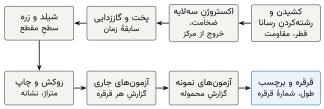
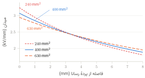
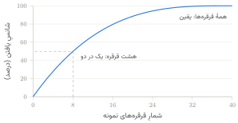
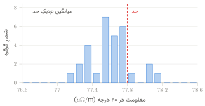
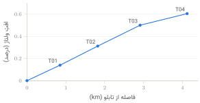
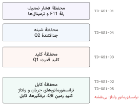
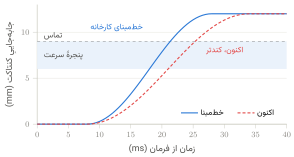
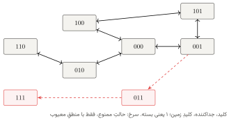
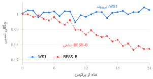

46 ساختِ کابل، اتصالدهنده، تابلوی قطعووصل و تابلوی حفاظت
46.1 نقشهٔ فصل
پس از این فصل، خواننده میتواند:
- فیزیکِ کابلِ 33 kV را برای کسی که آن را میخرد و میپذیرد بیان کند: میدان در عایق، مقاومتِ رسانا با دما، تلف و افتِ ولتاژِ یک رشته.
- سابقههای کارخانهٔ کابل را بخوانَد: مقاومتِ هر قرقره در 20 °C، ضخامتِ دو سرِ قرقره، طولِ چاپشده، گزارشِ آزمونِ جاری و تبارنامهٔ آمیزه.
- اتصالدهنده و سرکابل را با لکههای تماس، آزمونِ کششِ پرس و چرخهٔ گرمایی بسنجد.
- معماریِ تابلوی قطعووصل را بشناسد و پذیرشِ کارخانه را با عدد انجام دهد: مقاومتِ قطب به قطب، زمان و سرعتِ مکانیزم، اینترلاک، چگالیِ گاز، پوششِ آزمونِ نوعی و رابطِ سازندهها.
- تابلوی حفاظت و کنترل را از فهرستِ سیمکشی تا حمل دنبال کند: طرحِ ترمینال، آزمونِ نقطهبهنقطه، نشانهٔ سیم، زمینِ مدارِ ترانسفورماتورِ جریان، ماتریسِ قطع، اثرانگشتِ تنظیمها و فهرستِ نواقص.
- آزمونِ نوعی، جاری و ساختگاهی را از هم جدا کند و بگوید چرا هیچکدام جای دیگری را نمیگیرد.
- برنامهای بنویسد که فهرستِ کابل را وارسی کند و تکخطی را به محفظه، نقشهٔ ترمینال و آزمون برساند، و ماتریسِ بازرسی و آزمون را با مرزِ افرادِ صلاحیتدار بسازد.
پیشنیازها: کابل و تابلو (فصل 24)، حفاظت (فصل 26) و سامانهٔ تولید و کیفیت (فصل 40).
- مقاومتِ رسانای آلومینیومی با گرمشدن چه میکند؟
- آزمونِ نوعی و آزمونِ جاری چه فرقی دارند؟
- اینترلاکِ کلیدِ جداکننده و کلیدِ زمین از چه چیزی جلوگیری میکند؟
- چرا مدارِ ثانویهٔ ترانسفورماتورِ جریان زمین میشود؟
پاسخها: (۱) بالا میرود، حدودِ 0.4 % برای هر درجه؛ (۲) نوعی یک بار طرح را میآزماید، جاری هر واحد را؛ (۳) از زمینکردنِ مدارِ برقدار؛ (۴) تا در ولتاژی ناشناخته شناور نماند. اگر دو پرسش یا بیشتر را نتوانستید، بخش 24.2.1، بخش 24.3.2، بخش 24.4.1 و بخش 26.2.4 را مرور کنید.
جایگاهِ این فصل در نیروگاهِ P. فصلهای ۲۳ تا ۲۶ مدارهای 33 kV نیروگاه را طراحی کردند: کابلهای آلومینیومیِ 240، 400 و 630 mm² با عایقِ XLPE، دوازده تابلوی قطعووصل در دو بخش، و تابلوهای حفاظت و کنترل. این فصل همان محصولها را به سه کارخانهٔ ساختگی میبرد: سازندهٔ کابل، سازندهٔ تابلوی قطعووصل و سازندهٔ تابلوی حفاظت (A-482 تا A-489). فصلِ ۲۴ لایهها، ردههای آزمون، قرقرهها، خروج از مرکز و اجزای تابلو را آموخت. این فصل یک گام جلوتر میرود: به سابقهها و وارسیها. مقاومتِ هر قرقره، گزارشِ هر آزمون، هر قطب، هر سیم و هر تابع خوانده و با طرح مقایسه میشود. بخشِ «د» فهرستِ کابل را با برنامه وارسی میکند و تکخطی را تا محفظه، ترمینال و آزمون دنبال میکند. همه با تصمیمِ D-050 جمع میشوند.
سازندهها، دادهها و عیبها ساختگیاند و حدها آموزشی. این فصل هیچ روشِ آزمونی برای اجرا نمیدهد: نه ولتاژِ آزمون، نه جریانِ تزریق، نه گامِ کار روی تجهیزِ برقدار. فرایندِ ساختِ کابل هم فقط با هدف و سابقه آمده است، بیدما، سرعت یا مقدارِ اکستروژن و پخت. هر آزمون و کلیدزنی روی تجهیزی که ممکن است برقدار باشد، با سامانهٔ مجوزِ کارِ ساختگاه و به دستِ افرادِ صلاحیتدار انجام میشود (بخش 32.2.4). برنامههای این فصل فقط فهرستها و سابقهها را میخوانند.
46.2 الف. طراحی و ساختِ کابل و اتصالدهنده
46.2.1 محصول و مسیرِ آن در کارخانه
ایده. یک رشتهٔ کابلِ 33 kV از بیرون یک استوانهٔ سیاه است. درونش لایههایی است که هر کدام کاری دارند: رسانای آلومینیومیِ فشرده جریان را میبرد. پردهٔ نیمهرسانای رسانا سطحِ ناهموارِ رشتهها را صاف میکند تا میدان یکنواخت شود. عایقِ XLPE ولتاژ را نگه میدارد. پردهٔ عایق میدان را درونِ کابل میبندد. شیلدِ فلزی جریانِ خطا را به زمین میبرد. غلاف کابل را از آب و آسیب نگه میدارد (بخش 24.3.1). هر لایه در یک ایستگاهِ کارخانه ساخته میشود و هر ایستگاه سابقهای از خود به جا میگذارد. خریدار همین سابقهها را میخوانَد.

| گام | هدف | سابقه |
|---|---|---|
| کشیدن و رشتهکردنِ رسانا | سطحِ مقطع و فشردگی | قطر، مقاومتِ نمونه |
| اکستروژنِ سهلایه | عایقِ هممرکز و بیآلودگی | ضخامت، خروج از مرکز، محمولهٔ آمیزه |
| پخت و گاززدایی | ساختارِ پایدارِ عایق | سابقهٔ زمان و محفظه |
| شیلد و زره | راهِ جریانِ خطا | سطحِ مقطعِ سیمها |
| روکش و چاپ | محافظت و شناسایی | متراژِ چاپشده، نشانه |
| آزمونهای جاری | هر قرقره سالم است | گزارشِ هر قرقره |
| آزمونهای نمونه | تولید با طرح میخواند | گزارشِ محموله |
| قرقره و برچسب | حمل و تخصیص | طول، شمارهٔ قرقره |
رسانا. سیمِ آلومینیومی پس از کشیدن سخت و شکننده است. تابکاری آن را دوباره نرم و رسانا میکند. هدف این است که سیم خم شود بی آنکه بشکند و مقاومتش به مقدارِ طرح برسد. سابقهٔ آن مقاومتِ نمونه و آزمونِ کشش و ازدیادِ طول است. رشتهها سپس با هم پیچیده و فشرده میشوند تا قطر کم و سطح صاف شود. این کتاب دما و زمانِ تابکاری را نمیدهد.
| ویژگیِ طرح | جای آموزش در فصلِ ۲۴ | شاهدِ کارخانه در این فصل |
|---|---|---|
| مقاومتِ رسانا | بخش 24.2.1 | مقاومتِ هر قرقره در 20 °C (بخش 46.2.4) |
| جریانِ مجاز و ضریبهای کاهش | بخش 24.2.2، بخش 24.2.9 | سطحِ مقطع و جنسِ تأییدشده در گزارش |
| افتِ ولتاژ و تلف | بخش 24.2.3 | طولِ واقعیِ قرقره (بخش 46.2.5) |
| رفتارِ گرمایی | بخش 24.2.6 | ضخامت و آمیزهٔ عایق (بخش 46.2.3) |
| تنشِ الکتریکی در عایق | این فصل (بخش 46.2.2) | ضخامتِ کمینه، تخلیهٔ جزئی (بخش 46.2.6) |
| پرده و زره، تابِ خطا | بخش 24.2.4 | سطحِ مقطعِ شیلد در سابقهٔ نوبت |
| محیطِ نصب | بخش 24.2.9، بخش 24.2.8 | غلاف و چاپ، شرطِ انبار |
تعریفها. قرقره واحدِ تحویل و ردیابیِ کابل است. آمیزهٔ عایق پلیمرِ آمادهای است که به اکسترودر میرود و محمولهمحموله از سازندهٔ خودش میرسد. تبارنامه زنجیرهٔ «محمولهٔ آمیزه، نوبتِ اکستروژن، قرقره، کابل در فهرست» است. اگر یکی از این حلقهها نوشته نشود، یک خبرِ بد دربارهٔ آمیزه به همهٔ کابلهای نیروگاه میرسد (بخش 46.2.7).
46.2.2 میدان در عایق و نازکترین نقطه
ایده. عایقِ کابل ولتاژِ فاز به زمین، \(U_0\)، را میانِ دو استوانه نگه میدارد: پردهٔ رسانا با شعاعِ \(r_\text{c}\) و پردهٔ عایق با شعاعِ \(r_\text{i}\). بارِ رسانا در هر شعاع روی سطحی پخش میشود که با \(r\) بزرگ میشود، پس میدان با \(1/r\) کم میشود. انتگرالِ میدان از \(r_\text{c}\) تا \(r_\text{i}\) باید \(U_0\) شود. از این دو شرط:
\[ E(r) = \frac{U_0}{r\,\ln\left(r_\text{i}/r_\text{c}\right)} \tag{46.1}\]
فرضها و حدِ اعتبار. عایق هممرکز و یکنواخت است، پردهها همپتانسیلاند و کابل بلند است. نزدیکِ سرکابل، جایی که پردهٔ عایق بریده میشود، این فرضها میشکنند (بخش 46.2.8). در عایقِ خارج از مرکز، میدان در سمتِ نازک بیشتر است.
def field_kv_mm(u0_kv: float, r_mm: float, rc_mm: float,
ri_mm: float) -> float:
"""Field in a coaxial insulation at radius r (between the conductor
screen rc and the insulation screen ri): E = U0 / (r ln(ri / rc))."""
import math
return u0_kv / (r_mm * math.log(ri_mm / rc_mm))field in the XLPE of the 33 kV cores, U0 = 19.05 kV, insulation 8.0 mm
size mm2 rc mm ri mm E at rc kV/mm E at ri kV/mm ratio
240 10.0 18.0 3.24 1.80 1.80
400 12.7 20.7 3.07 1.88 1.63
630 15.7 23.7 2.95 1.95 1.51
the field is highest at the conductor screen and falls as 1/r;
a thin spot of 7.1 mm on the 240 mm2 core raises the peak to 3.55 kV/mm
(+10%); with the same outer radius the lowest peak, 2.88 kV/mm,
would need rc = ri / e = 6.6 mm; the 33 kV cores sit at ri / rc
1.5-1.8, not e = 2.72: their conductor is set by the current
and their insulation by a minimum thickness, so the e-rule
matters for HV cables, where the insulation is thick
مثال 46.1 (نازکترین نقطه، بیشترین میدان) پرسش. بیشینهٔ میدان در هستهٔ 240 mm² چقدر است؟ اگر عایق در یک نقطه 7.1 mm باشد، چه میشود؟
پاسخ. با \(r_\text{c} = 10.0\,\text{mm}\) و \(r_\text{i} = 18.0\,\text{mm}\)، \(E = 19.05/(10.0 \times \ln 1.8) = 3.24\,\text{kV/mm}\). با ضخامتِ \(7.1\,\text{mm}\) عدد به \(3.55\,\text{kV/mm}\) میرسد، یعنی 10 % بیشتر.
بررسیِ معقولبودن. نسبتِ میدان در دو پرده باید \(r_\text{i}/r_\text{c} = 1.8\) شود. جدول همین را نشان میدهد.
تفسیر. میدان در پردهٔ رسانا بیشینه است. هر برآمدگی یا آلودگی در همانجا بیشترین بار را میبیند. برای همین پردهٔ رسانا صاف است و آمیزه تمیز. ضخامت با کمینهاش پذیرفته میشود، نه با میانگینش (بخش 46.2.3).
چرا هستهٔ باریک بیشینهٔ بالاتری دارد؟ شعاعِ انحنای کم میدان را روی سطحِ کوچکتری فشرده میکند. اگر شعاعِ بیرونی ثابت باشد، بیشینه در \(r_\text{c} = r_\text{i}/e\) کمینه میشود. هستههای 33 kV از این نسبت دورند، چون رسانا را جریان تعیین میکند و عایق را یک ضخامتِ کمینه. این قاعده در کابلهای فشارِ قوی که عایقِ ضخیم دارند به کار میآید.
46.2.3 ضخامتِ عایق از دو سرِ قرقره
ایده. کارخانه از دو سرِ هر قرقره برش میزند و ضخامتِ عایق را در چند نقطه دورِ هسته میسنجد. دو قاعدهٔ آموزشی هست: میانگین دستکم برابرِ مقدارِ اسمی، و نازکترین نقطه بالاتر از یک کمینه. فصلِ ۲۴ خروج از مرکز را با شاخصِ توان سنجید (مثال 24.22). اینجا سابقهٔ هر قرقره خوانده میشود.
insulation thickness from drum-end slices, nominal 8.0 mm
(teaching rules: mean >= nominal; thinnest point >= 7.1 mm)
drum end mean min eccentricity verdict
D401 in 8.27 8.18 2.0% ok
D401 out 8.27 8.20 1.6% ok
D402 in 8.08 6.95 21.5% FAIL thin point
D402 out 8.25 8.19 1.4% ok
D403 in 8.21 8.15 1.5% ok
D403 out 8.22 8.16 1.7% ok
D405 in 8.10 8.05 1.2% ok
D405 out 7.93 7.90 0.8% FAIL mean
D402's inner end passes on its mean but has a thin point: the
core was off centre there, and the field peaks at the thin
side (e_field); D405's outer end is concentric but thin all
round - two different faults, both found only because each
drum's two ends are measured and kept in its recordمثال 46.2 (دو خرابی، دو شکل) پرسش. کدام سرهای قرقره رد میشوند و چرا؟
پاسخ. سرِ درونیِ D402 با میانگینِ 8.08 mm قاعدهٔ میانگین را میگذراند، ولی نازکترین نقطهاش 6.95 mm است و خروج از مرکزش 21.5 %. سرِ بیرونیِ D405 هممرکز است، ولی میانگینش 7.93 mm است.
تفسیر. اولی هستهای است که در قالب جابهجا شده است. دومی عایقی است که همهجا نازک است. هر دو را فقط سنجشِ دو سرِ هر قرقره پیدا میکند. اگر فقط یک سر سنجیده شود، D402 از سرِ بیرونیاش قبول میشود.
46.2.4 مقاومتِ رسانا در دمای ۲۰ درجه
ایده. مقاومتِ رسانا با دما بالا میرود. حدِ گزارش برای 20 °C است، ولی قرقره در انبار گرم یا سرد است. پس عددِ خواندهشده باید به 20 °C برگردد:
\[ R_{20} = \frac{R_\theta}{1 + \alpha_{20}\,(\theta - 20)} \tag{46.2}\]
برای آلومینیوم \(\alpha_{20} = 0.00403\ \text{K}^{-1}\) است. دمای قرقره با خوانش ثبت میشود، وگرنه تصحیح ممکن نیست.
DRUMS = [ # drum, length m, measured ohm (whole length), temperature C
("D401", 1000, 0.0790, 24.0), ("D402", 1000, 0.0781, 22.0),
("D403", 1000, 0.0756, 12.0), ("D404", 1000, 0.0826, 25.0),
("D405", 1000, 0.0779, 21.0), ("D406", 1000, 0.0748, 9.0),
]
R20_MAX = 0.0778 # ohm/km, 400 mm2 Al, the design value used as limitconductor resistance of 400 mm2 Al drums, corrected to 20 C;
limit 0.0778 ohm/km
drum measured ohm at C ohm/km at 20 C verdict
D401 0.0790 24 0.0777 ok
D402 0.0781 22 0.0775 ok
D403 0.0756 12 0.0781 REJECT
D404 0.0826 25 0.0810 REJECT
D405 0.0779 21 0.0776 ok
D406 0.0748 9 0.0783 REJECT
rejected after the correction: D403, D404, D406
read raw, the limit would reject D401, D402, D405 (warm, good)
and pass D403, D406 (cold, high) - D404 is high at any temperature;
only the reading corrected to 20 C is compared, with the
temperature kept in the drum's recordمثال 46.3 (گرمِ خوب و سردِ بد) پرسش. قرقرهٔ D406 در 9 °C مقدارِ \(0.0748\,\Omega\) را نشان داد. قبول است؟
پاسخ. \(R_{20} = 0.0748/(1 + 0.00403 \times (9 - 20)) = 0.0748/0.9557 = 0.0783\,\Omega\) برای یک کیلومتر. این از حدِ \(0.0778\) بیشتر است و قرقره رد میشود.
تفسیر. خوانشِ خام آن را قبول میکرد و در عوض سه قرقرهٔ گرمِ سالم را رد. تصحیح نتیجه را برعکس کرد. D404 در هر دمایی زیاد است. خروجیها این سه قرقره را به فهرستِ کابل میرسانند (بخش 46.5.4).
46.2.5 طولِ چاپشده روی غلاف
ایده. کارخانه هر متر را روی غلاف چاپ میکند. عددِ دو سرِ قرقره طولِ واقعی را میدهد، مستقل از برچسب.
drum D405: label 1000 m; sheath print 2012 m at the inner end,
2997 m at the outer end
length by the print: 985 m - 15 m short of the label
the print is the cable's own record of its length: the
receiving check reads both ends and the schedule's lengths
are cut from what is really on the drumمثال 46.4 (پانزده متر کم) پرسش. برچسبِ D405 1000 m میگوید و چاپِ دو سر 2012 و 2997. طولِ واقعی؟
پاسخ. \(2997 - 2012 = 985\,\text{m}\)، یعنی 15 m کمتر از برچسب.
تفسیر. گزارشِ آزمونِ همین قرقره هم 985 m نوشته است (بخش 46.2.6). برچسب اشتباه بود، گزارش نه. اگر کابلی از فهرست با طولِ 990 m به این قرقره داده میشد، در ترانشه کوتاه میآمد و یک مفصلِ اضافه لازم میشد.
46.2.6 گزارشِ آزمونِ جاری، سطر به سطر
ایده. هر قرقره گزارشِ آزمونِ جاری دارد: مقاومتِ رسانا، تخلیهٔ جزئی و آزمونِ ولتاژ (بخش 24.3.2). گزارش با «قبول» در صفحهٔ اول پذیرفته نمیشود. هر سطر با سابقههای دیگر سنجیده میشود: تاریخِ ساخت، طولِ برچسب و کالیبراسیونِ ابزار. این بخش فقط نتیجهها را میخوانَد. ولتاژ و روشِ آزمون کارِ سازنده است.
routine test reports of 7 drums read as records (results only)
drum finding
D403 conductor result FAIL - the drum may not ship
D404 tested before it was made (date slip or wrong drum)
D404 conductor result FAIL - the drum may not ship
D405 report length 985 m, label 1000 m
D406 conductor result FAIL - the drum may not ship
D406 PD result missing
D407 instrument calibration expired on the test date
7 findings on 5 drums: three drums were shipped
although the maker's own report failed them on conductor
resistance (the buyer's corrected check of lesson A found the
same three), a test dated before the drum was
made, a short length the report admits but the label hides,
a missing PD result and a test on an expired instrument -
a report is accepted line by line, not by its front pageمثال 46.5 (صفحهٔ اول میگفت «قبول») پرسش. چند یافته در هفت گزارش هست؟ کدام از همه بدتر است؟
پاسخ. هفت یافته در پنج قرقره. بدتر از همه این است که سه قرقره با گزارشی حمل شدهاند که خودِ سازنده در آن مقاومت را رد کرده بود.
تفسیر. آزمونِ تصحیحشدهٔ خریدار در مثال 46.3 همان سه قرقره را رد کرد. پس دو راهِ مستقل به یک نتیجه رسیدند. اما اگر خریدار گزارش را میخواند، اصلاً آزمونِ دوم لازم نبود. آزمونی که پیش از ساختِ قرقره تاریخ خورده یعنی جابهجاییِ گزارشها یا خطای تاریخ. کالیبراسیونِ منقضی، نتیجهٔ آزمون را بیپشتوانه میکند.
46.2.7 محمولهٔ آمیزه و تبارنامهٔ قرقره
ایده. سازندهٔ آمیزه گاهی خبر میدهد که یک محموله مشکوک است. پرسشِ خریدار این است: کدام قرقرهها، کدام کابلها؟ پاسخ از تبارنامه میآید، و دقتش به این بستگی دارد که نقطهٔ تعویضِ محموله در هر نوبتِ اکستروژن نوشته شده باشد یا نه.
compound maker's notice on insulation lot C-17: which drums, which cables?
runs that used it: R4, R5 (mixed lots in R4)
drums: D404, D405, D406, D407
cables cut from them: W013, W017, W020; in stock: D407
run R4 changed lots part-way and the change point was not
recorded, so both of its drums count - one written changeover
position could have taken a drum off the list; D404 and D406
were already rejected on resistance, so the notice adds W017
and the stock drum: their PD reports are re-read and the
maker's lot analysis decides; the drum stays on hold until thenمثال 46.6 (یک نقطهٔ تعویضِ نانوشته) پرسش. خبرِ محمولهٔ C-17 به کدام کابلها میرسد؟
پاسخ. نوبتهای R4 و R5 از آن استفاده کردند: قرقرههای D404 تا D407. سه کابلِ W013، W017 و W020 از آنها بریده میشوند و D407 در انبار است.
تفسیر. D404 و D406 پیشتر برای مقاومت رد شده بودند. پس خبر فقط W017 و قرقرهٔ انبار را اضافه میکند. گزارشِ تخلیهٔ جزئیِ آنها دوباره خوانده میشود و قرقرهٔ انبار تا پاسخِ سازندهٔ آمیزه نگه داشته میشود. در نوبتِ R4 محموله وسطِ کار عوض شد و جای آن نوشته نشد، پس هر دو قرقره مشکوکاند. یک سطرِ نوشته میتوانست یکی را از فهرست بیرون ببرد.
46.2.8 سرکابل و اتصالدهنده: کنترلِ تنشِ الکتریکی
ایده. در سرکابل پردهٔ عایق بریده میشود. در لبهٔ برش، خطوطِ میدان که در کابل شعاعی بودند، ناگهان روی لبه جمع میشوند. میدانِ مماسی روی سطحِ عایق آنقدر بالا میرود که تخلیهٔ سطحی آغاز شود. کنترلِ تنشِ الکتریکی این تمرکز را پخش میکند. مخروطِ تنش با هندسه این کار را میکند: پرده را بهآرامی از عایق دور میکند. لولهٔ کنترلِ تنش با مادهای که گذردهیِ بالا یا رسانندگیِ غیرخطی دارد، میدان را در طولِ بیشتری پخش میکند.
ساخت و سابقه. کیتِ سرکابل در کارخانه ساخته و آزمونِ نوعی میشود. اما سرکابل در ساختگاه سرهم میشود: طولِ برش، تمیزی، جای لوله و پرس. پس کیفیتِ آن کارِ مفصلسازِ آموزشدیده است و سابقهاش برگهٔ مفصلسازی: شمارهٔ کیت و محموله، طولها، عکسها و ابزارِ پرس (بخش 24.5.4). این کتاب گامهای سرهمکردن را نمیدهد. دستورِ سازندهٔ کیت و صلاحیتِ مفصلساز تعیینکنندهاند.
| عیب در سرکابل | اثر | شاهدِ پیشگیری |
|---|---|---|
| بریدگی در عایق هنگامِ برداشتنِ پرده | تمرکزِ میدان، تخلیهٔ جزئی | برگهٔ مفصلسازی، عکس |
| لوله بیرون از جای خود | لبهٔ پرده بیکنترل | طولهای نوشتهشده، عکس |
| رطوبت یا گرد زیرِ لوله | مسیرِ خزش، تخلیهٔ سطحی | شرایطِ محیط، تمیزکاری |
| پرسِ ناقص یا ابزارِ نادرست | گرمای اتصال، شُلشدن | شمارهٔ ابزار، آزمونِ کششِ نمونه |
| کیتِ نامناسب برای سطحِ مقطع | جای نادرستِ اجزا | شمارهٔ کیت با فهرستِ کابل |
46.2.9 لکههای تماس و مقاومتِ تنگش
ایده. دو سطحِ فلزیِ صاف در واقع فقط در چند لکهٔ کوچک به هم میرسند. جریان باید از این لکهها بگذرد و در نزدیکیِ آنها تنگ میشود. این مقاومتِ تنگش است (نظریهٔ هولم، به انگلیسی Holm). اگر نیروی \(F\) روی \(n\) لکه پخش شود و فلز با سختیِ \(H\) تسلیم شود، شعاعِ هر لکه و مقاومت:
\[ a = \sqrt{\frac{F}{n\,\pi\,H}}, \qquad R_\text{c} = \frac{\rho}{2\,n\,a} \tag{46.3}\]
پس \(R_\text{c}\) با \(1/\sqrt{F}\) و با \(1/\sqrt{n}\) کم میشود. همان قاعدهٔ آموزشیِ گشتاور در فصلِ ۲۴ از اینجا میآید (مثال 24.43).
def holm_r(force_n: float, rho_ohm_m: float, hardness_pa: float,
spots: int = 1) -> float:
"""Constriction resistance of n equal contact spots sharing the force
(Holm): spot radius a = sqrt(F / (n pi H)), R = rho / (2 n a)."""
import math
a = math.sqrt(force_n / (spots * math.pi * hardness_pa))
return rho_ohm_m / (2 * spots * a)constriction resistance of a bolted joint (Holm), micro-ohm
force kN Al 1 spot Al 10 spots Cu 1 spot Cu 10 spots
5 7.02 2.22 6.10 1.93
10 4.96 1.57 4.31 1.36
20 3.51 1.11 3.05 0.96
40 2.48 0.78 2.16 0.68
resistance falls as 1 / sqrt(force) and with the number of
spots: a clean, flat, well-tightened face makes many spots;
an oxide film on aluminium adds far more than the table and
is broken by the contact preparation the maker specifies
heat in one phase of a lug at 368 A (string WS1, W001):
10 micro-ohm: 1.4 W
30 micro-ohm: 4.1 W
100 micro-ohm: 13.5 W
the bad joint heats ten times more - and its heat oxidises the
faces, which raises the resistance further: a joint drifts
one way, so a torque mark and a thermal image are kept (ch 24)مثال 46.7 (یک لکه یا ده لکه) پرسش. با نیروی 20 kN روی آلومینیوم، مقاومتِ تنگش با یک لکه و ده لکه چقدر است؟
پاسخ. با یک لکه \(a = \sqrt{20000/(\pi \times 0.4 \times 10^9)} = 3.99\,\text{mm}\) و \(R_\text{c} = 2.8\times10^{-8}/(2 \times 0.00399) = 3.51\,\mu\Omega\). با ده لکه 1.11 µΩ.
تفسیر. سطحِ تمیز و صاف لکههای بیشتری میسازد. لایهٔ اکسیدِ آلومینیوم مقاومتی بسیار بیشتر از جدول میگذارد. آمادهسازیِ سطحی که سازنده میخواهد آن را میشکند. مثالِ گرما نشان میدهد چرا اتصال یکسویه بدتر میشود: گرما سطح را اکسید میکند، مقاومت بالا میرود و گرما بیشتر میشود.
سازگاریِ مواد. آلومینیوم کنارِ مس در حضورِ رطوبت خوردگیِ گالوانیک میگیرد. کابلشوی دوفلزی یا پوشش این دو را از هم جدا میکند. آلومینیوم زیرِ فشارِ پیوسته هم کمی خزش دارد و نیروی اتصال با زمان کم میشود. واشرِ فنری و گشتاورِ درست این را جبران میکنند (بخش 24.4.5). پس «سازگاری» در فهرستِ اتصالدهنده یعنی جنسِ دو سو، پوشش، سطحِ مقطع و خانوادهٔ ابزار با هم.
46.2.10 آزمونِ کششِ پرس
ایده. کابلشوی پرسی با ابزار و قالبِ مشخص روی رسانا فشرده میشود. نمونههایی از هر محموله و هر ابزار با آزمونِ کشش سنجیده میشوند: نیرویی که کابلشو را از رسانا جدا میکند. شمارهٔ ابزار با هر نتیجه ثبت میشود. فصلِ ۴۰ توانِ فرایندِ پرس را سنجید (بخش 40.5.16).
pull test of 12 lugs on 240 mm2 Al, minimum 4.5 kN (teaching)
forces kN: 5.6, 5.9, 5.4, 5.8, 6.0, 5.7, 3.1, 5.5, 5.9, 5.6, 3.4, 5.8
below the minimum: no 7 3.1 kN (tool B); no 11 3.4 kN (tool B)
both low pulls come from tool B: the crimp tool, not the lug,
is the suspect - every lug made with tool B since its last
check is traced and re-made, and the tool goes to calibration
(ch 40 crimp capability, ch 24 terminations)مثال 46.8 (ابزار، نه کابلشو) پرسش. دو نمونه زیرِ کمینهٔ 4.5 kN افتادند. محمولهٔ کابلشو رد میشود؟
پاسخ. نه لزوماً. هر دو نمونهٔ ضعیف با ابزارِ B پرس شدهاند و ده نمونهٔ ابزارِ A همه دستکم 5.4 kN هستند.
تفسیر. مظنون ابزار است. هر کابلشویی که از آخرین وارسیِ ابزارِ B با آن پرس شده، ردیابی و دوباره ساخته میشود. ابزار به کالیبراسیون میرود. این ردیابی فقط وقتی ممکن است که شمارهٔ ابزار در برگهٔ هر پرس نوشته شده باشد.
46.2.11 پیرشدنِ اتصالِ پرسی
ایده. اتصالی که امروز خوب است ممکن است با گرم و سرد شدن شُل شود. گزارشِ صلاحیتِ کابلشو مقاومتِ اتصال را پس از صدها چرخهٔ گرمایی نشان میدهد. معیارِ آموزشی پایداریِ نسبت است: مقاومتِ اتصال تقسیم بر مقاومتِ رسانایی به همان طول.
crimp joints in a heat-cycling qualification report (teaching):
resistance of the joint / resistance of an equal conductor
lug 0 cycles 1000 cycles rise per 1000 reaches 1.0 at
L-A 0.62 0.64 0.02 20781 cycles
L-B 0.65 0.95 0.31 1147 cycles
both joints start below the conductor, so both pass a test on
day one; L-B's joint loosens with each cycle - the stability
of the ratio is the evidence, and only a cycling test shows it
(the qualification report is asked for by lug and tool, ch 39)مثال 46.9 (هر دو امروز قبولاند) پرسش. کدام طرحِ کابلشو پذیرفته میشود؟
پاسخ. L-A با رشدِ 0.02 در هر هزار چرخه پایدار است. نسبتِ L-B در هزار چرخه از 0.65 به 0.95 رسیده است و با همین روند در حدودِ 1150 چرخه از 1.0 میگذرد.
تفسیر. آزمونِ روزِ اول هر دو را قبول میکند. شاهدِ کیفیت شیبِ نسبت است و فقط آزمونِ چرخهای آن را نشان میدهد. گزارشِ صلاحیت برای همان کابلشو و همان ابزار خواسته میشود (فصلِ ۳۹).
46.2.12 تلف و افتِ ولتاژِ یک رشتهٔ جمعآوری
ایده. رشتهٔ WS1 چهار توربینِ 5 MW را به تابلو میرساند. هر بخش جریانِ توربینهای پس از خود را میبرد. تلف و افتِ ولتاژ از رابطههای فصلِ ۲۴ حساب میشوند (بخش 24.2.3):
\[ P_\text{loss} = 3\,I^2 R\,L, \qquad \Delta U = \sqrt{3}\,I\,L\,(R\cos\varphi + X\sin\varphi) \tag{46.4}\]
def string_loss(p_mw: float = 5.0, kv: float = 33.0, pf: float = 0.95,
theta: float = 70.0) -> dict:
"""Loss and drop of collector string WS1 at full output: segment k
carries the turbines beyond it."""
rows = [r for r in src.schedule() if r["id"] in ("W001", "W002", "W003")]
rows.append(dict(id="W004", size_mm2=240, length_m=1210)) # as meant
n = len(rows)
i_t = p_mw * 1e6 / (math.sqrt(3) * kv * 1e3 * pf) # one turbine
loss = drop = 0.0
seg = []
for k, r in enumerate(rows):
i = (n - k) * i_t
c = s24.MV_CABLES[int(r["size_mm2"])]
rr = cb.r_at(c["r20"], theta, 0.00403) # aluminium
l_km = r["length_m"] / 1000
lw = cb.loss_kw(i, rr, l_km)
dp = cb.drop_pct(i, l_km, rr, c["x"], pf, kv)
loss += lw
drop += dp
seg.append((r["id"], r["size_mm2"], r["length_m"], i, lw, dp))
return dict(seg=seg, loss=loss, drop=drop, p=n * p_mw)collector string WS1 at full output, 4 x 5 MW, 33 kV, pf 0.95, conductor 70 C
segment mm2 length m current A loss kW drop %
W001 630 850 368 19.5 0.140
W002 400 970 276 20.8 0.172
W003 240 1090 184 16.7 0.188
W004 240 1210 92 4.6 0.105
total loss 62 kW (0.31% of 20 MW); drop to the far turbine 0.61 %
the two segments nearest the switchgear make 65% of the
loss (largest W002); their larger sections keep it from
growing with the square of the current - the grading of ch 24
- the schedule's slip of W004 (1.21 'm') was put back to
1,210 m before this sum; with the slip the loss would be
computed on a cable a thousand times too shortمثال 46.10 (شصتودو کیلووات در یک رشته) پرسش. تلفِ رشته و افتِ ولتاژ تا دورترین توربین در توانِ کامل چقدر است؟
پاسخ. 62 kW، یعنی 0.31 % از 20 MW. افت تا دورترین توربین 0.61 % است. دو بخشِ نزدیکِ تابلو 65 % تلف را میسازند.
بررسیِ معقولبودن. بخشِ W001 با دست در مثال 46.59 حساب شده است و همان 19.5 kW را میدهد.
تفسیر. دو نکتهٔ ساخت در این حساب هست. نخست، طولِ W004 در فهرست 1.21 نوشته شده بود، یعنی کیلومتر بهجای متر. پیش از جمع درست شد. با آن خطا، تلف روی کابلی هزار برابر کوتاهتر حساب میشد. دوم، ضریبِ دمایی برای آلومینیوم 0.00403 است، نه عددِ مس. هر دو را وارسیِ فهرست و یک بازبینیِ دستی میگیرند.
46.2.13 خطاهای رایج
- مقایسهٔ مقاومتِ خواندهشده با حدِ 20 °C بیتصحیحِ دما (مثال 46.3).
- پذیرشِ ضخامت با میانگین، یا سنجشِ فقط یک سرِ قرقره (مثال 46.2).
- پذیرشِ گزارشِ آزمون با صفحهٔ اول (مثال 46.5).
- ننوشتنِ نقطهٔ تعویضِ محمولهٔ آمیزه، یا شمارهٔ ابزارِ پرس (مثال 46.6، مثال 46.8).
- پذیرشِ کابلشو با آزمونِ روزِ اول، بیگزارشِ چرخهٔ گرمایی (مثال 46.9).
- اعتماد به برچسبِ قرقره بهجای متراژِ چاپشده (مثال 46.4).
46.2.14 نمونهگیری از یک محموله قرقره
ایده. آزمونِ نمونهای روی چند قرقره از یک محموله انجام میشود (بخش 24.3.2). اگر در محمولهٔ \(N\) قرقرهای \(k\) قرقرهٔ بد باشد، شانسِ آنکه نمونهٔ \(n\) تایی دستکم یکی را بیابد از توزیعِ فوقهندسی میآید:
\[ P = 1 - \frac{\binom{N-k}{n}}{\binom{N}{n}} \tag{46.5}\]
a lot of 40 drums with 3 thin-insulation drums: chance a sample finds one
drums sampled chance to find at least one
1 7.5%
2 14.6%
4 27.7%
8 49.8%
16 79.5%
a sample test checks that production matches the design; it
cannot find a few bad drums - that is why the thickness of
both ends of every drum is in its routine record (lesson A)
مثال 46.11 (یک در دو با هشت قرقره) پرسش. با نمونهٔ هشتتایی، شانسِ یافتنِ یکی از سه قرقرهٔ نازک چقدر است؟
پاسخ. \(1 - \binom{37}{8}/\binom{40}{8} = 0.498\)، یعنی تقریباً یک در دو. با یک قرقره 7.5 %.
تفسیر. آزمونِ نمونهای نشان میدهد تولید با طرح میخواند. چند قرقرهٔ بد را پیدا نمیکند. برای همین ضخامتِ دو سرِ هر قرقره در سابقهٔ جاریاش آمده است (بخش 46.2.3). نمونه و آزمونِ جاری دو کار متفاوت میکنند.
46.2.15 ظرفیتِ خازنی از هندسه
ایده. همان دو استوانهای که میدان را ساختند، یک خازناند. از معادلهٔ 46.1، بار بر واحدِ طول و ولتاژ ظرفیت را میدهند:
\[ C = \frac{2\pi\,\varepsilon_0\,\varepsilon_\text{r}}{\ln\left(r_\text{i}/r_\text{c}\right)} \tag{46.6}\]
capacitance of a core from its geometry,
C = 2 pi eps0 eps_r / ln(ri/rc), eps_r 2.3
size mm2 C uF/km (geometry) C uF/km (ch 24 data) charging A/km
240 0.218 0.21 1.30
400 0.262 0.25 1.57
630 0.311 0.30 1.86
the geometry gives the data-sheet values within 5 %; a core
thinned to 7.1 mm all round would show 0.239 uF/km (+10%) -
capacitance is a second, independent look at the same
geometry that the thickness slices measureمثال 46.12 (نگاهی دوم به همان هندسه) پرسش. ظرفیتِ هستهٔ 240 mm² از هندسه چقدر است؟ عایقِ 7.1 mm آن را چقدر تغییر میدهد؟
پاسخ. \(C = 2\pi \times 8.854\times10^{-12} \times 2.3/\ln 1.8 = 0.218\,\mu\text{F/km}\)، نزدیکِ 0.21 در دادههای فصلِ ۲۴. با عایقِ نازک 0.239 µF/km، یعنی 10 % بیشتر.
تفسیر. هندسه دادههای برگهٔ سازنده را در 5 % بازمیسازد. پس دادهٔ برگه با طرحِ لایهها سازگار است. ظرفیت نگاهِ دوم و مستقلی به همان هندسه است که برشهای ضخامت میسنجند. جریانِ شارژ، حدودِ 1.3 تا 1.9 A در هر کیلومتر، در تعادلِ توانِ واکنشیِ فصلِ ۲۷ آمده است.
46.2.16 تخلیهٔ جزئی و نوفهٔ زمینه
ایده. نتیجهٔ تخلیهٔ جزئی با نوفهٔ زمینهٔ همان آزمون معنا دارد. اگر نوفهٔ محلِ آزمون از حدِ پذیرش بیشتر باشد، آزمون نمیتوانست تخلیهای در اندازهٔ حد را ببیند، هرچه عدد کوچک باشد. این بخش فقط نتیجهها را میخوانَد. ولتاژ و روشِ آزمون کارِ سازنده است.
PD results read against the background of the same test (teaching limit 10 pC)
drum PD pC background pC verdict
D401 2 1 pass
D402 9 3 pass, close to the limit
D403 2 2 pass
D404 4 2 pass
D405 3 1 pass
D406 - - NO RESULT (lesson A)
D407 2 1 pass
D408 5 14 NOT CREDIBLE - background above the limit
a reading of 5 pC means nothing when the test bay's own noise
is 14 pC: the bay could not have seen a 10 pC discharge, so
D408's report is asked again; D406 has no PD line at all
(lesson A) - a result is read with its backgroundمثال 46.13 (پنج پیکوکولن در نوفهٔ چهارده) پرسش. نتیجهٔ D408 با 5 pC قبول است؟
پاسخ. نه. نوفهٔ زمینهٔ همان آزمون 14 pC بود، بالاتر از حدِ آموزشیِ 10 pC. نتیجه باورپذیر نیست و گزارش دوباره خواسته میشود.
تفسیر. D406 اصلاً سطرِ تخلیهٔ جزئی ندارد (مثال 46.5). D402 با 9 pC قبول است، ولی نزدیکِ حد. اگر خبرِ آمیزهای به آن برسد، اول دوباره خوانده میشود. عدد بیزمینهاش فقط یک عدد است.
46.2.17 توانِ فرایندِ مقاومتِ سازنده
ایده. سه قرقرهٔ ردشدهٔ مثال 46.3 بدشانسی بودند یا نشانهٔ فرایند؟ پاسخ در سابقهٔ همهٔ قرقرههای سازنده است. شاخصِ توانِ یکسویه، \(C_\text{pk} = (\text{USL} - \bar x)/(3s)\)، میگوید فرایند چقدر از حد فاصله دارد (فصلِ ۴۰).
conductor resistance of the maker's last 30 drums of 400 mm2, at 20 C
mean 0.07760, sd 0.00023 ohm/km; limit 0.0778
Cpk 0.29; expected over the limit 19.4 %; found 4 of 30
a Cpk of 1.33 would need the mean at 0.07686 ohm/km
D403 and D406 of lesson A are this process's expected tail:
the maker runs its conductor close to the limit to save
aluminium; D404 at 0.0810 lies far outside it - a different
cause (wrong conductor or wrong report: its test was dated
before it was made); the supplier audit asks where the
process is centred, and the purchase specification can ask
for the capability (ch 39)
مثال 46.14 (فرایندی که به حد چسبیده است) پرسش. شاخصِ توان چقدر است؟ برای \(C_\text{pk} = 1.33\) میانگین کجا باید باشد؟
پاسخ. \(C_\text{pk} = (0.0778 - 0.07760)/(3 \times 0.00023) = 0.29\). انتظار میرود حدودِ 19 % قرقرهها از حد بگذرند و در سابقه ۴ از ۳۰ گذشتهاند. برای \(1.33\) میانگین باید \(0.0778 - 4 \times 0.00023 = 0.07686\) باشد.
تفسیر. D403 و D406 دنبالهٔ همین فرایندند: سازنده رسانا را برای صرفهجویی در آلومینیوم نزدیکِ حد میسازد. D404 با 0.0810 بیرون از این توزیع است و علتی دیگر دارد، شاید رسانای نادرست یا گزارشِ نادرست. آزمونش هم پیش از ساخت تاریخ خورده بود. پرسشِ ممیزیِ سازنده این است که فرایند کجا متمرکز است. مشخصهٔ خرید میتواند توان را بخواهد (فصلِ ۳۹).
46.2.18 دمای کدام؟ رسانا یا هوا
ایده. معادلهٔ 46.2 دمای رسانا را میخواهد. دماسنج معمولاً هوا را میخوانَد. قرقرهای که صبح از انبارِ سرد آمده و ظهر خوانده میشود، هستهای سردتر از هوا دارد.
drum D401: 0.079 ohm read with the air at 24 C;
the conductor inside may differ
conductor C ohm/km at 20 C verdict
24 0.0777 ok
22 0.0784 REJECT
20 0.0790 REJECT
18 0.0796 REJECT
a drum brought from the cold yard in the morning and read at
noon has a core cooler than the air: the same reading passes
at 24 C and fails at 22 C - the drum rests indoors long enough
for the core to reach the room, and the record says soمثال 46.15 (دو درجه میانِ قبول و رد) پرسش. اگر هستهٔ D401 بهجای 24 °C در 22 °C بوده باشد، رای چه میشود؟
پاسخ. \(0.0790/(1 + 0.00403 \times 2) = 0.0784\,\Omega\) در کیلومتر، بالای حدِ 0.0778. قرقره رد میشود.
تفسیر. D401 فقط 0.0001 زیرِ حد است، پس دو درجه رای را برمیگرداند. قرقره پیش از سنجش آنقدر در اتاق میماند که هسته به دمای اتاق برسد، و سابقه مدتِ ماندن را مینویسد. این بخشی از روشِ سنجشِ سازنده یا آزمایشگاهِ دریافت است، نه حسابی که بعداً درست شود.
46.2.19 نیمرخِ افتِ ولتاژ در طولِ رشته
ایده. افتِ ولتاژ از تابلو تا دورترین توربین بخش به بخش جمع میشود (معادلهٔ 46.4). شیبِ هر بخش به جریان و سطحِ مقطعِ آن بستگی دارد.

مثال 46.16 (شیبی که پلهها ثابت نگه میدارند) پرسش. شیبِ افت در هر بخش، بر حسبِ درصد در کیلومتر، چقدر است؟
پاسخ. \(0.140/0.85 = 0.16\)، \(0.172/0.97 = 0.18\)، \(0.188/1.09 = 0.17\) و \(0.105/1.21 = 0.09\) درصد در کیلومتر.
تفسیر. جریان از 368 به 92 A کم میشود، ولی سطحِ مقطع هم کم میشود. پس شیب در سه بخشِ نخست تقریباً ثابت میماند. این همان هدفِ پلهبندیِ فصلِ ۲۴ است (بخش 24.7.1). اگر سرکابل یا مفصلی در یک بخش مقاومتِ زیادی بگذارد، یک پلهٔ ناگهانی در این خط میسازد. نیمرخِ اندازهگیریشده در راهاندازی آن را نشان میدهد.
- چرا میدان در پردهٔ رسانا بیشینه است؟
- معادلهٔ 46.1 را برای هستهٔ 630 mm² حساب کنید.
- چرا ضخامت با کمینهاش پذیرفته میشود؟
- خوانشِ 0.0790 Ω در 24 °C را به 20 °C ببرید.
- چرا دمای قرقره با خوانش نوشته میشود؟
- طولِ واقعیِ قرقره از کجا میآید؟
- سه چیزی را نام ببرید که در گزارشِ آزمونِ جاری با سابقههای دیگر سنجیده میشوند.
- نقطهٔ تعویضِ محموله چیست و چرا نوشته میشود؟
- چرا سرکابل کنترلِ تنش میخواهد؟
- مقاومتِ تنگش با دو برابر شدنِ نیرو چه میکند؟
- چرا شمارهٔ ابزارِ پرس با هر نتیجهٔ کشش ثبت میشود؟
- چرا آزمونِ روزِ اولِ کابلشو کافی نیست؟
46.3 ب. معماریِ محصولِ تابلوی قطعووصل
46.3.1 محفظهها و ردیفِ تابلوها
ایده. یک تابلوی 33 kV چند محفظه دارد که با دیوارهٔ فلزی از هم جدا شدهاند: محفظهٔ شینه، محفظهٔ کلید، محفظهٔ کابل و محفظهٔ فشارِ ضعیف برای رله و ترمینالها (بخش 24.4.1). جداسازی دو کار میکند. خطای درونی در یک محفظه میماند، و کار در یک محفظه بیبرقکردنِ همه را لازم ندارد. ردیفِ تابلوهای نیروگاهِ P دوازده تابلو در دو بخش است: بخشِ A با ورودیِ INC-A و بخشِ B با ورودیِ INC-B، و کلیدِ رابطِ BC میانِ آنها.
PANELS = ["INC-A", "WS1", "WS2", "PVF3", "BESS-A", "BC",
"INC-B", "WS3", "PVF1", "PVF2", "BESS-B", "SST"]
تعریفها. هر تابلو یک نوع دارد (ورودی، خروجی، رابط، تغذیهٔ داخلی) و چند گزینه: ترانسفورماتورِ ولتاژ، برقگیر، شمارِ هستههای ترانسفورماتورِ جریان، مدلِ رله. نوع با آزمونِ نوعی پذیرفته میشود. ترکیبِ گزینهها در سفارش نوشته میشود و هر تابلو با آن سنجیده میشود. ردیف به چند بخشِ حمل تقسیم میشود که جداگانه بستهبندی و حمل میشوند.
46.3.2 اجزای تابلو و شاهدِ کارخانهٔ هر کدام
ایده. هر جزءِ تابلو یک کار دارد و یک شاهد در کارخانه. فصلِ ۲۴ فیزیکِ آنها را آموخت. این جدول هر کدام را به سابقهای میرساند که خریدار میخوانَد.
| جزء | کار | شاهدِ کارخانه | فیزیک در |
|---|---|---|---|
| بدنه و محفظهها | نگهداشتنِ خطای درونی، حفاظت از تماس | گزارشِ نوعیِ قوسِ داخلی و درجهٔ حفاظت | بخش 24.4.4 |
| شینه و اتصالها | بردنِ جریانِ نامی و کوتاهمدت | مقاومتِ مدارِ اصلی، علامتِ گشتاور | بخش 24.4.4 |
| قطعکننده (خلأ یا گاز) | قطعِ جریانِ خطا | گزارشِ نوعیِ قطع، شمارهٔ سریال | بخش 24.4.7 |
| مکانیزم | انرژیِ بستن و باز کردن | زمان، پراکندگیِ قطبها، منحنیِ جابهجایی | بخش 24.4.6 |
| عایق (گاز، هوا، رزین) | نگهداشتنِ ولتاژ | چگالیِ گاز، نتیجهٔ آزمونِ ولتاژ و تخلیهٔ جزئی | بخش 24.4.7 |
| مدیریتِ قوس | هدایتِ گازِ داغ به جای امن | ردهٔ دسترسی در گزارشِ نوعی، مسیرِ تخلیه در اتاق | بخش 24.4.4 |
| حسگرها و رله | دیدنِ خطا و فرمانِ قطع | سابقهٔ ترانسفورماتورِ جریان، اثرانگشت | بخش 26.2.4 |
| اینترلاک | جلوگیری از عملیاتِ خطرناک | کاوشِ حالتها، آزمونِ کارخانه | بخش 24.4.3 |
| تغذیهٔ کنترل | بوبینها، موتورِ فنر، گرمکن | کار در گسترهٔ ولتاژِ تغذیه | بخش 23.7.2 |
تغذیهٔ کنترل. بوبینهای قطع و بستن و موتورِ شارژِ فنر از باتریِ DC نیروگاه تغذیه میشوند (بخش 23.7.2). پس گسترهٔ ولتاژی که تابلو باید در آن کار کند از طرحِ باتری میآید، نه از کاتالوگِ تابلو. اگر بوبینی در ولتاژِ پایانِ تخلیهٔ باتری کار نکند، کلید در همان لحظهای که نیروگاه بیبرق شده و باتری تنها منبع است، قطع نمیکند. این گستره در سفارش نوشته و در گزارشِ کارخانه دیده میشود.
مدیریتِ قوس. گزارشِ نوعیِ قوسِ داخلی میگوید از کدام سو و تا کدام جریان و زمان، کسی که کنارِ تابلو ایستاده آسیب نمیبیند. این وعده فقط با همان مسیرِ تخلیهٔ گاز و همان فاصله تا دیوار و سقف برقرار است. پس طرحِ اتاقِ تابلو بخشی از پذیرشِ تابلوست و رابطی میانِ سازندهٔ تابلو و طراحِ ساختمان (بخش 24.4.4).
46.3.3 سفارش در برابرِ ساخت
ایده. کارخانه دهها تابلو با گزینههای مختلف میسازد. تابلوی بیبرقگیر همانقدر کامل به نظر میرسد که تابلوی با برقگیر، و هر دو آزمونهای جاریِ خود را میگذرانند. فقط مقایسهٔ سابقهٔ ساخت با سفارش، خانه به خانه، تفاوت را نشان میدهد.
12 panels of four types, each with options: ordered against built
panel option ordered built
WS2 arresters yes no
PVF2 relay R-300 R-200
BESS-B ct_cores 3 2
3 differences in 48 option cells: each panel looks
complete and passes its own routine tests - a missing arrester
set, a CT core short for the battery's differential protection
and the wrong relay model are found only by comparing the
build record with the order line by lineمثال 46.17 (سه خانه از چهلوهشت) پرسش. چه چیزی با سفارش نمیخواند؟ پیامدِ هر کدام چیست؟
پاسخ. WS2 برقگیر ندارد. PVF2 رلهٔ R-200 دارد بهجای R-300. BESS-B دو هستهٔ ترانسفورماتورِ جریان دارد بهجای سه.
تفسیر. کابلِ رشتهٔ WS2 بیبرقگیر در برابرِ موجِ صاعقه از سمتِ توربینها بیحفاظ میماند (فصل 26). هستهٔ کم یعنی حفاظتِ دیفرانسیلِ باتری جای اندازهگیری ندارد. مدلِ رله تعیین میکند کدام تابع و کدام فایلِ تنظیم بارگذاریشدنی است. هیچکدام در آزمونِ تابلو بهتنهایی دیده نمیشوند.
46.3.4 آنچه آزمونِ نوعی میپوشاند
ایده. آزمونِ نوعی یک بار روی یک طرح انجام میشود: جریانِ نامی، جریانِ کوتاهمدت و مدتش، قوسِ داخلی، دمای محیط. گزارش فقط همان طرح و همان مقدارها را میپوشاند. سفارشی که از آن فراتر برود، طرحِ دیگری است. شدتِ گرماییِ جریانِ کوتاهمدت با \(I_k^2\,t_k\) سنجیده میشود، پس پوششِ گزارش:
\[ c = \frac{I_{k,\text{rep}}^2\, t_{k,\text{rep}}}{I_{k,\text{ord}}^2\, t_{k,\text{ord}}} \tag{46.7}\]
what the maker's type-test reports cover against the order
panel rated A short-time kA x s ambient C
ord/rep ordered / report ord/rep
incomer 1600/1250 25 x 3 / 25 x 1 45/40
feeder 630/630 25 x 3 / 25 x 3 45/40
gaps:
incomer: 1600 A not type-tested (1250 A)
incomer: report covers 33% of the ordered I2t
incomer: ambient 45 C > 40 C: maker's derating
feeder: ambient 45 C > 40 C: maker's derating
a type test proves the design that was tested; the 1,600 A
incomer of ch 26 is a different design until the maker shows
a report for it or a justified extension - asked for before
the order, not at the FATمثال 46.18 (ورودیِ ۱۶۰۰ آمپری طرحی دیگر است) پرسش. گزارشهای نوعی کدام بخشِ سفارش را نمیپوشانند؟
پاسخ. ورودی با 1250 A آزموده شده و سفارش 1600 A است. گزارش 25 kA را 1 s پوشانده و سفارش 3 s میخواهد: \(c = (25^2 \times 1)/(25^2 \times 3) = 0.33\). محیطِ ساختگاه 45 °C است و آزمون در 40 °C. برای هر دو نوع تابلو بیانیهٔ کاهشِ ظرفیتِ سازنده لازم است.
تفسیر. فصلِ ۲۶ ورودیها را به 1600 A رساند. این تغییر یعنی سازنده باید گزارشی برای این طرح یا یک گسترشِ مستدل نشان دهد. این پرسش پیش از سفارش پرسیده میشود، نه در آزمونِ کارخانه. در آزمونِ کارخانه تنها پاسخِ ممکن تأخیر است.
46.3.5 رابطِ دو سازنده: سرکابل و بوشینگ
ایده. کابل از سازندهٔ کابل میآید و سرکابلش به بوشینگِ تابلو مینشیند که سازندهٔ تابلو ساخته است. نقشهٔ هر سازنده بهتنهایی درست است. فهرستِ کابل تنها سندی است که هر دو را میبیند: سطحِ مقطع و شمارِ کابلها در هر تابلو. پس وارسیِ رابط از آن اجرا میشود. خانوادههای اتصالدهنده در این مثال ساختگیاند: S تا 300 mm² و L تا 630 mm².
cable maker meets switchgear maker: connectors and positions
panel cable mm2 connector (max) cables positions
BESS-A 240 L (630) 2 1
BESS-B 240 L (630) 2 1
PVF1 400 L (630) 1 1
PVF2 400 S (300) 1 1
PVF3 400 L (630) 1 1
WS1 630 L (630) 1 1
WS2 630 L (630) 1 1
WS3 630 L (630) 1 1
problems:
BESS-A: 2 cables, 1 position
BESS-B: 2 cables, 1 position
PVF2: 400 mm2 cable, connector family S up to 300
each maker's drawing is right on its own; the cable schedule
is the one document that sees both, so the interface check
runs from it (the schedule has two cables on each battery
feeder, one to each PCS; the switchgear order was written
for one)مثال 46.19 (سه ناسازگاری در یک فهرست) پرسش. کدام تابلوها با کابلهایشان نمیخوانند؟
پاسخ. PVF2 اتصالدهندهٔ خانوادهٔ S دارد ولی کابلش 400 mm² است. BESS-A و BESS-B هر کدام دو کابل دارند، یکی به هر مبدّل، ولی یک جای کابل.
تفسیر. اینها در ساختگاه، روزِ وصلِ کابل، پیدا میشدند: سرکابلی که به بوشینگ نمینشیند و کابلی که جا ندارد. وارسی از فهرستِ کابل آنها را به میزِ طراحی برمیگرداند. تغییرِ جای کابل در مثال 46.40 دوباره دیده میشود.
46.3.6 مقاومتِ مدارِ اصلی، قطب به قطب
ایده. مقاومتِ مدارِ اصلیِ هر قطب، از ترمینالِ شینه تا ترمینالِ کابل، در آزمونِ جاری با جریانِ مستقیم سنجیده میشود. فصلِ ۲۴ آن را با مقدارِ آزمونِ نوعی مقایسه کرد (بخش 24.4.3). اینجا مقایسهٔ دوم هم هست: هر قطب با دو همسایهاش. حدِ مطلق ممکن است گشاده باشد، ولی سه قطبِ یک تابلو باید نزدیکِ هم باشند.
main-circuit resistance of each pole (micro-ohm, teaching limits
32 for incomers and coupler, 42 for feeders)
panel L1 L2 L3 limit spread verdict
INC-A 28 29 27 32 2 ok
WS1 35 36 34 42 2 ok
WS2 36 35 37 42 2 ok
PVF3 34 35 36 42 2 ok
BESS-A 35 34 35 42 1 ok
BC 29 28 30 32 2 ok
INC-B 28 27 29 32 2 ok
WS3 35 36 35 42 1 ok
PVF1 36 52 35 42 17 CHECK
PVF2 34 36 35 42 2 ok
BESS-B 35 35 36 42 1 ok
SST 40 41 40 42 1 ok
to check: PVF1 - pole L2 of PVF1 is 52 against 35
and 36: over the limit and far from its own neighbours; the
pole-to-pole comparison finds a bad joint even when the
absolute limit is generous (as for busbar joints in ch 44)extra heat of pole L2 of PVF1 (52 against 35 and 36 micro-ohm)
excess resistance 16.5 micro-ohm
at the plant's full output (368 A): 2.2 W more
at the panel's rated current (630 A): 6.5 W more
the same excess in an incomer at 1,102 A (63 MVA): 20.0 W more
two watts in a feeder will not show on a thermometer for years
(the incomer's twenty would sooner); the danger is the cause -
a joint that is loose or dirty gets worse with heat and time -
so the factory finds it by comparing poles, not by waiting
for heat at siteمثال 46.20 (قطبی که از همسایههایش دور است) پرسش. قطبِ L2 تابلوی PVF1 52 µΩ نشان داد و همسایههایش 36 و 35. گرمای اضافهٔ آن در توانِ کاملِ نیروگاه چقدر است؟
پاسخ. مقاومتِ اضافه \(52 - 35.5 = 16.5\,\mu\Omega\). با جریانِ 368 A، \(368^2 \times 16.5 \times 10^{-6} = 2.2\,\text{W}\).
تفسیر. دو وات در سالها روی دماسنج دیده نمیشود. خطر خودِ علت است: اتصالِ شل یا آلوده با گرما و زمان بدتر میشود (مثال 46.7). پس کارخانه آن را با مقایسهٔ قطبها مییابد و پیش از حمل درست میکند، نه با انتظار برای گرما در ساختگاه. همین مقاومتِ اضافه در ورودی با 1102 A بیست وات میشد.
46.3.7 زمان و سرعتِ مکانیزم
ایده. مکانیزمِ فنری سه قطبِ کلید را با هم میبندد و باز میکند. دو چیز از آن در کارخانه ثبت میشود. نخست، پراکندگیِ زمانِ قطبها: اختلافِ دیرترین و زودترین قطب. قطبِ دیر یعنی مدار چند میلیثانیه دوفاز بسته است. دوم، منحنیِ جابهجایی: جابهجاییِ کنتاکت با زمان، که سرعت در ناحیهٔ تماس را میدهد. هر دو خطمبنای ساختگاه و نگهداریاند (فصل 52).
close and open times of the breakers (ms), pole spread limit 3.0 ms (teaching)
panel close L1/L2/L3 spread open L1/L2/L3 spread
WS1 55.1/ 55.4/ 55.0 0.4 32.2/ 32.5/ 32.1 0.4
WS2 55.6/ 55.2/ 55.3 0.4 32.0/ 32.3/ 32.4 0.4
WS3 55.3/ 59.8/ 55.2 4.6 32.1/ 32.2/ 32.6 0.5
PVF1 55.0/ 55.5/ 55.2 0.5 32.4/ 32.0/ 32.3 0.4
over the spread limit: WS3 (pole L2 closes 4.6 ms late)
a late pole closes the circuit on two phases for a few
milliseconds: a mechanism adjustment the factory makes and
records before shipment, and a baseline for site and
maintenance timing later (ch 52)close travel of breaker WS2 against its factory baseline
(stroke 12 mm, coil and latch delay 8 ms; teaching)
speed is read between 6 and 9 mm, where the contacts touch
touch at ms speed m/s
baseline 21.5 1.00
now 25.5 0.75
speed change -25% against a teaching tolerance of +/-10%
the closing time grows only 19%: it includes the fixed coil and
latch delay, which does not change; the speed in the contact
zone shows the whole loss of energy (lubricant, spring) - the
factory baseline makes site and maintenance readings
comparable (ch 52)
مثال 46.21 (زمان کمی، سرعت بسیار) پرسش. زمانِ بستنِ WS2 19 % بیشتر شده و سرعتش 25 % کمتر. چرا این دو با هم برابر نیستند؟
پاسخ. زمانِ بستن از لحظهٔ فرمان شمرده میشود و یک بخشِ ثابت دارد: تأخیرِ بوبین و ضامن، اینجا 8 ms. این بخش با کندشدنِ مکانیزم تغییر نمیکند. سرعت در ناحیهٔ تماس فقط به انرژیِ مکانیزم وابسته است و همهٔ کاهش را نشان میدهد: \(0.75/1.00 - 1 = -25\,\%\)، بیرون از تلورانسِ آموزشیِ ±10 %.
تفسیر. کندشدن نشانهٔ از دست رفتنِ انرژیِ مکانیزم است: روانکارِ خشکشده یا فنرِ ضعیف. خطمبنای کارخانه خوانشهای بعدی را مقایسهپذیر میکند. بی آن، عددِ ساختگاه به هیچ چیز سنجیده نمیشود. در WS3 قطبِ L2 4.6 ms دیر میبندد. این تنظیمِ مکانیزم است که کارخانه پیش از حمل انجام و ثبت میکند.
46.3.8 اینترلاک: کاوشِ همهٔ حالتها
ایده. سه کلیدِ یک خروجی، یعنی کلیدِ قدرت، کلیدِ جداکننده و کلیدِ زمین، هشت حالتِ باز و بسته دارند. اینترلاک باید از حالتهایی جلوگیری کند که در آن جداکننده و کلیدِ زمین با هم بستهاند، یعنی شینهٔ برقدار زمین شود. فصلِ ۲۳ و ۲۴ قاعدهها را نوشتند (مثال 23.21، مثال 24.28). اینجا قاعدهها اجرا میشوند: از حالتِ همهباز، هر عملیاتِ مجاز امتحان میشود تا همهٔ حالتهای دستیافتنی پیدا شوند. اگر حالتِ ممنوعی دستیافتنی باشد، منطق عیب دارد.
def allowed(state: tuple[int, int, int], op: str,
faulty: bool = False) -> bool:
"""Interlock rules of a feeder bay (CB, disconnector DS, earth switch
ES; 1 = closed). DS moves only with CB open; ES closes only with DS
open; DS closes only with ES open. The faulty version forgets the
last rule (a planted error)."""
cb, ds, es = state
if op in ("ds_open", "ds_close") and cb:
return False
if op == "es_close" and ds:
return False
if op == "ds_close" and es and not faulty:
return False
return True
def apply(state, op):
cb, ds, es = state
return {"cb_close": (1, ds, es), "cb_open": (0, ds, es),
"ds_close": (cb, 1, es), "ds_open": (cb, 0, es),
"es_close": (cb, ds, 1), "es_open": (cb, ds, 0)}[op]
def reachable(start=(0, 0, 0), faulty: bool = False) -> set:
"""All states reachable from start through allowed operations."""
ops = ["cb_close", "cb_open", "ds_close", "ds_open", "es_close", "es_open"]
seen, todo = {start}, [start]
while todo:
s = todo.pop()
for op in ops:
if allowed(s, op, faulty):
n = apply(s, op)
if n not in seen:
seen.add(n)
todo.append(n)
return seeninterlocks of a feeder bay: breaker CB, disconnector DS, earth switch
ES; every state reachable from all-open by allowed operations
state (CB, DS, ES) correct logic faulty logic
(open , open , open ) yes yes
(open , open , closed) yes yes
(open , closed, open ) yes yes
(open , closed, closed) no yes <- forbidden
(closed, open , open ) yes yes
(closed, open , closed) yes yes
(closed, closed, open ) yes yes
(closed, closed, closed) no yes <- forbidden
forbidden states reachable: correct 0, faulty 2
the faulty logic lets the disconnector close while the earth
switch is closed - earthing the busbar; exploring every state
finds it without a single operation on real gear, and the
check is part of the interlock design review and the FAT
مثال 46.22 (یک قاعدهٔ فراموششده) پرسش. منطقِ معیوب کدام قاعده را ندارد و به کدام حالتها میرسد؟
پاسخ. قاعدهٔ «جداکننده فقط با کلیدِ زمینِ باز بسته میشود» را ندارد. از حالتِ \(001\)، جداکننده بسته میشود و حالتِ \(011\) میرسد. از آنجا کلیدِ قدرت هم بسته میشود: \(111\).
تفسیر. کاوش هر دو حالت را بی یک عملیات روی تجهیزِ واقعی پیدا کرد. این وارسی بخشی از بازبینیِ طرحِ اینترلاک است. اینترلاکهای مکانیکی و الکتریکی سپس در آزمونِ کارخانه و ساختگاه، به دستِ افرادِ صلاحیتدار و روی تابلوی بیبرق، اثبات میشوند. برنامه جای آن آزمون را نمیگیرد. فقط نشان میدهد آزمون باید کجا را بیازماید.
46.3.9 چگالیِ گاز در طولِ زمان
ایده. محفظههای گازیِ تابلو برای همهٔ عمر آببندی شدهاند. چگالیِ گاز، نه فشارش، عایق را تعیین میکند. فشار با دما بالا و پایین میرود ولی چگالی نه (بخش 24.4.7). نشتِ کند در هر خوانشِ ماهانه کمتر از نوفهٔ همان خوانش است. فقط شیبِ چگالی در ماههای بسیار آن را نشان میدهد. شیب و خطای معیارش با کمترین مربعات:
\[ b = \frac{\sum (x_k - \bar x)(y_k - \bar y)}{\sum (x_k - \bar x)^2}, \qquad s_b = \sqrt{\frac{s^2}{\sum (x_k - \bar x)^2}} \tag{46.8}\]
که \(s^2\) واریانسِ باقیماندههاست. نشت وقتی پذیرفته میشود که شیب منفی و بزرگتر از \(2 s_b\) باشد.
gas density of the sealed compartments, temperature-corrected, 24 months
(relative to the fill; teaching alarm level 0.93)
panel slope %/yr +/-2 SE verdict
INC-A 0.03 0.12 no trend
WS1 0.06 0.14 no trend
WS2 -0.02 0.13 no trend
PVF3 -0.00 0.10 no trend
BESS-A -0.00 0.12 no trend
BC 0.06 0.10 no trend
INC-B -0.04 0.13 no trend
WS3 0.01 0.18 no trend
PVF1 0.05 0.12 no trend
PVF2 -0.10 0.11 no trend
BESS-B -1.29 0.11 LEAK
SST 0.02 0.12 no trend
leaking: BESS-B; alarm in about 5.4 years from the fill
each monthly reading moves less than its own noise; only the
slope over many months shows the leak, years before the
alarm - so the readings are kept as a series, not just read
مثال 46.23 (نشتی که پنج سال بعد هشدار میداد) پرسش. کدام محفظه نشت دارد؟ کِی به حدِ هشدار میرسد؟
پاسخ. BESS-B با شیبِ -1.29 % در سال و خطای ±0.11. با حدِ آموزشیِ 0.93، \((1 - 0.93)/0.0129 = 5.4\) سال پس از پرکردن.
تفسیر. هیچ تابلوی دیگری شیبِ معنادار ندارد. نشت سالها پیش از هشدار پیدا شد، چون خوانشها به شکلِ یک سری نگه داشته شدند، نه فقط خوانده و فراموش. فصلِ ۲۴ اثرِ نشت را با ضریبِ گرمایشِ جهانیِ گاز حساب کرد (بخش 24.4.4). این روش نشت را زود پیدا میکند.
46.3.10 سابقههای ترانسفورماتورِ جریان
ایده. ترانسفورماتورهای جریان در محفظهٔ کابل نصب میشوند و در آزمونِ کارخانهٔ تابلو، نسبت و قطبیتِ هر هسته ثبت میشود. این سابقهها با جدولِ ترانسفورماتورهای جریان مقایسه میشوند که تنظیمهای رله بر آن ساخته شدهاند (بخش 26.2.4).
CT ratio and polarity at the switchgear FAT against the CT schedule
panel schedule found polarity
PVF3 600/1 400/1 ok
BESS-B 600/1 600/1 reversed core 2
differing: PVF3, BESS-B
PVF3's relay is set for 600/1; with a 400/1 CT it sees 1.5 x the current:
stage 51 acts at 360 A instead of 540 A,
stage 50 at 640 A instead of 960 A
the feeder's full output is 276 A - no trip in service, but every
grading margin of ch 26 is gone; a reversed core in a
differential zone trips on the first through-fault - both are
found by reading the record against the schedule, before any
current flowsمثال 46.24 (یکونیم برابر بیشتر) پرسش. رلهٔ PVF3 برای 600/1 تنظیم شده و ترانسفورماتورِ 400/1 نصب است. مرحلهٔ 51 در چه جریانی عمل میکند؟
پاسخ. رله جریان را \(600/400 = 1.5\) برابر میبیند. مرحلهٔ 51 با \(0.9 \times 400 = 360\,\text{A}\) عمل میکند بهجای 540 A، و مرحلهٔ 50 با 640 A بهجای 960 A.
تفسیر. خروجی در توانِ کامل 276 A میبرد، پس در کارِ عادی قطع نمیکند. ولی همهٔ حاشیههای هماهنگیِ فصلِ ۲۶ از بین رفتهاند. هستهٔ معکوس در ناحیهٔ دیفرانسیل در نخستین خطای بیرونی قطعِ نابهجا میدهد. هر دو با خواندنِ سابقه در برابرِ جدول، پیش از عبورِ هر جریانی، پیدا میشوند.
46.3.11 خطاهای رایج
- پذیرشِ تابلو با آزمونهای جاریِ خودش، بیمقایسه با سفارش (مثال 46.17).
- فرضِ اینکه گزارشِ نوعیِ یک خانواده هر عضوِ آن را میپوشاند (مثال 46.18).
- وارسیِ نقشهٔ هر سازنده جدا، و نه رابطِ میانِ آنها (مثال 46.19).
- مقایسهٔ مقاومتِ قطب فقط با حدِ مطلق (مثال 46.20).
- ثبتِ زمانِ بستن بیمنحنیِ جابهجایی یا خطمبنا (مثال 46.21).
- آزمودنِ اینترلاک فقط با چند عملیاتِ آشنا، نه با همهٔ حالتها (مثال 46.22).
- خواندنِ چگالیِ گاز و نگهنداشتنِ سری (مثال 46.23).
46.3.12 گرمای شینه در جریانِ بالاتر
ایده. افزایشِ دمای شینه و اتصالها با توانی از جریان بالا میرود. با نمایِ آموزشیِ \(n\) میانِ ۱٫۶ و ۲:
\[ \Delta T_2 = \Delta T_1 \left(\frac{I_2}{I_1}\right)^{n} \tag{46.9}\]
این رابطه برای پرسیدن است، نه برای جای آزمون. گزارشِ نوعیِ ورودی با 1250 A و افزایشِ 55 K را به 1600 A میبریم.
temperature rise of the incomer from a type test at 1250 A (55 K)
rise grows as I^n; teaching joint limit 65 K
exponent n rise at 1600 A K current at the limit A
1.6 82 1388
1.8 86 1372
2.0 90 1359
whatever the exponent, the tested design runs too hot at
1,600 A: the higher rating needs a larger busbar or contact
system and its own test - an extrapolation is a reason to
ask, never a substitute for the report (lesson B)مثال 46.25 (هر نمایی، بیش از حد) پرسش. با \(n = 1.8\) افزایش در 1600 A چقدر است؟ حدِ آموزشیِ 65 K در چه جریانی میرسد؟
پاسخ. \(55 \times (1600/1250)^{1.8} = 86\,\text{K}\). حد در \(1250 \times (65/55)^{1/1.8} = 1372\,\text{A}\) میرسد.
تفسیر. با هر نمای ممکن، طرحِ آزموده در 1600 A بیش از حد گرم میشود. نرخِ بالاتر شینه یا سامانهٔ تماسِ بزرگتر و آزمونِ خودش را میخواهد. این همان پاسخِ مثال 46.18 است، این بار با عدد.
46.3.13 زمانبندیِ قطبها در کلِ ردیف
ایده. پراکندگیِ قطبهای هر کلید با حدِ آموزشی سنجیده شد (مثال 46.21). راهِ دوم مقایسهٔ هر کلید با بقیهٔ ردیف است. امتیازِ \(z\) معمولی با میانگین و انحرافِ معیار کار میکند. امتیازِ مقاوم با میانه و قدرِ مطلقِ انحراف از میانه (فصلِ ۴۱).
pole close-time spread of the 12 breakers, ms; scores against the
line-up (flag above 3.5)
panel spread ordinary z robust z
INC-A 0.5 -0.3 0.0
WS1 0.4 -0.4 -0.7
WS2 0.4 -0.4 -0.7
PVF3 0.6 -0.2 0.7
BESS-A 0.3 -0.4 -1.3
BC 0.5 -0.3 0.0
INC-B 0.4 -0.4 -0.7
WS3 4.6 3.2 27.7
PVF1 0.5 -0.3 0.0
PVF2 0.7 -0.1 1.3
BESS-B 0.4 -0.4 -0.7
SST 0.6 -0.2 0.7
ordinary z flags: none; robust z flags: WS3
with 12 values the ordinary z can never pass 3.18: the
outlier inflates the very sd it is measured by; the median
and MAD are not moved by it (ch 41)مثال 46.26 (امتیازی که نمیتواند پرچم بزند) پرسش. چرا امتیازِ معمولی WS3 را پرچم نمیزند؟
پاسخ. با ۱۲ مقدار، بزرگترین امتیازِ معمولیِ ممکن \((n-1)/\sqrt{n} = 11/\sqrt{12} = 3.18\) است، زیرِ آستانهٔ 3.5. دادهٔ پرت انحرافِ معیاری را که با آن سنجیده میشود، خودش بزرگ میکند. امتیازِ مقاومِ WS3 27.7 است.
تفسیر. در گروههای کوچک، آزمونِ پرت با میانگین و انحرافِ معیار کور است. میانه و قدرِ مطلقِ انحراف از یک دادهٔ پرت جابهجا نمیشوند. حدِ آموزشی و امتیازِ مقاوم هر دو WS3 را مییابند. هر دو در سابقه میآیند.
46.3.14 مقاومتِ تماس از کارخانه تا ساختگاه
ایده. مقاومتِ مدارِ اصلی در ساختگاه دوباره سنجیده میشود. عددِ ساختگاه بهتنهایی کم میگوید. نسبتش به عددِ کارخانه، قطب به قطب، میگوید در حمل و نصب چه رخ داد.
main-circuit resistance at the FAT and at site, ratio limit 1.2 (teaching)
panel pole FAT site ratio
BESS-A L1 35 49 1.40
rises: BESS-A L1
BESS-A pole L1 rose 40 % between the factory and the site
while its neighbours stayed: a joint moved in transport -
the FAT record is what makes the site reading mean something;
PVF1 L2 fell to its neighbours after the factory repairمثال 46.27 (اتصالی که در راه جابهجا شد) پرسش. کدام قطب پس از حمل تغییر کرد؟
پاسخ. قطبِ L1 تابلوی BESS-A از 35 به 49 µΩ رسید، یعنی 40 % بیشتر، در حالی که همسایههایش ثابت ماندند. قطبِ L2 تابلوی PVF1 پس از تعمیرِ کارخانه به همسایههایش بازگشت.
تفسیر. عددِ 49 µΩ از حدِ 42 µΩ خروجیها هم بالاتر است. ولی حتی اگر زیرِ حد بود، جهشِ 40 % نسبت به سابقهٔ کارخانه برای بازکردن و وارسیِ اتصال کافی بود. سابقهٔ کارخانه خوانشِ ساختگاه را معنادار میکند. همین سابقهها خطمبنای نگهداری هم هستند (فصل 52).
46.3.15 تقاضای DC ردیفِ تابلوها
ایده. فصلِ ۲۳ چرخهٔ کارِ باتریِ 110 V را با فرض نوشت (بخش 23.7.2). دادههای سازندهٔ تابلو این فرض را میآزمایند: جریانِ بوبینها، موتورهای فنر و رلهها.
DC demand of the 12-panel line-up from the makers' data (teaching)
all breakers trip at once: 120 A for 60 ms (ch 23 first minute: 150 A)
all springs recharge at once: 96 A for 12 s (ch 23 last minute: 100 A)
relays standing: 2.7 A of ch 23's 40 A standing load
the switchgear's peaks fit inside ch 23's duty cycle; its
standing share is small - the battery is sized by the rest
of the plant, but the peaks set the cable from the DC board
and the voltage at each coil (t_coil)مثال 46.28 (اوجها در چرخهٔ کار جا میشوند) پرسش. اگر همهٔ کلیدها با هم قطع کنند و سپس همهٔ فنرها با هم شارژ شوند، جریان چقدر است؟
پاسخ. قطع: \(12 \times 2 \times 5 = 120\,\text{A}\) برای 60 ms. شارژِ فنرها: \(12 \times 8 = 96\,\text{A}\) برای 12 s. هر دو زیرِ فرضهای فصلِ ۲۳ (150 و 100 A) هستند. رلهها 2.7 A از 40 A بارِ ایستا را میگیرند.
تفسیر. باتری را بقیهٔ نیروگاه اندازه میکند، نه تابلوها. اما اوجهای تابلو کابلِ تابلوی DC و ولتاژِ هر بوبین را تعیین میکنند (مثال 46.42).
46.3.16 پلاکِ تابلو و جای آن
ایده. پلاکِ هر تابلو نامی است که بهرهبردار با آن کلید را باز و بسته میکند. پلاکها در امتدادِ ردیفِ نصبشده خوانده و با ترتیبِ نمودارِ تکخطی مقایسه میشوند.
nameplates read along the installed line-up against the one-line order
position one-line nameplate
4 PVF3 PVF2
10 PVF2 PVF3
two plates swapped between the sections: an operator who
opens 'PVF2' opens PVF3's breaker in section A - the plate
is a safety item, read against the one-line at the FAT, at
installation and before the first switching programme (ch 23)مثال 46.29 (دو پلاکِ جابهجا در دو بخش) پرسش. پیامدِ جابهجاییِ پلاکهای PVF2 و PVF3 چیست؟
پاسخ. بهرهبرداری که «PVF2» را باز کند، کلیدِ PVF3 را در بخشِ A باز میکند. خروجیِ مورد نظر برقدار میماند.
تفسیر. پلاک یک قلمِ ایمنی است. اگر کسی بعد از باز کردنِ کلیدِ نادرست، روی خروجیِ «بیبرق» کار کند، با تجهیزِ برقدار روبهرو است. پلاکها در آزمونِ کارخانه، هنگامِ نصب و پیش از نخستین برنامهٔ کلیدزنی با تکخطی خوانده میشوند. وارسیِ بیبرقی پیش از کار، به دستِ فردِ مجاز، جای هیچکدام را نمیگیرد و هیچکدام جای آن را (بخش 32.2.4).
46.3.17 جای خمکردنِ کابل در محفظهٔ کابل
ایده. کابل از کفِ تابلو بالا میآید و به اتصالدهنده میرسد. سازندهٔ کابل یک شعاعِ خمشِ کمینه میدهد که مضربی از قطرِ بیرونی است. محفظه باید جای این خم را داشته باشد. قاعدهٔ این بخش آموزشی است.
bending space in the cable compartment (teaching: radius >= 12 x OD;
1300 mm from the floor plate to the connector)
size mm2 OD mm radius mm fits
240 92 1104 yes
400 106 1272 yes
630 120 1440 NO
the 630 mm2 cable of WS1-WS3 needs 1,440 mm and the
compartment gives 1,300: the cable would be forced into a
tighter bend than its maker allows, straining the
termination; a deeper cable trench under the panel or a
cable cellar is a civil interface (ch 29), found from the
cable data and the panel drawing, not on the day of pullingمثال 46.30 (۱۴۴۰ میلیمتر در جای ۱۳۰۰) پرسش. کدام کابل در محفظه جا نمیشود؟
پاسخ. کابلِ 630 mm² با قطرِ 120 mm شعاعِ \(12 \times 120 = 1440\,\text{mm}\) میخواهد و محفظه 1300 mm دارد.
تفسیر. کابل به خمی تنگتر از مجازِ سازندهاش وادار میشد و سرکابل زیرِ کشش میماند. راهِ حل در تابلو نیست. یک ترانشهٔ عمیقتر زیرِ تابلو یا یک زیرزمینِ کابل لازم است: رابطی با کارِ عمرانِ فصلِ ۲۹. این رابط از برگهٔ کابل و نقشهٔ تابلو پیدا میشود، نه روزِ کشیدنِ کابل.
- چهار محفظهٔ یک تابلوی 33 kV و کارِ جداسازی را نام ببرید.
- نوع و گزینه در تابلو چه فرقی دارند؟
- معادلهٔ 46.7 را برای 25 kA در 2 s در برابرِ 3 s حساب کنید.
- چرا وارسیِ رابطِ سرکابل و بوشینگ از فهرستِ کابل اجرا میشود؟
- چرا قطبهای یک تابلو با هم مقایسه میشوند؟
- پراکندگیِ زمانِ قطبها چیست و چرا مهم است؟
- چرا سرعتِ تماس از زمانِ بستن حساستر است؟
- حالتهای ممنوعِ شکل 46.8 را نام ببرید.
- چرا چگالیِ گاز و نه فشارش پایش میشود؟
- معادلهٔ 46.8 را توضیح دهید.
- نسبتِ اشتباهِ ترانسفورماتورِ جریان با رله چه میکند؟
- قطبیتِ معکوس در ناحیهٔ دیفرانسیل چه پیامدی دارد؟
46.4 پ. ساخت و پذیرشِ تابلوی حفاظت و کنترل
46.4.1 از فهرستِ سیمکشی تا تابلو
ایده. تابلوی حفاظت و کنترل، چه محفظهٔ فشارِ ضعیفِ تابلوی 33 kV باشد و چه تابلوی جدا در اتاقِ رله، از سه سند ساخته میشود: نقشهٔ مدار که میگوید چه چیزی به چه چیزی وصل است، طرحِ ترمینال که میگوید هر سیم روی کدام ترمینال مینشیند، و فهرستِ سیمکشی که هر سیم را با شماره، دو سر، سطحِ مقطع و رنگ میآورد. سیمکش از فهرست کار میکند. پس هر عیبِ فهرست به تابلو میرسد. فصلِ ۴۰ این خط را در کارخانه دید (بخش 40.5.16). اینجا بارِ کار و وارسیها عددی میشوند.
چیدمان و اتصالهای قدرت. چیدمانِ تابلو جای هر رله، ترمینال و مسیرِ سیم را تعیین میکند: مدارهای ترانسفورماتورِ جریان جدا از مدارهای فرمان، سیمهای قطعِ دو بوبین در دو مسیر، و فضای کافی برای سیمهای ورودیِ ساختگاه. اتصالهای قدرت در تابلو، مانندِ تغذیهٔ DC و ترمینالهای ترانسفورماتورِ جریان، جایی که مشخصه بخواهد با گشتاورِ مشخص بسته و علامت زده میشوند. سابقهٔ آن برگهٔ گشتاور است (مثال 24.43). ترمینالِ شُلِ مدارِ ترانسفورماتورِ جریان در کار، مدارِ باز میشود و ولتاژی خطرناک میسازد. برای همین، کیفیتِ تماس در این مدارها شاهد میخواهد.
panel shop load for the 12 control cabinets of the line-up (teaching)
wires: 1190; build 9 min a wire: 178 h
point-to-point by hand, 1.5 min a wire: 30 h; with a tester: 6 h
2 wirers on one shift: 14 working days by hand, 12 with the tester
the check is 14% of the work by hand; the tester saves
2 days and checks every wire the same way (ch 40's automatic
wiring tester) - and its file becomes the panel's recordمثال 46.31 (چهارده روز یا دوازده روز) پرسش. سیمکشیِ دوازده تابلو با دو سیمکش چند روز کاری است؟ آزمونگرِ خودکار چقدر کم میکند؟
پاسخ. 1190 سیم در 9 دقیقه یعنی 178 h. وارسیِ دستیِ نقطهبهنقطه 30 h، یعنی 14 % کار. با دو نفر در یک نوبتِ 7.5 h، 14 روز دستی و 12 روز با آزمونگر.
تفسیر. دو روز صرفهجویی کم است. ارزشِ آزمونگر جای دیگری است: هر سیم را به یک شیوه میسنجد و پروندهاش سابقهٔ تابلو میشود. وارسیِ دستی در پایانِ یک روزِ طولانی از کیفیت میافتد (بخش 40.5.16).
46.4.2 طرحِ ترمینال در برابرِ فهرستِ سیمکشی
ایده. پیش از آنکه سیمی بریده شود، فهرستِ سیمکشی با طرحِ ترمینال سنجیده میشود: هر ترمینال یک سیم (مگر طرح چیز دیگری بگوید) و هر سیم دو سر. این وارسی روی کاغذ است و هزینهای جز چند ثانیه ندارد.
terminal plan of strip X1/X2 checked from the wire list (teaching)
wire 106: an end has no terminal
terminal X1:3 carries wires 103, 104
2 problems: two wires on one terminal where the plan has
one (X1:4 left empty), and a wire with no far end; the check
runs on the list before anyone wires - a terminal plan and a
wire list that disagree are two drawings of two panelsمثال 46.32 (دو نقشه از دو تابلو) پرسش. وارسی چه یافت؟
پاسخ. سیمِ 104 روی X1:3 آمده که 103 هم آنجاست، و X1:4 خالی مانده است. سیمِ 106 سرِ دوم ندارد.
تفسیر. فهرست و طرحِ ترمینالی که با هم نمیخوانند، دو نقشه از دو تابلوی متفاوتاند. سیمکش یکی را دنبال میکند و تابلو با دیگری نمیخواند. وارسی پیش از سیمکشی این را ارزانترین جا پیدا میکند.
46.4.3 آزمونِ نقطهبهنقطه
ایده. پس از سیمکشی، پیوستگیِ هر اتصال روی تابلوی بیبرق سنجیده میشود و با فهرست مقایسه میشود. دو فهرست بهدست میآید: گمشدهها که در طرح هستند و در تابلو نه، و اضافهها که در تابلو هستند و در طرح نه.
panel WS1, point-to-point check: 18 designed connections, 18 found
missing: F11:CT-L3-X1:5; Q1:TRIP1-X3:2; Q1:TRIP2-X3:3
extra: Q1:TRIP1-X3:3; Q1:TRIP2-X3:2; X4:3-X4:4
the two trip-coil wires are crossed (each missing where it
belongs and found where it does not), one CT wire is absent
and a link joins two auxiliary contacts - a crossed trip coil
still trips the breaker, so only the wiring check finds it,
not a functional test of the tripمثال 46.33 (بوبینهای جابهجا) پرسش. سه اتصالِ گمشده و سه اتصالِ اضافه چه معنایی دارند؟
پاسخ. دو سیمِ بوبینهای قطع جابهجا شدهاند: هر کدام جای خودش گمشده است و جای دیگری اضافه. یک سیمِ ترانسفورماتورِ جریانِ L3 نیست. یک پیوند دو کنتاکتِ کمکی را به هم وصل کرده است.
تفسیر. بوبینِ جابهجا هنوز کلید را قطع میکند. پس آزمونِ کارکردِ قطع آن را نمییابد، ولی نظارت بر مدارِ قطع و افزونگیِ دو بوبین به هم میریزد. فقط آزمونِ سیمکشی آن را پیدا میکند. سیمِ گمشدهٔ ترانسفورماتورِ جریان در آزمونِ کارکرد هم دیده میشد. پیوندِ اضافه دو سیگنالِ وضعیت را یکی میکند.
46.4.4 نشانهٔ سیم در دو سر
ایده. هر سیم در هر دو سر نشانهای با شمارهٔ خودش دارد. نشانه نشانیِ نقشه روی سیم است. تکنسینی که سالها بعد عیبی را دنبال میکند، از نشانه به نقشه میرود.
wire markers of panel WS1: 18 wires, both ends read
wire 107: end B marked 170
wire 112: no marker at end B
wire 116: end A marked 115
marker 115 on wires 115, 116
4 findings on 3 wires: a technician who follows marker
115 at site arrives at two places; a marker is the drawing's
address on the wire, and both ends are read at the FATمثال 46.34 (نشانهٔ ۱۱۵ به دو جا میبرد) پرسش. چهار یافته روی چند سیم است؟
پاسخ. سه سیم: 107 در سرِ دوم 170 خورده است، 112 در سرِ دوم نشانه ندارد و 116 در سرِ اول 115 خورده است. یافتهٔ چهارم پیامدِ سومی است: نشانهٔ 115 روی دو سیم آمده.
تفسیر. تکنسینی که نشانهٔ 115 را دنبال کند به دو جا میرسد. در کارِ عیبیابی، این یعنی قطعِ سیمِ نادرست. نشانهها در آزمونِ کارخانه در هر دو سر خوانده میشوند.
46.4.5 زمین در یک نقطه: جستوجوی مدار
ایده. مدارِ ثانویهٔ هر ترانسفورماتورِ جریان در یک نقطه زمین میشود. بیزمین، مدار در ولتاژی ناشناخته شناور است. با دو زمین، حلقهای از راهِ شبکهٔ زمین بسته میشود و جریانِ یک خطای دیگر از آن میگذرد و رله آن را خطای خودش میبیند. وارسی از فهرستِ سیمکشی انجام میشود: ترمینالهایی که با سیم به هم وصلاند در یک مدار گروه میشوند، و سپس سیمهای هر مدار به شینهٔ زمین شمرده میشوند. شینههای زمین در جستوجو نمیآیند، چون همه از راهِ زمینِ نیروگاه به هم وصلاند و مدارها را بهدروغ یکی میکنند.
def circuits(wires: list[tuple[str, str]]) -> list[set[str]]:
"""Group terminals joined by wires into circuits (union-find)."""
parent: dict[str, str] = {}
def root(t: str) -> str:
parent.setdefault(t, t)
while parent[t] != t:
parent[t] = parent[parent[t]]
t = parent[t]
return t
for a, b in wires:
parent[root(a)] = root(b)
groups: dict[str, set[str]] = {}
for t in list(parent):
groups.setdefault(root(t), set()).add(t)
return sorted(groups.values(), key=lambda g: sorted(g)[0])CT star-point circuits searched from the wire list for earth points
circuit (CT terminal) earths verdict
BESS-A/T1.1:S2 1 ok
PVF2/T1.1:S2 0 NOT EARTHED
WS1/T1.2:S2 2 TWO EARTHS
WS1/T1.1:S2 1 ok
a CT circuit is earthed at one point: none leaves it floating
at an unknown voltage; two (here the panel and the relay
room's meter) close a loop through the earth grid, and a
fault elsewhere drives current through it that the relay
reads as a fault of its own - found by searching the wire
list, not by a testمثال 46.35 (یک مدار بیزمین، یک مدار با دو زمین) پرسش. کدام مدارها با قاعده نمیخوانند؟
پاسخ. مدارِ هستهٔ 1 در PVF2 زمین ندارد. مدارِ هستهٔ 2 در WS1 دو زمین دارد: یکی در تابلو و یکی کنارِ کنتور در اتاقِ رله.
تفسیر. نخستین نسخهٔ این برنامه شینههای زمین را هم در جستوجو آورد. هستهٔ 1 و 2 تابلوی WS1 از راهِ شینهٔ مشترک یک مدار شدند و هستهٔ 2 اصلاً در فهرست نیامد. یک وارسی که روی دادهٔ واقعی درست کار نکند، بدتر از نبودنِ وارسی است. پس برنامه پیش از استفاده روی موردی با پاسخِ دانسته آزموده میشود.
46.4.6 ماتریسِ قطع
ایده. هر تابعِ حفاظتی یک یا چند کلید را قطع میکند. ماتریسِ قطع این را در یک جدول میآورد: سطرها تابعها، ستونها کلیدها. آزمونِ کارکرد معمولاً هر تابع را با کلیدِ خودش میآزماید. ولی خرابیِ کلید باید کلیدهای بالادست را قطع کند و دیفرانسیلِ ترانسفورماتور هر دو سمت را (بخش 26.2.5). پس کلِ ماتریس با سابقهٔ آزمونِ کارخانه مقایسه میشود.
trip matrix: 12 protection functions, designed against the FAT record
relay function should trip but does not trips but should not
WS1 50BF INC-A INC-B
INC-A 87T HV-A -
WS1 sits on section A (with INC-A); its breaker-failure stage
opens section B's incomer instead, so a stuck WS1 breaker
leaves the fault fed through INC-A until a slower backup acts;
INC-A's transformer differential no longer opens the 132 kV
side - each function still 'works' in a functional test that
only watches its own breaker, so the whole matrix is checkedمثال 46.36 (خرابیِ کلید در بخشِ دیگر) پرسش. دو تفاوتِ ماتریس چه پیامدی دارند؟
پاسخ. مرحلهٔ خرابیِ کلیدِ WS1 ورودیِ INC-B را قطع میکند، در حالی که WS1 در بخشِ A است. دیفرانسیلِ ترانسفورماتورِ INC-A سمتِ 132 kV را قطع نمیکند.
تفسیر. اگر کلیدِ WS1 در خطا گیر کند، بخشِ نادرست باز میشود و خطا از راهِ INC-A تا عملِ یک پشتیبانِ کندتر تغذیه میشود. خطای درونیِ ترانسفورماتور هم از سمتِ 132 kV تغذیه میماند. هر تابع در آزمونی که فقط کلیدِ خودش را میپاید «کار میکند». فقط ماتریس اینها را میگیرد.
46.4.7 اثرانگشتِ تنظیمها
ایده. تنظیمهای هر رله در آزمونِ کارخانه خوانده میشوند و اثرانگشتشان با اثرانگشتِ مجموعهٔ منتشرشده در دفترِ تنظیمها مقایسه میشود (بخش 26.3.2، مثال 44.23). اثرانگشت هر تفاوتی را نشان میدهد، حتی در یک رقم.
relay settings read back at the panel FAT;
released set f665fd13b4e1ee19 (ch 26 register)
relays: 11; differing: PVF2, SST
PVF2: tms = 0.25
SST: fw = 7.1
one relay carries a time multiplier from an earlier study, one
an older firmware: the panel builder loaded what the
register said a month earlier - the register's revision is
part of the panel's record (ch 26, ch 38)مثال 46.37 (تنظیمِ یک ماه پیش) پرسش. کدام رلهها با دفتر نمیخوانند؟
پاسخ. PVF2 با ضریبِ زمانیِ 0.25 بهجای 0.15، و SST با میانافزارِ 7.1 بهجای 7.3.
تفسیر. سازندهٔ تابلو آنچه را بارگذاری کرد که دفتر یک ماه پیش میگفت. شمارهٔ بازنگریِ دفتر بخشی از سابقهٔ تابلوست (فصل 38). اثرانگشت در ساختگاه دوباره گرفته میشود، چون رله میانِ کارخانه و ساختگاه ممکن است دوباره تنظیم شود.
46.4.8 آزمونِ نوعی، جاری و ساختگاهی
ایده. سه ردهٔ آزمون سه پرسشِ متفاوت را پاسخ میدهند. آزمونِ نوعی میپرسد: آیا این طرح میتواند؟ آزمونِ جاری میپرسد: آیا این واحد مثلِ طرح ساخته شد؟ آزمونِ ساختگاهی میپرسد: آیا درست نصب و وصل شد؟ هیچکدام جای دیگری را نمیگیرد.
which test proves what, and why none replaces another
item type test routine
site
33 kV cable design: insulation, ageing, fault each drum made right
installed whole, joints, sheath
termination design in its kit (kit parts)
this termination made right
switchgear design: rating, arc, mechanics each panel made right
installed, connected, interlocks
protection panel relay design (maker) wiring, functions
CTs, VTs, trip paths to the gear
a type test says the design can; a routine test says this
unit was made like the design; a site test says it was
installed and connected right - three different questions,
each answered once and kept (ch 9, ch 43)مثال 46.38 (سه پرسش، سه پاسخ) پرسش. چرا آزمونِ ساختگاهیِ کابل جای آزمونِ جاریِ قرقره را نمیگیرد؟ و چرا برعکس؟
پاسخ. آزمونِ ساختگاهی کابلِ نصبشده را با مفصلها و سرکابلها میسنجد، ولی نمیگوید عیب از کارخانه آمده یا از کشیدن. آزمونِ جاری عیبِ کارخانه را پیش از حمل میگیرد، ولی آسیبِ کشیدن و سرکابلِ ساختگاه را نمیبیند. آزمونِ نوعی هیچکدام را نمیبیند. فقط میگوید طرح توانا است.
تفسیر. هر سه یک بار انجام و نگه داشته میشوند (فصلهای ۹ و ۴۳). پروندهای که یکی را ندارد، یک پرسش را بیپاسخ گذاشته است. مثال 46.18 نشان داد که آزمونِ نوعیِ یک طرحِ دیگر، پاسخِ این طرح نیست.
آزمونهای جاری را سازنده با روش و تجهیزِ خود انجام میدهد. آزمونهای ساختگاهی، تزریق به مدارهای ثانویه، آزمونِ کابلِ نصبشده و برقدارکردن را افرادِ صلاحیتدار با برنامهٔ کلیدزنی و مجوزِ کار انجام میدهند (بخش 32.2.4). این فصل فقط سابقههای آنها را میخوانَد. ولتاژ، جریان یا گامِ هیچ آزمونی را نمیدهد.
46.4.9 فهرستِ نواقص و قاعدهٔ حمل
ایده. هر یافتهٔ آزمونِ کارخانه یک سطر در فهرستِ نواقص است، با رده: A پیش از حمل بسته میشود، B با برنامهٔ تاریخدار در ساختگاه، C هر وقت شد. قاعدهٔ حمل ساده است: تابلویی با ردهٔ A باز حمل نمیشود.
FAT punch list of the line-up: 14 items (A: before shipment, B: dated
plan to close at site, C: when convenient)
category items open on the shipping date
A 10 2
B 2 2
C 2 2
panels held at the factory (open A items): SST, WS3
the line-up ships as transport sections; a held panel holds
its section, so the A items decide the date - the open B
items travel with a dated plan and an ownerمثال 46.39 (دو تابلو، دو بخشِ حمل) پرسش. در روزِ حمل کدام تابلوها میمانند؟
پاسخ. SST با میانافزارِ کهنه و WS3 با زمانبندیِ قطبِ L2. هر دو در بخشِ B هستند.
تفسیر. ردیف به شکلِ بخشهای حمل فرستاده میشود. تابلوی مانده بخشِ خودش را نگه میدارد. پس ردههای A تاریخِ حمل را تعیین میکنند. دو موردِ B با برنامه و مسئول همراهِ تابلوها میروند.
46.4.10 تغییرهای آزمونِ کارخانه و بازنگریِ نقشهها
ایده. در آزمونِ کارخانه تابلو تغییر میکند. دو نوع تغییر هست. برگرداندن به نقشه: سیمی که اشتباه بسته شده بود، طبقِ نقشه بسته میشود. نقشه درست بود و بازنگری نمیخواهد. تغییرِ طرح: رلهای افزوده میشود یا جای کابلی. نقشه دیگر تابلو را توصیف نمیکند و تا بازنگری نشود، پروندهٔ چونساخت تابلویی را نشان میدهد که کسی نساخته است (بخش 38.8.3).
7 changes made at the FAT, and the drawings they need
change kind revised
C-01 trip coils rewired to the drawing to drawing -
C-02 X1:3/X1:4 rewired to the drawing to drawing -
C-03 link X4:3-X4:4 removed to drawing -
C-04 interposing relay K5 added for intertrip design NO
C-05 CT of PVF3 replaced, 600/1 to drawing -
C-06 two cable positions on BESS-A/B design NO
C-07 VT terminal drawing created design yes
gaps: TD-WS1-03; TD-BESS-05
a fix that brings the panel back to its drawing needs no
revision; a change of design does, or the as-built package
describes a panel nobody built - the redlines are carried
into revisions before the panel's records are accepted (ch 38)مثال 46.40 (خطقرمزی که نقشه نشد) پرسش. کدام نقشهها بازنگری بدهکارند؟
پاسخ. TD-WS1-03 برای رلهٔ واسطِ K5 که برای قطعِ متقابل افزوده شد، و TD-BESS-05 برای دو جای کابل در تابلوهای باتری (مثال 46.19).
تفسیر. خطقرمزها در کارخانه کشیده شدند ولی به بازنگری نرسیدند. پیش از پذیرشِ سابقههای تابلو، هر تغییرِ طرح به بازنگری میرسد. تکنسینی که پنج سال بعد مدارِ قطعِ متقابل را دنبال کند، رلهٔ K5 را در نقشه نمییابد.
46.4.11 خطاهای رایج
- سیمکشی پیش از وارسیِ فهرست با طرحِ ترمینال (مثال 46.32).
- جایگزینکردنِ آزمونِ سیمکشی با آزمونِ کارکرد (مثال 46.33).
- خواندنِ نشانه فقط در یک سرِ سیم (مثال 46.34).
- وارسیِ زمینِ مدار با برنامهای که روی پاسخِ دانسته آزموده نشده (مثال 46.35).
- آزمودنِ هر تابع با کلیدِ خودش، بیماتریسِ قطع (مثال 46.36).
- بارگذاریِ تنظیمها از نسخهای جز نسخهٔ منتشرشدهٔ دفتر (مثال 46.37).
- حملِ تابلو با ردهٔ A باز، یا تغییرِ طرح بیبازنگریِ نقشه (مثال 46.39، مثال 46.40).
46.4.12 اندازهٔ سیم با ردهٔ مدار
ایده. هر سیم در فهرست یک رده دارد: ترانسفورماتورِ جریان، ترانسفورماتورِ ولتاژ، قطع، تغذیهٔ DC، سیگنال. هر رده یک کمینهٔ سطحِ مقطع دارد. قاعدهٔ این فصل آموزشی است و قاعدهٔ واقعی از مشخصهٔ پروژه میآید.
wire sizes of panel WS1 against the teaching rule by circuit class
class: minimum mm2 CT 2.5; VT 1.5; trip 1.5; DC supply 2.5; signal 0.75
wire 105: CT in 1.5 mm2, rule 2.5
wire 109: VT in 1.0 mm2, rule 1.5
wire 112: trip in 0.75 mm2, rule 1.5
wire 116: DC supply in 1.5 mm2, rule 2.5
4 wires under the rule: a CT wire too thin adds burden and
can saturate the core in a fault; a thin trip or supply wire
drops voltage at the coil - the wire list carries the class
of each wire so the check runs before any wire is cutمثال 46.41 (چهار سیمِ باریک) پرسش. کدام سیمها زیرِ قاعدهاند و چرا مهم است؟
پاسخ. 105 (ترانسفورماتورِ جریان در 1.5 mm²)، 109 (ترانسفورماتورِ ولتاژ در 1.0)، 112 (قطع در 0.75) و 116 (تغذیه در 1.5).
تفسیر. سیمِ باریکِ ترانسفورماتورِ جریان بارِ ثانویه را بالا میبرد و ممکن است هسته را در خطا اشباع کند (فصلِ ۳۴). سیمِ باریکِ قطع ولتاژِ بوبین را پایین میآورد (مثال 46.42). ردهٔ هر سیم در فهرست میآید تا وارسی پیش از بریدنِ نخستین سیم اجرا شود.
46.4.13 ولتاژِ بوبینِ قطع در پایانِ تخلیه
ایده. بوبینِ قطع باید در بدترین لحظه کار کند: وقتی باتری در پایانِ تخلیه است و جریان از سیمی دراز میگذرد. ولتاژ در بوبین:
\[ V_\text{coil} = V_\text{end} - I_\text{coil}\,\frac{\rho\,2L}{A} \tag{46.10}\]
voltage at a trip coil at the end of the battery's discharge (94 V, teaching)
coil 5 A, 40 m from the DC board (there and back); coil needs 77 V
wire mm2 drop V at the coil V margin V
0.75 9.2 84.8 7.8
1.50 4.6 89.4 12.4
2.50 2.8 91.2 14.2
every size works on one coil; the 0.75 mm2 wire of lesson C
(wire 112) cuts the margin from 12.4 V (the rule's 1.5 mm2) to 7.8 V;
two coils on one shared 0.75 mm2 wire leave 75.7 V, below the coil's 77 V -
the coil's minimum voltage, the battery's end voltage and
the wire are one calculation, kept with the panel's records
(ch 23 DC system)مثال 46.42 (دو بوبین روی یک سیمِ باریک) پرسش. با سیمِ 0.75 mm² و 40 m فاصله، ولتاژ در بوبین چقدر است؟ اگر دو بوبین از یک سیم تغذیه شوند؟
پاسخ. افت \(5 \times 0.0172 \times 80/0.75 = 9.2\,\text{V}\) و ولتاژ 84.8 V، با 7.8 V حاشیه. با دو بوبین افت دو برابر میشود و ولتاژ به 75.7 V میرسد، زیرِ 77 V لازم.
تفسیر. هر اندازه برای یک بوبین کار میکند. سیمِ 112 حاشیه را از 12.4 به 7.8 V کم کرد و سیمِ مشترک کلید را در بدترین لحظه بیقطع میگذارد. کمینهٔ ولتاژِ بوبین، ولتاژِ پایانِ تخلیهٔ باتری و سیم یک حساباند و با سابقهٔ تابلو نگه داشته میشوند.
46.4.14 برنامهٔ آزمونِ کارخانه
ایده. آزمونِ کارخانهٔ ردیف با شمارِ تابعها برنامهریزی میشود. خریدار همه را نمیبیند. بخشی را شاهد است و بقیه را از سابقهٔ سازنده میخوانَد.
FAT of the line-up: 113 functions at 12 minutes each (teaching)
23 hours, 3.2 test days of 7 h
buyer witnesses the trip matrix, interlocks and one panel of
each kind in full: about 40% of the time, 1.3 days
the rest is reviewed from the maker's records - which is why
the records must be read line by line (lessons A-C)مثال 46.43 (سه روز آزمون، یکوسهدهم روز شاهد) پرسش. آزمونِ کارخانه چند روز است و خریدار چند روز شاهد است؟
پاسخ. 113 تابع در 12 دقیقه یعنی 23 h و 3.2 روزِ هفتساعته. با 40 % شاهد، حدودِ 1.3 روز.
تفسیر. شاهد بر جایی است که خطا گرانتر است: ماتریسِ قطع، اینترلاکها و یک تابلو از هر نوع بهطورِ کامل. بقیه از سابقه پذیرفته میشود. برای همین سابقه سطر به سطر خوانده میشود (بخش 46.2.6).
46.4.15 تاریخچهٔ تنظیمهای یک رله
ایده. اثرانگشتِ تنظیمها فقط در کارخانه و ساختگاه گرفته نمیشود. هر بار که رله خوانده میشود، اثرانگشت با قبلی مقایسه میشود. هر تفاوتی باید یک سابقهٔ تغییر داشته باشد (بخش 26.3.2).
settings fingerprints of relay PVF2 through its first year
stage fingerprint same as before change record
FAT bc17fd5528fc9833 - -
FAT reload f665fd13b4e1ee19 NO C-PVF2-01
SAT f665fd13b4e1ee19 yes -
month 3 3569a777d5b76dd6 NO -
month 9 3569a777d5b76dd6 yes -
changed without a record: month 3
the reload at the FAT has its record; the change at month 3
has none - someone raised the earth-fault stage; the
fingerprint finds the change, the register asks who and why
(ch 26 settings register, ch 38 change control)مثال 46.44 (تغییری بیسابقه در ماهِ سوم) پرسش. کدام تغییر سابقه ندارد؟
پاسخ. تغییرِ ماهِ سوم: مرحلهٔ خطای زمین از 0.2 به 0.3 رفته و هیچ سابقهٔ تغییری نیست. بارگذاریِ دوباره در کارخانه سابقهٔ C-PVF2-01 دارد.
تفسیر. اثرانگشت تغییر را پیدا میکند. دفترِ تنظیمها میپرسد چه کسی و چرا (فصلِ ۳۸). شاید تغییر درست بوده است، مثلاً برای قطعِ نابهجای یک شب. ولی بیسابقه، تنظیمِ رله دیگر با مطالعهٔ هماهنگی نمیخواند و کسی نمیداند.
46.4.16 ترمینالهای یدک
ایده. هر کابینت ترمینالهای یدک دارد تا تغییرِ بعدی جا داشته باشد. قاعدهٔ آموزشی 10 % است.
spare terminals in each control cabinet, teaching rule 10%
panel installed used spare
INC-A 180 152 16%
WS1 120 95 21%
WS2 120 112 7%
PVF3 120 96 20%
BESS-A 140 131 6%
BC 100 80 20%
INC-B 180 150 17%
WS3 120 96 20%
PVF1 120 99 18%
PVF2 120 101 16%
BESS-B 140 118 16%
SST 90 70 22%
below the rule: WS2, BESS-A
BESS-A grew when the second cable position and its CT core
were added, WS2 when its missing arrester set and counter
were wired after the FAT (lesson B); a cabinet without spares
turns the next change into a new terminal strip and a
rewired panel at siteمثال 46.45 (کابینتهایی که پر شدند) پرسش. کدام کابینتها زیرِ قاعدهاند و چرا؟
پاسخ. WS2 با 7 % و BESS-A با 6 %. هر دو با تغییرهای همین فصل پر شدند: جای کابلِ دوم و هستهٔ ترانسفورماتورِ جریان در BESS-A، و برقگیر و شمارندهاش در WS2.
تفسیر. کابینتِ بییدک تغییرِ بعدی را به یک ردیفِ ترمینالِ تازه و سیمکشیِ دوباره در ساختگاه تبدیل میکند. هر تغییرِ طرح، شمارِ یدک را هم وارسی میکند.
46.4.17 زمانِ مسیرِ قطع پس از یک تغییرِ کارخانه
ایده. رلهٔ واسطِ K5 در آزمونِ کارخانه به مسیرِ قطعِ WS1 افزوده شد (مثال 46.40). هر قطع اکنون از آن میگذرد و زمانِ آن به زمانِ پاکشدنِ خطا افزوده میشود. مطالعهٔ هماهنگیِ فصلِ ۲۶ با زمانِ قبلی ساخته شده بود.
trip path of WS1 before and after the interposing relay K5 (FAT
change C-04), milliseconds (teaching)
relay output 30 + breaker opening 32.6 = 62.6 ms
with K5 in the path: + 12 ms = 74.6 ms
a grading margin as tight as ch 26's tightest (0.31 s) would keep 0.298 s,
below the 0.30 s the coordination study assumed
a relay added at the FAT changes the clearing time of every
trip through it: the change goes back to the protection
engineer, the margins are re-checked with the new time, and
the opening time used is the measured one (lesson B)مثال 46.46 (دوازده میلیثانیه از حاشیه) پرسش. حاشیهای به تنگیِ تنگترین حاشیهٔ فصلِ ۲۶ چه میشود؟
پاسخ. \(0.31 - 0.012 = 0.298\,\text{s}\)، زیرِ 0.30 s که مطالعه فرض کرده بود.
تفسیر. تغییری که در کارخانه «فقط یک رلهٔ کمکی» بود، یک پرسشِ حفاظتی است. تغییر به مهندسِ حفاظت برمیگردد و حاشیهها با زمانِ تازه دوباره وارسی میشوند. زمانِ بازشدنِ کلید هم عددِ اندازهگیریشده در آزمونِ کارخانه است (مثال 46.21)، نه عددِ کاتالوگ.
46.4.18 مجموعهٔ آزمونهای دوباره
ایده. هر اصلاح در آزمونِ کارخانه نتیجهٔ پیشینِ هر چیزی را که لمس کرده باطل میکند. فهرستِ آزمونهای دوباره از تغییر ساخته میشود، نه از حافظهٔ آزمونگر.
5 FAT changes and the tests they reopen
C-01 trip coils rewired: trip coil 1, trip coil 2, trip-circuit supervision
C-02 X1:3/X1:4 rewired: CT circuit L2, CT circuit L3, 51N stability
C-03 link X4:3-X4:4 removed: Q8 position indication, Q2 position indication,
interlock Q2/Q8
C-04 K5 added: intertrip send, trip coil 1, trip coil 2, trip time
C-05 CT of PVF3 replaced: CT ratio PVF3, CT polarity PVF3, 51 PVF3
14 tests to repeat; reopened by two changes: trip coil 1, trip coil 2
a fix makes the earlier result void for everything it
touched: the retest set comes from the change, not from
the tester's memory, and the repeated results replace the
old ones in the FAT recordمثال 46.47 (چهارده آزمون از پنج تغییر) پرسش. چند آزمون باید تکرار شود؟ کدام را دو تغییر باز کردهاند؟
پاسخ. ۱۴ آزمون. بوبینهای قطعِ 1 و 2 را هم جابهجاییِ سیمها و هم رلهٔ K5 باز کردهاند.
تفسیر. آزمونِ بوبین پس از درستکردنِ سیمها انجام شد، ولی K5 بعد از آن آمد. پس آن نتیجه هم باطل است. نتیجههای تکراری جای قبلیها را در سابقهٔ آزمونِ کارخانه میگیرند و تاریخِ تازه دارند.
- سه سندی که تابلو از آنها ساخته میشود را نام ببرید.
- چرا وارسیِ طرحِ ترمینال پیش از سیمکشی ارزانترین است؟
- گمشده و اضافه در آزمونِ نقطهبهنقطه چه معنایی دارند؟
- چرا بوبینِ قطعِ جابهجا در آزمونِ کارکرد دیده نمیشود؟
- نشانهٔ سیم چه کاری میکند؟
- چرا مدارِ ترانسفورماتورِ جریان دقیقاً در یک نقطه زمین میشود؟
- چرا شینههای زمین در جستوجوی مدار نمیآیند؟
- ماتریسِ قطع چیست؟
- اثرانگشتِ تنظیمها چرا هم در کارخانه و هم در ساختگاه گرفته میشود؟
- سه ردهٔ آزمون را با پرسشِ هر کدام نام ببرید.
- قاعدهٔ حمل با فهرستِ نواقص چیست؟
- کدام تغییرِ آزمونِ کارخانه بازنگریِ نقشه میخواهد؟
46.5 ت. آزمایشگاهِ ردیابیِ نیروگاه
هدفِ آزمایشگاه. سه کارِ دفتری که هر پروژه انجام میدهد و کمتر کسی با برنامه: وارسیِ فهرستِ کابل پیش از استفاده، نگاشتِ تکخطی به محفظه، نقشهٔ ترمینال و آزمون، و ساختنِ ماتریسِ بازرسی و آزمون با مرزِ افرادِ صلاحیتدار. سپس سه ردیابی: قرقرهٔ ردشده تا مدار، پروندهٔ هر کابل، و خبرِ یک محمولهٔ کیت. همه روی فهرستها و سابقههای ساختگی، بیاتصال به هیچ تجهیزی.
برنامه:
python -m companion.ch46.lab_d46.5.1 وارسیِ فهرستِ کابل
ایده. فهرستِ کابل سندِ مرکزیِ کارِ کابل است: سفارشِ قرقره، برنامهٔ کشیدن، حسابِ تلف و رابطِ سازندهها همه از آن میآیند (بخش 23.5.3). وارسیِ آن پنج پرسش دارد: آیا هر فیلدِ لازم پر است؟ آیا شناسه تکراری نیست؟ آیا واحدها درستاند؟ آیا سطحِ مقطع از اندازههای طرح است؟ آیا هر دو سر جایی شناختهشدهاند؟
REQUIRED = ["id", "from", "to", "type", "size_mm2", "length_m", "cores"]
def check_schedule(rows: list[dict], known_ends: set[str],
sizes: set[int]) -> list[tuple[str, str]]:
"""Return (cable id, problem) for missing fields, unit slips, unknown
ends, duplicate ids and sizes not in the design range."""
out, seen = [], set()
for r in rows:
cid = r.get("id") or "?"
for f in REQUIRED:
if r.get(f) in (None, ""):
out.append((cid, f"missing {f}"))
if cid in seen:
out.append((cid, "duplicate id"))
seen.add(cid)
length = r.get("length_m")
if isinstance(length, (int, float)) and 0 < length < 10:
out.append((cid, "length looks like km, not m"))
size = r.get("size_mm2")
if isinstance(size, str):
out.append((cid, f"size as text '{size}'"))
elif isinstance(size, (int, float)) and size not in sizes:
out.append((cid, f"size {size} not a design size"))
for end in ("from", "to"):
if r.get(end) and r[end] not in known_ends:
out.append((cid, f"unknown {end} '{r[end]}'"))
return out33 kV cable schedule as issued: 26 cables (planted faults)
cable problem
W004 length looks like km, not m
W007 size as text '400mm2'
W010 unknown to 'T13'
W015 missing type
W017 duplicate id
W021 size 300 not a design size
6 problems in 6 cables; every
one would reach a drum order, a pull plan or a loss sum if
the schedule were used as issued - the checker runs on
every revision, and a schedule that fails goes back to its
author before anyone orders cable (ch 38)مثال 46.48 (شش خطا، شش راهِ خرابی) پرسش. هر خطا اگر دیده نمیشد به کجا میرسید؟
پاسخ. طولِ W004 به کیلومتر، تلف و سفارشِ قرقره را هزار برابر کم حساب میکرد. اندازهٔ متنیِ W007 در هر جمع و مقایسه خطا میداد یا نادیده میماند. سرِ T13 در W010 وجود ندارد و کابل جایی برای رفتن ندارد. نوعِ خالیِ W015 سفارش را ناقص میکرد. شناسهٔ تکراریِ W017 دو کابل را در یک سابقه میریخت. اندازهٔ 300 در W021 در طرح نیست و قرقرهای برایش سفارش داده نمیشد.
تفسیر. وارسی روی هر بازنگریِ فهرست اجرا میشود. فهرستی که رد شود پیش از سفارشِ هر کابلی به نویسندهاش برمیگردد (فصل 38). برنامه نخست روی فهرستی با خطاهای کاشتهشده آزموده شد تا ثابت شود هر شش را مییابد، و روی ردیفِ درست تا ثابت شود چیزی را بهدروغ نمیگیرد (آزمونهای همراهِ فصل).
46.5.2 از تکخطی تا محفظه، نقشهٔ ترمینال و آزمون
ایده. هر قلمِ نمودارِ تکخطی باید سه جا پیدا شود: در یک محفظه، روی یک نقشهٔ ترمینال و در دستکم یک آزمونِ ساختگاهی (و آزمونِ کارخانه اگر در تابلو ساخته میشود). نگاشت از تکخطیِ فصلِ ۲۳ شروع میشود (بخش 23.2.4).
ONELINE = [ # feeder WS1: one-line item, compartment, terminal drawing, tests
("Q1 circuit breaker", "breaker compartment", "TD-WS1-03", "FAT, SAT"),
("Q2 disconnector", "busbar compartment", "TD-WS1-04", "FAT, SAT"),
("Q8 earth switch", "cable compartment", "TD-WS1-04", "FAT, SAT"),
("T1 current transformers", "cable compartment", "TD-WS1-02", "FAT, SAT"),
("T5 voltage transformer", "cable compartment", "", "FAT"),
("F11 feeder relay", "LV compartment", "TD-WS1-01", "FAT, SAT"),
("W001 cable to T01", "cable compartment", "TD-WS1-05", ""),
("surge arresters", "cable compartment", "TD-WS1-05", "SAT"),
]feeder WS1: one-line item -> compartment -> terminal drawing -> tests
item compartment drawing tests
Q1 circuit breaker breaker compartment TD-WS1-03 FAT, SAT
Q2 disconnector busbar compartment TD-WS1-04 FAT, SAT
Q8 earth switch cable compartment TD-WS1-04 FAT, SAT
T1 current transformers cable compartment TD-WS1-02 FAT, SAT
T5 voltage transformer cable compartment - FAT
F11 feeder relay LV compartment TD-WS1-01 FAT, SAT
W001 cable to T01 cable compartment TD-WS1-05 -
surge arresters cable compartment TD-WS1-05 SAT
gaps:
T5 voltage transformer: no terminal drawing
T5 voltage transformer: no site test
W001 cable to T01: no test
every item of the one-line must land in a compartment, on a
terminal drawing and in a site test (a factory test where
the item is made in the panel); a gap here is a gap in the
commissioning record later (ch 23, ch 50)مثال 46.49 (سه فاصله در یک خروجی) پرسش. کدام اقلامِ خروجیِ WS1 کامل نیستند؟
پاسخ. ترانسفورماتورِ ولتاژ نقشهٔ ترمینال و آزمونِ ساختگاهی ندارد. کابلِ W001 هیچ آزمونی ندارد.
تفسیر. هر فاصله در اینجا فردا یک فاصله در پروندهٔ راهاندازی است (فصل 50). ترانسفورماتورِ ولتاژی که نقشهٔ ترمینال ندارد، سیمکشیاش را کسی وارسی نکرده است. کابلی که آزمونِ ساختگاهی ندارد، با کیفیتِ کشیدن و سرکابلهایش ناشناخته برقدار میشود. نقشهٔ TD-WS1-06 ساخته شد (مثال 46.40) و آزمونِ کابل به برنامه افزوده شد.
46.5.3 ماتریسِ بازرسی و آزمون با مرزِ افرادِ صلاحیتدار
ایده. ماتریسِ بازرسی و آزمون هر وارسی را با جا، شاهد و کسی که مجاز است انجامش دهد میآورد. فصلِ ۲۴ برنامهٔ بازرسی و آزمونِ کارِ کابل را نوشت (بخش 24.5.3). این ماتریس کلِ سامانهٔ 33 kV را میپوشاند و ستونِ «چه کسی» را صریح میکند.
inspection and test matrix of the 33 kV system (teaching)
check where
who
conductor resistance, drum cable factory
maker's test bay
sheath and insulation integrity after laying
test contractor, qualified
termination workmanship site
certified jointer
main-circuit resistance switchgear factory
maker's test bay
interlocks, mechanical and electrical factory and site
maker; commissioning engineer
wiring point to point panel shop
panel builder
relay settings fingerprint panel FAT and site
protection engineer
secondary injection, trip paths site
protection engineer, qualified
energisation site
authorised person only
4 of 9 checks name a qualified, certified or authorised
person: the matrix states who may do each check; anything
touching gear that can be live is done under the site's
permit system by those people, never from this book (ch 32)مثال 46.50 (چهار از نُه) پرسش. کدام وارسیها فردِ صلاحیتدار، گواهیدار یا مجاز میخواهند؟
پاسخ. چهار از نُه: سلامتِ غلاف و عایق پس از کشیدن، کارِ سرکابل، تزریقِ ثانویه و مسیرهای قطع، و برقدارکردن.
تفسیر. ماتریس روش را نمیدهد. میگوید چه کسی. هر کاری که به تجهیزِ احتمالاً برقدار دست میزند، با سامانهٔ مجوزِ ساختگاه و به دستِ همین افراد انجام میشود، هرگز از روی این کتاب (بخش 32.2.4). باقیِ وارسیها مسئولِ مشخص دارند، ولی روی تجهیزِ بیبرق یا روی سابقه انجام میشوند.
46.5.4 از قرقرهٔ ردشده تا مدار
ایده. ردِ یک قرقره فقط وقتی معنا دارد که بدانیم کدام کابل از آن بریده میشد. جدولِ تخصیص شمارهٔ قرقره را به کابلِ فهرست میرساند، و کابل را به رشته و تاریخ.
rejected 400 mm2 drums traced to the circuits planned from them
D403 -> W010 T09 to T13 (?), 970 m
D404 -> W013 SWG/PVF1 to PVF1-1, 690 m
D406 -> W020 SWG/PVF3 to PVF3-1, 690 m
(?) the far end 'T13' is one of the schedule's faults (d_schedule)
3 circuits lose their drum: 2,350 m of 400 mm2 to re-order
(one per string: WS3, PVF1 and PVF3 each wait on a drum) - the
allocation table is what turns a drum's number into a
string's date; without it the reject is only a drum numberمثال 46.51 (سه رشته منتظرِ سه قرقره) پرسش. سه قرقرهٔ ردشدهٔ مثال 46.3 کدام مدارها را نگه میدارند؟
پاسخ. W010 در رشتهٔ WS3، W013 در PVF1 و W020 در PVF3، رویهم 2350 m کابلِ 400 mm².
تفسیر. سرِ دورِ W010 در فهرست هنوز T13 است، همان خطای مثال 46.48. ردیابی از خطای فهرست هم عبور میکند، ولی آن را نشان میدهد. بیجدولِ تخصیص، ردِ قرقره فقط یک شماره است و برنامهریز نمیداند کدام رشته منتظر میماند.
46.5.5 پروندهٔ هر کابل
ایده. هر کابل پنج سابقه دارد: قرقره، گزارشِ آزمونِ جاری، سرکابلِ هر سر و آزمونِ ساختگاهی. کاملبودن را میشود به ازای سابقه شمرد یا به ازای کابل.
records of each of the 26 cables: drum, routine report,
termination at each end, site test
124 of 130 records present (95.4%); complete cables: 21 of 26
missing:
W002: term_b
W010: report
W013: site
W023: term_a, term_b
W026: drum
95% of the records sounds nearly complete; 5 of 26 cables
cannot be handed over - completeness is counted by item,
accepted by cable (ch 38 handover score, ch 50)مثال 46.52 (۹۵ درصد، ولی پنج کابل) پرسش. چه سهمی از سابقهها هست و چند کابل تحویلشدنیاند؟
پاسخ. 124 از 130 سابقه، یعنی 95.4 %. ولی فقط 21 از 26 کابل کاملاند.
تفسیر. عددِ اول کامل به نظر میرسد. عددِ دوم میگوید پنج کابل نمیتوانند تحویل شوند. کاملبودن به ازای سابقه شمرده میشود و به ازای کابل پذیرفته (مثال 38.19). W010 گزارش ندارد چون قرقرهاش رد شد و کابلِ تازه هنوز نرسیده است.
46.5.6 خبرِ یک محمولهٔ کیتِ سرکابل
ایده. سازندهٔ کیت خبر میدهد که یک محموله مشکوک است. پرسش: کدام سرکابلها؟ پاسخ از برگهٔ مفصلسازیِ هر سرکابل میآید، اگر محمولهٔ کیت در آن نوشته شده باشد.
kit maker's notice on termination kit lot K-23: where are they?
W002 at T01
W002 at T02
W005 at T05
W013 at SWG/PVF1
4 terminations on 3 cables; in the switchgear: PVF1
the jointing record of each termination carries its kit lot;
without it every termination of the plant would be suspect -
with it the inspection list has 4 lines (ch 24 jointing
records, ch 52 maintenance)مثال 46.53 (چهار سطر، نه همهٔ نیروگاه) پرسش. محمولهٔ K-23 در کجاها به کار رفته است؟
پاسخ. چهار سرکابل روی سه کابل: دو سرِ W002، سرِ T05 از W005 و سرِ تابلوی PVF1 از W013.
تفسیر. بیشمارهٔ محموله، هر سرکابلِ نیروگاه مشکوک بود. با آن، فهرستِ بازرسی چهار سطر دارد. این بازرسی در برنامهٔ نگهداری با مجوزِ کار انجام میشود (فصل 52).
46.5.7 یکپارچهسازی در نیروگاه
ایده. محصولهای سه کارخانه در ساختگاه به هم میرسند. ترتیبِ کار همان ترتیبِ سابقههاست: هر گام شاهدِ گامِ پیش را میخواهد.
| گام در ساختگاه | شاهدی که پیش از آن لازم است | فصل |
|---|---|---|
| دریافتِ قرقره | گزارشِ جاری، مقاومت در 20 °C، متراژ | ۴۶ |
| کشیدنِ کابل | تخصیصِ قرقره، فهرستِ وارسیشده | ۲۴، ۴۶ |
| سرکابل | کیت و محموله، صلاحیتِ مفصلساز، ابزارِ پرس | ۲۴، ۴۶ |
| نصبِ ردیفِ تابلوها | پذیرشِ کارخانه، فهرستِ نواقصِ بیردهٔ A | ۴۶ |
| وصلِ کابل به تابلو | رابطِ اتصالدهنده و جای کابل | ۴۶ |
| آزمونهای ساختگاهی | ماتریسِ بازرسی و آزمون، نقشههای بازنگریشده | ۴۶، ۴۹ |
| برقدارکردن | برنامهٔ کلیدزنی، مجوز، پروندهٔ کامل به ازای هر مدار | ۲۳، ۵۰ |
مسیر، جداسازی و زمین. مسیرِ کابل، ترانشه و کانال، فاصلهٔ کابلهای قدرت از کابلهای کنترل و فیبر، و پیوندِ شیلدها به زمین در فصلهای ۲۴ و ۲۹ طراحی شدند (بخش 24.3.3، بخش 24.7.2). سهمِ این فصل سابقه است: کابلِ کشیدهشده همان کابلِ فهرست است، در همان مسیر و با همان فاصله، و شیلدش همانجا زمین شده که طرح گفته است. سابقهٔ «چونکشیده» با شمارهٔ قرقره و طول، همان جدولِ تخصیص را میبندد.
ناحیههای حفاظت. جای ترانسفورماتورِ جریان در محفظهٔ کابل مرزِ ناحیههای حفاظت را تعیین میکند. ناحیهٔ شینه و ناحیهٔ خروجی باید روی هم بیفتند تا هیچ نقطهای بیرون از هر دو نماند (بخش 26.2.5). نگاشتِ تکخطی به محفظه همین را وارسیپذیر میکند: اگر ترانسفورماتورِ جریان در محفظهٔ دیگری نصب شود، مرزِ ناحیه جابهجا میشود و نقشه آن را نشان نمیدهد. پس جای نصبِ هر ترانسفورماتورِ جریان در سابقهٔ کارخانه با نقشهٔ ناحیهها سنجیده میشود.
46.5.8 نتیجهٔ آزمایشگاه
وارسیهای این آزمایشگاه همه روی فهرستها و سابقهها اجرا شدند. هیچکدام جریانی را از تجهیزی نگذراند. آزمونهای واقعی جای خودشان را دارند و افرادِ خودشان را. ولی هر یافتهٔ اینجا یک آزمونِ ساختگاهیِ ناموفق، یک روزِ تأخیر یا یک برقدارکردنِ ناامن را پیشاپیش حذف کرد. خلاصهٔ پذیرش در مثال 46.60 آمده است.
46.5.9 دو بازنگریِ فهرستِ کابل
ایده. فهرستِ کابل بازنگری میشود. هر تغییر به کاری میرسد که پیشتر بر پایهٔ بازنگریِ قبلی انجام شده است: قرقرهٔ تخصیصیافته، کیتِ خریدهشده، سرکابلِ برنامهریزیشده. مقایسهٔ دو بازنگری سه فهرست میدهد: افزوده، حذفشده و تغییرکرده.
cable schedule rev B against rev C (wind strings only)
added: W027; removed: W012
changed: W003 size_mm2 240 -> 400
changed: W008 length_m 1210 -> 1290
each change reaches something already done: W003's larger
size needs a 400 mm2 drum and larger lugs and connectors;
W008's longer route may need a joint; W012 replaced by W027
reverses the string's far end - drums allocated, kits bought
and terminations planned for rev B are checked against rev Cمثال 46.54 (چهار تغییر، چهار کارِ پیشین) پرسش. کدام تغییرِ بازنگریِ C گرانترین است؟
پاسخ. W003 از 240 به 400 mm² رفته است: قرقرهٔ تازه، کابلشوهای بزرگتر، و اتصالدهندهٔ هر دو سر. W008 80 m بلندتر شده و شاید مفصل بخواهد. W012 حذف و W027 با جهتِ وارونه افزوده شده است.
تفسیر. وارسیِ فهرست روی هر بازنگری اجرا میشود (بخش 46.5.1) و مقایسهٔ دو بازنگری همهٔ کارهای پیشینِ متأثر را فهرست میکند. بی آن، کیتِ 240 برای کابلِ 400 به ساختگاه میرسد.
46.5.10 برنامهٔ تازهٔ قرقرهها
ایده. سه مدار قرقره ندارند (مثال 46.51). سفارشِ تازه با اندازهٔ قرقره برنامهریزی میشود: هر کابل در یک قرقره، با کمترین برشِ دورریز. الگوریتمِ «نخستین جای مناسب، از بزرگ به کوچک» کار را انجام میدهد.
re-ordering 400 mm2 for 3 circuits (2,350 m) after the rejects
drum m drums cut waste m fill
1000 3 650 78%
1500 2 650 78%
2500 1 150 94%
1,000 and 1,500 m drums leave the same 650 m; two 1,500 m
drums mean one drum fewer to ship and handle; one
2,500 m drum leaves only 150 m but carries all three circuits
on one drum (one delay holds three strings) and needs the
transport check of ch 24 - the choice is written into the
allocation table before the orderمثال 46.55 (سه قرقره، دو قرقره یا یکی) پرسش. کدام اندازهٔ قرقره بهتر است؟
پاسخ. قرقرههای 1000 و 1500 m هر دو 650 m دورریز دارند. دو قرقرهٔ 1500 m یک قرقره کمتر برای حمل و جابهجایی است. یک قرقرهٔ 2500 m فقط 150 m دورریز دارد، ولی سه مدار را به یک قرقره میبندد و بررسیِ حملِ فصلِ ۲۴ را لازم دارد.
تفسیر. کمترین دورریز تنها معیار نیست. یک تأخیر در قرقرهٔ بزرگ سه رشته را نگه میدارد. انتخاب پیش از سفارش در جدولِ تخصیص نوشته میشود (مثال 24.20).
46.5.11 برنامهٔ بازرسی در برابرِ حالتهای خرابی
ایده. برنامهٔ بازرسی و آزمون وقتی کامل است که هر حالتِ خرابی دستکم یک وارسی داشته باشد. فهرستِ حالتهای خرابیِ این فصل با ماتریس سنجیده میشود.
inspection and test plan against 16 failure modes of this chapter
modes with no check: 2
joint loosening in service
design change not in drawings
modes with one check only: 12 of 16
joint loosening shows only in service: thermography and
torque marks go into the maintenance plan (ch 52); drawing
revisions after FAT changes get their own check (lesson C) -
an ITP is complete when every failure mode has a checkمثال 46.56 (دو حالتِ بیوارسی) پرسش. کدام حالتها وارسی ندارند؟
پاسخ. شُلشدنِ اتصال در کار، و تغییرِ طرح که به نقشه نرسیده است.
تفسیر. اولی فقط در کار دیده میشود: گرمانگاری و علامتِ گشتاور به برنامهٔ نگهداری میروند (فصل 52). دومی وارسیِ خودش را در بخشِ «پ» گرفت (مثال 46.40). ۱۲ حالت از ۱۶ فقط یک وارسی دارند. اگر آن یک وارسی بیفتد، حالتِ خرابی بیدفاع میماند.
46.5.12 طولِ چونکشیده در برابرِ فهرست
ایده. کابل در ترانشه همیشه همان طولِ فهرست را ندارد. طولِ چونکشیده با فهرست مقایسه میشود و تفاوتِ بزرگ به فهرست، مدلِ تلف و سابقهٔ قرقره برمیگردد.
as-laid lengths of string WS1 against the schedule (flag over 5%)
cable schedule m as laid m change
W001 850 862 +1.4%
W002 970 1105 +13.9%
W003 1090 1094 +0.4%
W004 1210 1222 +1.0%
flagged: W002; string loss 61.5 -> 64.8 kW at full output
W002 went round a wadi crossing found during the works: the
as-laid length goes back into the schedule, the loss model
(ch 15) and the drum record - the as-built schedule is the
one the plant is operated withمثال 46.57 (دورِ یک آبراهه) پرسش. کدام کابل از فهرست دور است و تلفِ رشته چقدر تغییر میکند؟
پاسخ. W002 13.9 % بلندتر است: 1105 m بهجای 970 m. تلفِ رشته در توانِ کامل از 61.5 به 64.8 kW میرسد.
تفسیر. مسیر دورِ گذرگاهِ آبراههای رفت که در اجرا پیدا شد (فصلِ ۲۹). طولِ چونکشیده به فهرست، مدلِ تلفِ فصلِ ۱۵ و سابقهٔ قرقره برمیگردد. فهرستِ چونساخت همان است که نیروگاه با آن بهرهبرداری میشود.
46.5.13 مفصلی که طولِ چونکشیده میخواهد
ایده. طولِ چونکشیده (مثال 46.57) به قرقره برمیگردد: آیا کابل هنوز در قرقرهٔ برنامهریزیشدهاش جا میشود؟ اگر نه، یک مفصل یا یک قرقرهٔ بلندتر لازم است.
string WS1: does each cable still fit its planned drum (plus 10 m
for the ends)?
cable planned m as laid m drum m drums joints
W001 850 862 1000 1 0
W002 970 1105 1000 2 1
W003 1090 1094 1500 1 0
W004 1210 1222 1500 1 0
W003 and W004 were planned on 1,500 m drums and still fit;
W002 was planned on the 1,000 m drum D401 and
the wadi detour of 135 m now needs a joint or a longer drum
- a joint is a weak point for 30 years, so the cable is
re-ordered on a 1,500 m drum if the date allows (ch 24)مثال 46.58 (یک مفصلِ ناخواسته) پرسش. کدام کابلِ رشتهٔ WS1 دیگر در قرقرهاش جا نمیشود؟
پاسخ. W002 با 1105 m و 10 m برای دو سر، از قرقرهٔ 1000 متریِ D401 بیشتر است. یک مفصل یا یک قرقرهٔ 1500 متری لازم است.
تفسیر. مفصل سی سال نقطهٔ ضعیف است. اگر زمان اجازه دهد، کابل روی قرقرهٔ 1500 m دوباره سفارش داده میشود (مثال 24.20). این تصمیم در جدولِ تخصیص و در فهرستِ چونساخت میآید. D401 با هر دو تصمیم آزاد میشود و به انبار برمیگردد.
- پنج پرسشِ وارسیِ فهرستِ کابل را نام ببرید.
- چرا برنامهٔ وارسی روی ردیفِ درست هم آزموده میشود؟
- هر قلمِ تکخطی در کدام سه جا باید پیدا شود؟
- ستونِ «چه کسی» در ماتریسِ بازرسی و آزمون چه کاری میکند؟
- جدولِ تخصیصِ قرقره چه چیزی را به چه چیزی میرساند؟
- کاملبودنِ پرونده به ازای سابقه و به ازای کابل چه فرقی دارند؟
- چرا محمولهٔ کیت در برگهٔ مفصلسازی نوشته میشود؟
- ترتیبِ یکپارچهسازی در جدول 46.5 را توضیح دهید.
46.6 نیروگاهِ P: سه مثالِ یکپارچه
برنامه:
python -m companion.ch46.integratedمثال 46.59 (مقدماتی: بخشِ W001 با دست) پرسش. جریان، مقاومت در 70 °C، تلف و افتِ ولتاژِ بخشِ W001 از رشتهٔ WS1 را با دست حساب کنید (630 mm² آلومینیوم، 850 m، 20 MW، ضریبِ توانِ 0.95).
def by_hand(p_mw: float = 20.0, kv: float = 33.0, pf: float = 0.95,
mm2: int = 630, length_m: float = 850.0,
theta: float = 70.0) -> dict:
i = p_mw * 1e6 / (math.sqrt(3) * kv * 1e3 * pf)
c = s24.MV_CABLES[mm2]
r = cb.r_at(c["r20"], theta, 0.00403) # aluminium
loss = 3 * i ** 2 * r * length_m / 1000 / 1000 # kW
du = math.sqrt(3) * i * length_m / 1000 * (r * pf + c["x"] *
math.sin(math.acos(pf)))segment W001 of string WS1 by hand (630 mm2 Al, 850 m)
current at 20 MW, 33 kV, pf 0.95: I = P / (sqrt3 U pf) = 368 A
r at 70 C = 0.0469 x (1 + 0.00403 x 50) = 0.0564 ohm/km
loss = 3 I^2 r L = 19.5 kW; drop = 46.1 V = 0.140 %
check: the same as segment W001 in lesson A, computed there
through the ch 24 helpersبررسیِ معقولبودن. \(I = 20\times10^6/(\sqrt{3}\times33\,000\times0.95) = 368\,\text{A}\). تلفِ 19.5 kW همان سطرِ W001 در مثال 46.10 است که با ابزارهای فصلِ ۲۴ حساب شد. افتِ 0.140 % برای 850 m از یک کابلِ بزرگ معقول است.
تفسیر. حسابِ دستی دو کار کرد: عددِ برنامه را تأیید کرد و ضریبِ دماییِ آلومینیوم را آشکار. نسخهٔ نخستِ درس ضریبِ مس را به کار برده بود. اختلاف کوچک است، ولی دو درسِ یک فصل نباید دو ضریب داشته باشند.
مثال 46.60 (میانی: پذیرشِ کابلها، تابلوها و تابلوهای حفاظت) پرسش. یافتههای این فصل را جمع کنید. کدام را آزمونِ کارکرد بهتنهایی پیدا میکرد؟
acceptance of the 33 kV cables, switchgear and panels, summarised
cable schedule: 6 problems - back to the author before ordering
drums: D403, D404, D406 rejected after the 20 C correction
crimps: 2 low pulls, all from tool B - re-made, tool calibrated
switchgear: PVF1 pole L2 resistance, WS3 pole timing -
corrected at the factory
interlocks: logic correct (0 forbidden states reached)
panel WS1: 3 missing and 3 extra connections - rewired, rechecked
relays: PVF2, SST differ from the register - reloaded
one-line mapping: 3 gaps - VT drawing and the cable's site test added
drum reports: 7 findings; thickness: 2 drum ends fail
type tests: 4 gaps (the 1,600 A incomer not covered)
interfaces: 3 (connector family, cable positions)
CTs: PVF3, BESS-B; earths: 2 circuits wrong
trip matrix: 2 functions with wrong trip outputs
a functional test alone would have found only the missing
CT wire; everything else passes it - the gear works, and only
the records and the checks show what is wrongتفسیر. آزمونِ کارکرد فقط سیمِ گمشدهٔ ترانسفورماتورِ جریان را پیدا میکرد. همهٔ یافتههای دیگر آن را میگذرانند: تجهیز کار میکند، و فقط سابقهها و وارسیها نشان میدهند چه چیزی نادرست است. ورودیِ 1600 A بیآزمونِ نوعی از همه پرهزینهتر است، چون پاسخش نه در کارخانه که در میزِ طراحیِ سازنده است. باید پیش از سفارش پرسیده میشد.
مثال 46.61 (یکپارچه: مبنای ساخت و پذیرشِ کابل، تابلو و تابلوی حفاظت) پرسش. مبنای ساخت و پذیرش را با موردهای باز بنویسید.
D-050 cable, switchgear and panel manufacturing and acceptance basis
1 cable schedule validated on every revision before use
2 conductor resistance by drum corrected to 20 C; sheath print
read at both ends; crimp pull tests traced to the tool
3 main-circuit resistance compared pole to pole and against
the limit; pole timing spread recorded as a baseline
4 interlock logic explored state by state at design review;
interlocks proven at FAT and site
5 every panel wired against its list point to point; terminal
plans checked against the wire list before wiring
6 relay settings fingerprinted against the register at panel
FAT and at site
7 one-line items mapped to compartment, terminal drawing and
tests; type, routine and site tests each kept
8 later findings: drum reports read line by line; both drum
ends' thickness kept; compound and kit lots recorded with
changeover points; type-test coverage checked before the
order (1,600 A incomer); maker-to-maker interfaces checked
from the cable schedule; trip matrix, CT earths and wire
markers checked from the lists; FAT design changes carried
into drawing revisions; no panel ships with an open A item
open: makers' type-test reports for the exact designs and the
panel builder's records (U-127)تفسیر. این تصمیمِ D-050 است. یافتههایی که به فصلهای دیگر برمیگردند:
- ورودیهای 1600 A فصلِ ۲۶ گزارشِ نوعی ندارند. پوششِ آزمونِ نوعی پیش از سفارش وارسی میشود (فصلِ ۳۹، مثال 46.18).
- تابلوهای باتری دو جای کابل میخواهند و یک تابلوی فتوولتائیک اتصالدهندهٔ بزرگتر. رابطِ سازندهها از فهرستِ کابل وارسی میشود (مثال 46.19).
- خرابیِ کلیدِ WS1 بخشِ نادرست را باز میکرد و دیفرانسیلِ ترانسفورماتور سمتِ 132 kV را باز نمیکرد. ماتریسِ قطع به دفترِ تنظیمها میپیوندد (فصلِ ۲۶، مثال 46.36).
- نسبتِ ترانسفورماتورِ جریانِ PVF3 حاشیههای هماهنگی را میبرد (مثال 46.24).
- خطمبنای زمان و سرعتِ مکانیزم و سریِ چگالیِ گاز به نگهداری میروند (فصلِ ۵۲، مثال 46.21، مثال 46.23).
- گزارشهای آزمونِ جاری سطر به سطر خوانده میشوند. سه قرقره با گزارشِ ردِ خودِ سازنده حمل شده بودند (مثال 46.5).
- محمولههای آمیزه و کیت با نقطهٔ تعویض ثبت میشوند (مثال 46.6، مثال 46.53).
- گزارشهای نوعیِ سازندهها برای همین طرحها و سابقههای سازندهٔ تابلوی حفاظت هنوز روشن نیستند (U-127).
46.7 عددهای کلیدیِ کابلها و تابلوهای نیروگاهِ P
| کمیت | مقدار | مثال |
|---|---|---|
| تلف و افتِ رشتهٔ WS1 | 62 kW؛ 0.61 % | مثال 46.10 |
| بیشینهٔ میدان، 240 و 630 mm² | 3.24 / 2.95 kV/mm | مثال 46.1 |
| میدان در نقطهٔ نازکِ 7.1 mm | 3.55 kV/mm | مثال 46.1 |
| قرقرههای ردشده با تصحیحِ دما | ۳ از ۶ | مثال 46.3 |
| کمبودِ طولِ D405 | 15 m | مثال 46.4 |
| یافتههای گزارشهای آزمون | ۷ در ۵ قرقره | مثال 46.5 |
| مقاومتِ تنگش، 20 kN، یک و ده لکه | 3.51 / 1.11 µΩ | مثال 46.7 |
| چرخه تا نسبتِ 1.0 برای L-B | حدودِ 1150 | مثال 46.9 |
| گرمای اضافهٔ قطبِ L2 تابلوی PVF1 | 2.2 W | مثال 46.20 |
| سرعتِ بستنِ WS2، خطمبنا و اکنون | 1.00 / 0.75 m/s | مثال 46.21 |
| حالتهای ممنوعِ دستیافتنی، درست و معیوب | ۰ و ۲ | مثال 46.22 |
| سال تا هشدارِ گازِ BESS-B | 5.4 | مثال 46.23 |
| پوششِ گزارشِ نوعیِ ورودی | 33 % | مثال 46.18 |
| روزهای سیمکشی، دستی و با آزمونگر | ۱۴ و ۱۲ | مثال 46.31 |
| خانههای تفاوتِ سفارش و ساخت | ۳ از ۴۸ | مثال 46.17 |
| سابقههای موجود و کابلهای کامل | 95.4 %؛ ۲۱ از ۲۶ | مثال 46.52 |
| شانسِ یافتن با هشت قرقره از ۴۰ | 49.8 % | مثال 46.11 |
| ظرفیتِ هستهٔ 240 mm² از هندسه | 0.218 µF/km | مثال 46.12 |
| شاخصِ توانِ مقاومتِ سازنده | 0.29 | مثال 46.14 |
| افزایشِ دمای ورودی در 1600 A | 86 K | مثال 46.25 |
| ولتاژِ دو بوبین روی سیمِ 0.75 mm² | 75.7 V | مثال 46.42 |
| تلفِ WS1 با طولِ چونکشیده | 64.8 kW | مثال 46.57 |
| شعاعِ خمِ کابلِ 630 mm² و جای محفظه | 1440 / 1300 mm | مثال 46.30 |
| حاشیهٔ هماهنگی پس از K5 | 0.298 s | مثال 46.46 |
46.8 گردشِ کارِ ساخت و پذیرشِ کابل و تابلو
- فهرستِ کابل را روی هر بازنگری وارسی کنید، پیش از هر سفارش (بخش 46.5.1).
- پوششِ آزمونِ نوعی و رابطِ سازندهها را پیش از سفارش بسنجید (بخش 46.3.4، بخش 46.3.5).
- سابقهٔ هر قرقره را بخوانید: مقاومت در 20 °C، دو سرِ ضخامت، متراژ، گزارشِ سطر به سطر، محمولهٔ آمیزه (بخش 46.2).
- هر قطب، هر مکانیزم و هر محفظهٔ گاز را با همسایه و خطمبنا بسنجید و سریها را نگه دارید (بخش 46.3).
- تابلوی حفاظت را از فهرست تا حمل دنبال کنید: طرحِ ترمینال، نقطهبهنقطه، نشانه، زمینِ مدار، ماتریسِ قطع، اثرانگشت (بخش 46.4).
- فهرستِ نواقص را با قاعدهٔ حمل ببندید و هر تغییرِ طرح را به بازنگریِ نقشه برسانید (بخش 46.4.9، بخش 46.4.10).
- تکخطی را تا محفظه، ترمینال و آزمون نگاشت کنید، و ماتریسِ بازرسی و آزمون را با «چه کسی» بنویسید (بخش 46.5).
46.9 آزمایشگاههای پایتونِ این فصل
| آزمایشگاه | برنامه | آنچه میسازد |
|---|---|---|
| داده | sources | فهرستِ کابل، قرقرهها، پرسها، تابلوها، سیمکشی، رلهها، تکخطی |
| کابل و اتصالدهنده | examples_a | رشته، قرقرهها، پرس، متراژ |
| تابلوی قطعووصل | examples_b | مقاومتِ قطب، زمانبندی، اینترلاک |
| تابلوی حفاظت | examples_c | نقطهبهنقطه، ترمینال، رلهها، ردههای آزمون |
| ردیابی | lab_d | فهرستِ کابل، نگاشتِ تکخطی، ماتریس، قرقره تا مدار، پرونده، کیت |
| کابلِ ژرفتر | examples_e | میدان، ضخامت، گزارشها، آمیزه، پیرشدن، لکههای تماس |
| تابلوی ژرفتر | examples_f | گرمای قطب، منحنیِ جابهجایی، گاز، گزینهها، ترانسفورماتورِ جریان، آزمونِ نوعی، رابطها |
| تابلوی حفاظتِ ژرفتر | examples_g | ماتریسِ قطع، نشانهها، زمینِ مدار، ساعتها، نواقص، بازنگریها |
| دورِ دوم | examples_s | نمونهگیری، ظرفیت، تخلیهٔ جزئی، گرمای شینه، زمانبندیِ ردیف، کارخانه تا ساختگاه، اندازهٔ سیم، برنامهٔ آزمون، تاریخچهٔ تنظیم، بازنگریها، قرقرهها، حالتهای خرابی |
| دورِ سوم | examples_t | توانِ فرایندِ مقاومت، ولتاژِ بوبین، تقاضای DC، ترمینالِ یدک، پلاکها، طولِ چونکشیده |
| دورِ چهارم | examples_u | مفصلِ ناخواسته، جای خم، زمانِ مسیرِ قطع، آزمونهای دوباره، دمای قرقره، نیمرخِ افت |
| نیروگاهِ P | integrated | با دست، پذیرش، مبنای D-050 |
| مثالها و پاسخها | worked | سطرهای E01 و P01 به بعد |
ماژولِ تازهٔ cablemfg پایهٔ این برنامههاست: تصحیحِ مقاومت به 20 °C، وارسیِ فهرستِ کابل، کاوشِ حالتهای اینترلاک، نقطهبهنقطه، طرحِ ترمینال، پراکندگیِ قطبها، میدان در عایق، مقاومتِ تنگش، شیب با خطای معیار و گروهکردنِ ترمینالها در مدار. همه با آزمونهایی در برابرِ حسابِ دستی و خطاهای کاشتهشده سنجیده شدهاند. مقاومت و افتِ ولتاژ را از cables فصلِ ۲۴ میگیرد و اثرانگشت را از convmfg فصلِ ۴۴.
46.10 ساخت در این فصل
این فصل خودش فصلِ ساخت است. سامانهٔ ساختِ فصلِ ۴۰ اینجا روی کابل، اتصالدهنده، تابلوی قطعووصل و تابلوی حفاظت به کار رفت. در این محصولها بخشِ بزرگی از کیفیت در فهرستها است: فهرستِ کابل، فهرستِ سیمکشی، طرحِ ترمینال، ماتریسِ قطع، جدولِ ترانسفورماتورهای جریان و دفترِ تنظیمها. هر عیبِ این فهرستها بیصدا به تجهیز میرسد و آزمونِ کارکرد را میگذراند. پس وارسیِ فهرستها با برنامه، بخشی از پذیرش است. فصلِ ۴۷ سازهها و قطعاتِ فلزی را میسازد. فصلهای ۴۹ و ۵۰ آزمونهای ساختگاهی و راهاندازی را با همین سابقهها انجام میدهند.
46.11 جعبهٔ استاندارد و انطباق
- کابلهای با عایقِ اکسترودشده و لوازمشان: IEC 60502-2:2014+AMD1:2024 (STD-114). حسابِ جریانِ نامی: IEC 60287-1-1:2023 (STD-115).
- تابلوی فلزیِ فشارِ متوسط: IEC 62271-200:2021 (STD-117). مجموعههای فشارِ ضعیف، از جمله تابلوی حفاظت و کنترل: IEC 61439-1:2020 (STD-118).
- ترانسفورماتورِ جریان: IEC 61869-2:2012 (STD-038). رلهٔ اضافهجریان: IEC 60255-151:2009 (STD-124). سامانهٔ مدیریتِ کیفیت: ISO 9001:2026 (STD-167).
- همه با ویرایش و تاریخِ وارسی در دفترِ استانداردها ثبتاند. از هیچکدام بند، حد، ولتاژِ آزمون یا روشِ آزمون نقل نشده است. حدِ مقاومت، قاعدههای ضخامت، کمینهٔ کشش، تلورانسِ سرعت، حدِ پراکندگیِ قطبها و حدِ هشدارِ گاز آموزشیاند. حدِ واقعی را سازنده، استاندارد، قرارداد و مقامِ مسئول میدهند. (وارسیشده 2026-11-17.)
46.12 تحویلدادنیِ نیروگاهِ P
| سند | محتوا | معیارِ پذیرش |
|---|---|---|
| PLP-ELE-SPC-0013 | مشخصهٔ ساخت و پذیرشِ کابل، تابلو و تابلوی حفاظت | هر وارسی با شاهد، بیروشِ آزمون |
| PLP-ELE-REP-0016 | گزارشِ پذیرشِ کارخانهٔ کابلها و تابلوها | هر یافته با اقدام و بستن |
| PLP-ELE-REG-0006 | ماتریسِ بازرسی و آزمونِ سامانهٔ 33 kV | هر وارسی با جا، شاهد و «چه کسی» |
| PLP-ELE-LST-0011 | فهرستِ کابلِ وارسیشده با تخصیصِ قرقره | بییافته در وارسی |
| PLP-PRJ-REG-0029 | تبارنامهٔ کابلها و سرکابلها | آمیزه، قرقره، کابل، کیت |
این فصل اینها را به پروندهٔ نیروگاهِ P میافزاید:
- تصمیمِ D-050: مبنای ساخت و پذیرشِ کابل، تابلو و تابلوی حفاظت (مثال 46.61).
- فرضهای A-482 تا A-489: فهرستِ کابل با خطاهای کاشتهشده (A-482)، دادههای سازندهٔ کابل: قرقرهها، ضخامت، گزارشها، آمیزه (A-483)، پرس و کابلشو (A-484)، تابلوهای قطعووصل: قطبها، مکانیزم، گاز، گزینهها، ترانسفورماتورِ جریان، آزمونِ نوعی (A-485)، سیمکشیِ تابلوی حفاظت، نشانهها، زمینِ مدار، ساعتها (A-486)، تنظیمها و ماتریسِ قطع (A-487)، نگاشتِ تکخطی و پروندهها (A-488)، ماتریسِ بازرسی و آزمون و کیتها (A-489).
- ناشناختهٔ U-127: گزارشهای آزمونِ نوعیِ سازندهها برای همین طرحها و سابقههای سازندهٔ تابلوی حفاظت.
- پیوند به فصلهای دیگر: فصلهای ۲۳ تا ۲۶ طرح را دادند. فصلِ ۳۹ پوششِ آزمونِ نوعی را در سفارش میگیرد. فصلِ ۳۸ بازنگریِ نقشهها را. فصلهای ۴۹ و ۵۰ ماتریسِ بازرسی و آزمون را اجرا میکنند. فصلِ ۵۲ خطمبناهای مکانیزم و سریِ گاز را.
46.13 جمعبندی
- کابل و اتصالدهنده: میدان در عایق با \(1/r\) کم میشود و در پردهٔ رسانا بیشینه است، پس ضخامت با کمینهاش پذیرفته میشود؛ مقاومتِ هر قرقره به 20 °C برمیگردد؛ متراژِ چاپشده طولِ واقعی است؛ گزارشِ آزمون سطر به سطر خوانده میشود؛ تبارنامه با نقطهٔ تعویض دقیق میشود؛ سرکابل کنترلِ تنش میخواهد و کیفیتش کارِ مفصلساز است؛ مقاومتِ تماس با \(1/\sqrt{F}\) کم میشود؛ پرس با ابزارش ردیابی میشود و پایداریاش با چرخهٔ گرمایی (بخش 46.2).
- تابلوی قطعووصل: هر تابلو نوع و گزینه دارد و با سفارش خانه به خانه سنجیده میشود؛ آزمونِ نوعی فقط طرحِ آزموده را میپوشاند؛ رابطِ سازندهها از فهرستِ کابل وارسی میشود؛ قطبها با هم و مکانیزم با خطمبنا سنجیده میشوند؛ اینترلاک با کاوشِ همهٔ حالتها وارسی میشود؛ نشتِ گاز در شیبِ سری دیده میشود؛ سابقهٔ ترانسفورماتورِ جریان با جدولِ تنظیمها سنجیده میشود (بخش 46.3).
- تابلوی حفاظت و کنترل: فهرستِ سیمکشی پیش از سیمکشی با طرحِ ترمینال و پس از آن با آزمونِ نقطهبهنقطه سنجیده میشود؛ نشانه در هر دو سر خوانده میشود؛ مدارِ ترانسفورماتورِ جریان در یک نقطه زمین میشود؛ ماتریسِ قطع کامل وارسی میشود؛ اثرانگشتِ تنظیمها با دفتر میخواند؛ ردههای نوعی، جاری و ساختگاهی سه پرسشِ جدا دارند؛ تابلو با ردهٔ A باز حمل نمیشود و تغییرِ طرح به بازنگریِ نقشه میرسد (بخش 46.4).
- ردیابی: فهرستِ کابل روی هر بازنگری وارسی میشود؛ هر قلمِ تکخطی در محفظه، نقشهٔ ترمینال و آزمون پیدا میشود؛ ماتریسِ بازرسی و آزمون «چه کسی» را صریح میکند؛ قرقره تا مدار، پرونده به ازای کابل و محمولهٔ کیت ردیابی میشوند؛ آزمونِ کارکرد بهتنهایی تقریباً هیچکدام از اینها را نمییافت (بخش 46.5).
46.13.1 واژگانِ فصلِ ۴۶
| فارسی | انگلیسی | یادداشت |
|---|---|---|
| پردهٔ رسانا | conductor screen | |
| پردهٔ عایق | insulation screen | |
| آمیزهٔ عایق | insulation compound | |
| قرقره | cable drum | |
| غلاف | sheath | |
| تخلیهٔ جزئی | partial discharge | PD |
| نقطهٔ تعویض | changeover point | |
| سرکابل | termination | |
| کنترلِ تنشِ الکتریکی | electrical stress control | |
| مخروطِ تنش | stress cone | |
| پرس | crimp | |
| کابلشو | cable lug | |
| آزمونِ کشش | pull test | |
| چرخهٔ گرمایی | heat cycling | |
| مقاومتِ تنگش | constriction resistance | Holm |
| لکهٔ تماس | contact spot | |
| محفظه | compartment | |
| ردیفِ تابلوها | switchgear line-up | |
| بخشِ حمل | transport section | |
| مقاومتِ مدارِ اصلی | main-circuit resistance | |
| منحنیِ جابهجایی | travel curve | |
| اینترلاک | interlock | |
| طرحِ ترمینال | terminal plan | |
| فهرستِ سیمکشی | wiring list | |
| آزمونِ نقطهبهنقطه | point-to-point test | |
| نشانهٔ سیم | wire marker | |
| ماتریسِ قطع | trip matrix | |
| رلهٔ واسط | interposing relay | |
| فهرستِ نواقص | punch list | |
| خطقرمز | redline | |
| چونساخت | as-built | |
| فهرستِ کابل | cable schedule |
46.14 ارزیابیِ پلکانی
معیارِ تسلطِ این فصل: خواننده میتواند فیزیکِ کابل را برای پذیرش به کار بَرد؛ سابقههای کارخانهٔ کابل، تابلو و تابلوی حفاظت را بخوانَد و با طرح بسنجد؛ وارسیهایی بنویسد که فهرستها را پیش از رسیدن به تجهیز بیازمایند؛ سه ردهٔ آزمون را از هم جدا کند؛ و یک مدار را از تکخطی تا محفظه، ترمینال، آزمون و پرونده دنبال کند. همهٔ اینها بیکار روی تجهیزِ برقدار. پاسخها در بخش 46.15 آمدهاند.
46.14.1 پلهٔ ۱: مبانی
تمرین 46.1 کارِ هر لایهٔ کابلِ 33 kV را بگویید.
تمرین 46.2 جدول 46.1 را توضیح دهید.
تمرین 46.3 تبارنامهٔ کابل از کدام حلقهها ساخته میشود؟
تمرین 46.4 معادلهٔ 46.1 را توضیح دهید.
تمرین 46.5 شکل 46.2 را بخوانید.
تمرین 46.6 فرضهای معادلهٔ 46.1 کجا میشکنند؟
تمرین 46.7 دو قاعدهٔ آموزشیِ ضخامت را بگویید.
تمرین 46.8 خروج از مرکز را تعریف کنید.
تمرین 46.9 معادلهٔ 46.2 را توضیح دهید.
تمرین 46.10 ضریبِ دماییِ آلومینیوم در این فصل چند است؟
تمرین 46.11 طولِ واقعیِ قرقره از کجا خوانده میشود؟
تمرین 46.12 سه آزمونِ جاریِ کابل را نام ببرید.
تمرین 46.13 نقطهٔ تعویضِ محموله چیست؟
تمرین 46.14 چرا در سرکابل کنترلِ تنش لازم است؟
تمرین 46.15 جدول 46.3 را توضیح دهید.
تمرین 46.16 معادلهٔ 46.3 را توضیح دهید.
تمرین 46.17 آزمونِ کششِ پرس چه میسنجد؟
تمرین 46.18 معیارِ آموزشیِ پیرشدنِ پرس چیست؟
تمرین 46.19 معادلهٔ 46.4 را توضیح دهید.
تمرین 46.20 چهار محفظهٔ یک تابلوی 33 kV را نام ببرید.
تمرین 46.21 شکل 46.6 را بخوانید.
تمرین 46.22 نوع و گزینهٔ تابلو را تعریف کنید.
تمرین 46.23 معادلهٔ 46.7 را توضیح دهید.
تمرین 46.24 رابطِ سازندهٔ کابل و سازندهٔ تابلو کجاست؟
تمرین 46.25 مقاومتِ مدارِ اصلی چه چیزی را میسنجد؟
تمرین 46.26 پراکندگیِ زمانِ قطبها را تعریف کنید.
تمرین 46.27 شکل 46.7 را بخوانید.
تمرین 46.28 حالتهای ممنوعِ یک خروجی کداماند؟
تمرین 46.29 شکل 46.8 را بخوانید.
تمرین 46.30 چرا چگالیِ گاز پایش میشود و نه فشار؟
تمرین 46.31 معادلهٔ 46.8 را توضیح دهید.
تمرین 46.32 شکل 46.9 را بخوانید.
تمرین 46.33 جدولِ ترانسفورماتورهای جریان چیست؟
تمرین 46.34 سه سندِ ساختِ تابلوی حفاظت را نام ببرید.
تمرین 46.35 طرحِ ترمینال چیست؟
تمرین 46.36 آزمونِ نقطهبهنقطه چه میسنجد؟
تمرین 46.37 نشانهٔ سیم را تعریف کنید.
تمرین 46.38 قاعدهٔ زمینِ مدارِ ترانسفورماتورِ جریان چیست؟
تمرین 46.39 ماتریسِ قطع چیست؟
تمرین 46.40 اثرانگشتِ تنظیمها چیست؟
تمرین 46.41 سه ردهٔ آزمون و پرسشِ هر کدام را بگویید.
تمرین 46.42 سه ردهٔ فهرستِ نواقص را تعریف کنید.
تمرین 46.43 دو نوعِ تغییر در آزمونِ کارخانه کداماند؟
تمرین 46.44 پنج پرسشِ وارسیِ فهرستِ کابل را نام ببرید.
تمرین 46.45 هر قلمِ تکخطی در کدام سه جا پیدا میشود؟
تمرین 46.46 ستونهای ماتریسِ بازرسی و آزمون را نام ببرید.
تمرین 46.47 جدولِ تخصیصِ قرقره چیست؟
تمرین 46.48 پنج سابقهٔ هر کابل را نام ببرید.
تمرین 46.49 جدول 46.5 را توضیح دهید.
تمرین 46.50 معادلهٔ 46.5 را توضیح دهید.
تمرین 46.51 شکل 46.3 را بخوانید.
تمرین 46.52 معادلهٔ 46.6 را توضیح دهید.
تمرین 46.53 نوفهٔ زمینهٔ آزمونِ تخلیهٔ جزئی چیست؟
تمرین 46.54 شکل 46.4 را بخوانید.
تمرین 46.55 معادلهٔ 46.9 را توضیح دهید.
تمرین 46.56 امتیازِ مقاوم را تعریف کنید.
تمرین 46.57 معادلهٔ 46.10 را توضیح دهید.
تمرین 46.58 ردهٔ سیم در فهرستِ سیمکشی چیست؟
تمرین 46.59 طولِ چونکشیده چیست؟
تمرین 46.60 شکل 46.5 را بخوانید.
تمرین 46.61 شعاعِ خمشِ کمینه چیست؟
تمرین 46.62 زمانِ مسیرِ قطع از چه بخشهایی ساخته میشود؟
46.14.2 پلهٔ ۲: تحلیل
تمرین 46.63 نشان دهید چرا میدان با \(1/r\) کم میشود.
تمرین 46.64 نشان دهید نسبتِ میدان در دو پرده برابرِ \(r_\text{i}/r_\text{c}\) است.
تمرین 46.65 چرا هستهٔ باریکتر بیشینهٔ میدانِ بالاتری دارد؟
تمرین 46.66 نشان دهید با شعاعِ بیرونیِ ثابت، بیشینهٔ میدان در \(r_\text{c} = r_\text{i}/e\) کمینه میشود.
تمرین 46.67 چرا در کابلهای 33 kV قاعدهٔ \(e\) به کار نمیآید؟
تمرین 46.68 چرا ضخامت با کمینهاش پذیرفته میشود و نه با میانگین؟
تمرین 46.69 چرا سنجشِ یک سرِ قرقره کافی نیست؟
تمرین 46.70 چرا خوانشِ خامِ مقاومت قرقرههای گرم را رد و سردها را قبول میکند؟
تمرین 46.71 اگر دمای قرقره نوشته نشود، چه چیزی از دست میرود؟
تمرین 46.72 چرا متراژِ چاپشده از برچسب معتبرتر است؟
تمرین 46.73 چرا آزمونی که پیش از ساخت تاریخ خورده یافته است؟
تمرین 46.74 چرا کالیبراسیونِ منقضی نتیجه را بیپشتوانه میکند؟
تمرین 46.75 چرا نوبتی با دو محمولهٔ آمیزه همهٔ قرقرههایش را مشکوک میکند؟
تمرین 46.76 چرا کیفیتِ سرکابل کارِ مفصلساز است و نه کارخانه؟
تمرین 46.77 نشان دهید \(R_\text{c}\) با \(1/\sqrt{F}\) کم میشود.
تمرین 46.78 چرا لایهٔ اکسید بر آلومینیوم مهم است؟
تمرین 46.79 چرا اتصالِ بد یکسویه بدتر میشود؟
تمرین 46.80 چرا دو کششِ ضعیف محمولهٔ کابلشو را رد نمیکنند؟
تمرین 46.81 چرا آزمونِ روزِ اول پایداریِ پرس را نشان نمیدهد؟
تمرین 46.82 چرا دو بخشِ نزدیکِ تابلو بیشترِ تلفِ رشته را میسازند؟
تمرین 46.83 چرا یک تابلوی بیبرقگیر آزمونهای جاریاش را میگذراند؟
تمرین 46.84 چرا گزارشِ 1250 A ورودیِ 1600 A را نمیپوشاند؟
تمرین 46.85 چرا پوششِ کوتاهمدت با \(I^2 t\) سنجیده میشود؟
تمرین 46.86 چرا ناسازگاریِ رابط در نقشههای جدا دیده نمیشود؟
تمرین 46.87 چرا مقایسهٔ قطبها از حدِ مطلق حساستر است؟
تمرین 46.88 چرا دو وات گرمای اضافه با دماسنج پیدا نمیشود؟
تمرین 46.89 چرا زمانِ بستن کمتر از سرعت تغییر میکند؟
تمرین 46.90 قطبِ دیر در بستن چه میکند؟
تمرین 46.91 چرا کاوشِ حالتها از چند آزمونِ آشنا کاملتر است؟
تمرین 46.92 کاوشِ حالتها جای کدام آزمون را نمیگیرد؟
تمرین 46.93 چرا نشتِ کند در هر خوانش دیده نمیشود؟
تمرین 46.94 چرا شیب باید از \(2 s_b\) بزرگتر باشد؟
تمرین 46.95 ترانسفورماتورِ جریانِ کوچکتر از جدول چه اثری بر رله دارد؟
تمرین 46.96 چرا وارسیِ طرحِ ترمینال پیش از سیمکشی ارزانترین است؟
تمرین 46.97 چرا بوبینِ قطعِ جابهجا در آزمونِ کارکرد دیده نمیشود؟
تمرین 46.98 چرا یک نشانهٔ تکراری خطرناک است؟
تمرین 46.99 چرا مدارِ بیزمین و مدارِ با دو زمین هر دو نادرستاند؟
تمرین 46.100 چرا شینههای زمین مدارها را بهدروغ یکی میکنند؟
تمرین 46.101 چرا آزمونِ هر تابع با کلیدِ خودش ماتریسِ قطع را نمیآزماید؟
تمرین 46.102 چرا اثرانگشت در ساختگاه دوباره گرفته میشود؟
تمرین 46.103 چرا آزمونِ ساختگاهی جای آزمونِ جاری را نمیگیرد؟
تمرین 46.104 چرا ردهٔ A تاریخِ حمل را تعیین میکند؟
تمرین 46.105 چرا برگرداندن به نقشه بازنگری نمیخواهد؟
تمرین 46.106 کاملبودن به ازای سابقه و به ازای کابل را مقایسه کنید.
تمرین 46.107 چرا آزمونِ نمونهای چند قرقرهٔ بد را پیدا نمیکند؟
تمرین 46.108 چرا ظرفیت نگاهِ دومی به هندسهٔ عایق است؟
تمرین 46.109 چرا نتیجهٔ کوچکِ تخلیهٔ جزئی با نوفهٔ بالا باورپذیر نیست؟
تمرین 46.110 چرا D404 علتی جدا از فرایند دارد؟
تمرین 46.111 چرا معادلهٔ 46.9 برای پرسیدن است و نه جای آزمون؟
تمرین 46.112 چرا امتیازِ معمولی در گروهِ کوچک دادهٔ پرت را نمیبیند؟
تمرین 46.113 چرا نسبتِ مقاومتِ ساختگاه به کارخانه از عددِ ساختگاه گویاتر است؟
تمرین 46.114 چرا پلاکِ تابلو یک قلمِ ایمنی است؟
تمرین 46.115 چرا دو بوبین روی یک سیم خطرناکاند؟
تمرین 46.116 چرا هر تغییرِ اثرانگشت سابقه میخواهد؟
تمرین 46.117 چرا کمترین دورریز تنها معیارِ انتخابِ قرقره نیست؟
تمرین 46.118 چرا حالتِ خرابی با یک وارسی ضعیف است؟
تمرین 46.119 چرا دمای رسانا و نه هوا در معادلهٔ 46.2 میآید؟
تمرین 46.120 چرا شیبِ افت در سه بخشِ نخستِ رشته تقریباً ثابت است؟
تمرین 46.121 چرا جای خمِ کابل یک رابطِ عمرانی است؟
تمرین 46.122 چرا یک رلهٔ کمکی پرسشِ حفاظتی است؟
تمرین 46.123 چرا مجموعهٔ آزمونهای دوباره از تغییر ساخته میشود؟
تمرین 46.124 چرا مفصل تا ممکن است پرهیز میشود؟
46.14.3 پلهٔ ۳: کاربرد
تمرین 46.125 بیشینهٔ میدان در هستهٔ 400 mm² را حساب کنید.
تمرین 46.126 بیشینهٔ میدان در هستهٔ 240 mm² و 630 mm²؟
تمرین 46.127 میدان در نقطهٔ نازکِ 7.1 mm هستهٔ 240 mm²؟
تمرین 46.128 میدان در پردهٔ عایقِ هستهٔ 630 mm²؟
تمرین 46.129 کدام سرهای قرقره قاعدههای ضخامت را نمیگذرانند؟
تمرین 46.130 خروج از مرکزِ سرِ درونیِ D402؟
تمرین 46.131 0.0790 Ω در 24 °C را به 20 °C ببرید.
تمرین 46.132 0.0826 Ω در 25 °C را به 20 °C ببرید.
تمرین 46.133 0.0748 Ω در 9 °C را به 20 °C ببرید.
تمرین 46.134 قرقرههای ردشده با تصحیح و با خوانشِ خام؟
تمرین 46.135 طولِ D405 از چاپ و کمبودِ آن؟
تمرین 46.136 یافتههای گزارشهای آزمون و شمارِ قرقرهها؟
تمرین 46.137 قرقرهها و کابلهای زیرِ خبرِ C-17؟
تمرین 46.138 نسبتِ L-B در هزار چرخه چقدر بالا میرود و کِی به 1.0 میرسد؟
تمرین 46.139 مقاومتِ تنگش در 20 kN با یک و ده لکه؟
تمرین 46.140 مقاومتِ تنگش در 40 kN با یک لکه چند برابرِ 10 kN است؟
تمرین 46.141 گرمای یک فازِ کابلشو با 100 µΩ در 368 A؟
تمرین 46.142 کششهای ضعیف و ابزارشان؟
تمرین 46.143 تلف و افتِ رشتهٔ WS1؟
تمرین 46.144 جریانِ 20 MW در 33 kV با ضریبِ توانِ 0.95؟
تمرین 46.145 تلفِ 368 A در 0.85 km با 0.0564 Ω/km؟
تمرین 46.146 بخشِ W001 با دست: جریان، تلف، افت؟
تمرین 46.147 تفاوتهای سفارش و ساخت؟
تمرین 46.148 پوششِ گزارشِ نوعیِ ورودی برای \(I^2 t\)؟
تمرین 46.149 فاصلههای گزارشهای نوعی؟
تمرین 46.150 مشکلهای رابط؟
تمرین 46.151 تابلوهایی که مقاومتِ قطبشان وارسی میخواهد؟
تمرین 46.152 گرمای اضافهٔ قطبِ L2 تابلوی PVF1؟
تمرین 46.153 پراکندگیِ 55.3 / 59.8 / 55.2 ms؟
تمرین 46.154 سرعتِ بستنِ WS2، خطمبنا و اکنون؟
تمرین 46.155 حالتهای سه کلیدِ دوحالته و حالتهای دستیافتنی با منطقِ درست؟
تمرین 46.156 حالتهای ممنوعِ دستیافتنی با منطقِ معیوب؟
تمرین 46.157 محفظهٔ نشتدار و سالها تا هشدار؟
تمرین 46.158 سابقههای ترانسفورماتورِ جریانِ نادرست؟
تمرین 46.159 مرحلهٔ 51 تابلوی PVF3 با ترانسفورماتورِ 400/1؟
تمرین 46.160 روزهای سیمکشی، دستی و با آزمونگر؟
تمرین 46.161 یافتههای طرحِ ترمینال؟
تمرین 46.162 گمشدهها و اضافههای تابلوی WS1؟
تمرین 46.163 یافتههای نشانهها؟
تمرین 46.164 مدارهایی که یکبار زمین نشدهاند؟
تمرین 46.165 تفاوتهای ماتریسِ قطع؟
تمرین 46.166 رلههایی که با دفتر نمیخوانند؟
تمرین 46.167 تابلوهایی که در روزِ حمل میمانند؟
تمرین 46.168 نقشههایی که بازنگری بدهکارند؟
تمرین 46.169 خطاهای فهرستِ کابل؟
تمرین 46.170 فاصلههای نگاشتِ تکخطی؟
تمرین 46.171 وارسیهایی که فردِ صلاحیتدار میخواهند؟
تمرین 46.172 مدارهایی که قرقرهشان رد شد و متراژِ سفارشِ دوباره؟
تمرین 46.173 سابقههای موجود و کابلهای کامل؟
تمرین 46.174 سرکابلهای زیرِ خبرِ K-23؟
تمرین 46.175 شانسِ یافتن با هشت قرقره از ۴۰ با سه قرقرهٔ بد؟
تمرین 46.176 ظرفیتِ سه هسته از هندسه؟
تمرین 46.177 نتیجههای تخلیهٔ جزئیِ بیاعتبار یا گمشده؟
تمرین 46.178 افزایشِ دمای ورودی در 1600 A با \(n = 1.8\) و جریانِ رسیدن به حد؟
تمرین 46.179 بزرگترین امتیازِ معمولی با ۱۲ مقدار؟
تمرین 46.180 کلیدهای پرچمخورده با دو امتیاز؟
تمرین 46.181 قطبهایی که از کارخانه تا ساختگاه بالا رفتند؟
تمرین 46.182 سیمهای زیرِ قاعدهٔ اندازه؟
تمرین 46.183 روزهای آزمونِ کارخانه و روزهای شاهد؟
تمرین 46.184 تغییرِ بیسابقهٔ تنظیم؟
تمرین 46.185 تفاوتهای بازنگریِ C؟
تمرین 46.186 قرقرهها و دورریز برای سه اندازه؟
تمرین 46.187 حالتهای خرابیِ بیوارسی؟
تمرین 46.188 شاخصِ توانِ مقاومت و سهمِ مورد انتظارِ بیرون از حد؟
تمرین 46.189 ولتاژِ بوبین با 0.75 و 1.5 mm²؟
تمرین 46.190 اوجِ قطع و شارژِ فنرها در ردیف؟
تمرین 46.191 کابینتهای زیرِ قاعدهٔ یدک؟
تمرین 46.192 پلاکهای جابهجا؟
تمرین 46.193 تلفِ رشتهٔ WS1 با طولِ فهرست و چونکشیده؟
تمرین 46.194 کابلهای WS1 که با طولِ چونکشیده مفصل میخواهند؟
تمرین 46.195 شعاعِ خمشِ کابلِ 630 mm²؟
تمرین 46.196 زمانِ مسیرِ قطع پیش و پس از K5؟
تمرین 46.197 آزمونهای دوباره پس از تغییرهای کارخانه؟
تمرین 46.198 D401 در 20 °C اگر هسته 22 °C باشد؟
تمرین 46.199 افت تا دورترین توربینِ WS1؟
46.14.4 پلهٔ ۴: طراحی و راستیآزمایی
تمرین 46.200 قاعدهٔ ضخامتی بنویسید که نقطهٔ نازک را با میدانِ مجاز پیوند دهد.
تمرین 46.201 برنامهای بنویسید که برای هر قرقره خوانشِ خام، دما و حد را بگیرد و رای بدهد.
تمرین 46.202 وارسیای برای گزارشهای آزمون بنویسید که با برچسب و تقویمِ کالیبراسیون بخواند.
تمرین 46.203 قالبِ سابقهٔ نوبتِ اکستروژن را با نقطهٔ تعویض طراحی کنید.
تمرین 46.204 برگهٔ مفصلسازیِ سرکابل را طراحی کنید، بیگامِ اجرا.
تمرین 46.205 طرحِ آزمونِ کشش برای سه ابزارِ پرس بنویسید.
تمرین 46.206 معیارِ پذیرشِ گزارشِ چرخهٔ گرمایی را بنویسید.
تمرین 46.207 برای رشتهٔ WS2 جدولِ تلف و افت را بسازید.
تمرین 46.208 وارسیِ سفارش و ساخت را برای همهٔ گزینهها برنامه کنید.
تمرین 46.209 فهرستِ پرسشهای پوششِ آزمونِ نوعی را پیش از سفارش بنویسید.
تمرین 46.210 وارسیِ رابطِ سرکابل و بوشینگ را برای تابلوهای PV گسترش دهید.
تمرین 46.211 قاعدهای برای مقایسهٔ قطبها با میانهٔ همسایهها بنویسید.
تمرین 46.212 خطمبنای مکانیزم را تعریف کنید: چه، کجا، با چه تلورانسی.
تمرین 46.213 کاوشِ حالتها را به اینترلاکِ کلیدِ کشویی و در گسترش دهید.
تمرین 46.214 شبیهسازی کنید که نشتِ 0.5 % در سال پس از چند ماه دیده میشود.
تمرین 46.215 وارسیِ جدولِ ترانسفورماتورهای جریان را با دفترِ تنظیمها برنامه کنید.
تمرین 46.216 وارسیِ طرحِ ترمینال را برای ترمینالهایی که دو سیم مجاز دارند گسترش دهید.
تمرین 46.217 پروندهٔ آزمونگرِ خودکار را بهعنوانِ سابقهٔ تابلو طراحی کنید.
تمرین 46.218 وارسیِ نشانهها را برای سیمهایی که از دو تابلو میگذرند گسترش دهید.
تمرین 46.219 وارسیِ زمینِ مدار را برای مدارهای ترانسفورماتورِ ولتاژ بنویسید.
تمرین 46.220 ماتریسِ قطعِ کاملِ بخشِ B را بنویسید.
تمرین 46.221 قاعدهٔ ردهبندیِ نواقص را با مثال بنویسید.
تمرین 46.222 گردشِ کارِ خطقرمز تا بازنگری را بنویسید.
تمرین 46.223 وارسیِ فهرستِ کابل را برای تطابقِ سطحِ مقطع با جریانِ هر بخش گسترش دهید.
تمرین 46.224 نگاشتِ تکخطی را برای خروجیِ BESS-A انجام دهید.
تمرین 46.225 ماتریسِ بازرسی و آزمون را برای کابلهای DC بلوکهای فتوولتائیک بنویسید.
تمرین 46.226 پروندهٔ هر کابل را با امتیازِ تحویل ترکیب کنید.
تمرین 46.227 روندِ پاسخ به خبرِ سازنده را از سابقه تا بازرسی بنویسید.
تمرین 46.228 طرحِ نمونهگیریای بنویسید که با معادلهٔ 46.5 شانسِ یافتن را به 90 % برساند.
تمرین 46.229 وارسیِ ظرفیتِ برگهٔ سازنده با هندسه را برنامه کنید.
تمرین 46.230 قاعدهٔ خواندنِ نتیجهٔ تخلیهٔ جزئی با نوفه را بنویسید.
تمرین 46.231 بندِ مشخصهٔ خرید برای توانِ فرایندِ مقاومت بنویسید.
تمرین 46.232 وارسیِ پلاکها را به سامانهٔ اسکادا گسترش دهید.
تمرین 46.233 وارسیِ ولتاژِ بوبین را برای همهٔ مدارهای قطعِ ردیف برنامه کنید.
تمرین 46.234 قاعدهٔ یدکِ ترمینال را در وارسیِ تغییرِ طرح بگنجانید.
تمرین 46.235 مقایسهٔ دو بازنگری را به کارهای پیشینِ متأثر وصل کنید.
تمرین 46.236 قاعدهٔ دمای سنجشِ قرقره را برای آزمایشگاهِ دریافت بنویسید.
تمرین 46.237 وارسیِ جای خم را برای همهٔ تابلوها از فهرستِ کابل برنامه کنید.
تمرین 46.238 گردشِ کارِ «تغییرِ کارخانه، بازبینیِ حفاظت، آزمونِ دوباره» را بنویسید.
46.14.5 پلهٔ ۵: تسلط
تمرین 46.239 پروندهٔ کاملِ یک مدار، از قرقره تا برقدارکردن، را برای W002 بسازید.
تمرین 46.240 نشان دهید چرا آزمونِ کارکرد بهتنهایی تقریباً هیچ یافتهای از این فصل را نمییافت.
تمرین 46.241 مبنای D-050 را برای کابلهای 132 kV بازنویسی کنید.
تمرین 46.242 یک وارسیِ تازه برای یکی از فهرستهای این فصل طراحی کنید و روی دادهٔ کاشتهشده بیازمایید.
تمرین 46.243 بگویید کدام ابزارِ این فصل در فصلِ ۴۷ برای سازهها به کار میآید.
46.15 پاسخنامه و راهحلها
پاسخهای عددی را برنامهٔ worked میسازد (سطرهای E01 و P01 به بعد در بخش 46.15.1). برای مسئلههای طراحی و تسلط، معیارهای پاسخ آمدهاند.
حل. تمرین 46.1. بخش 46.2.1، بخش 24.3.1.
حل. تمرین 46.2. بخش 46.2.1.
حل. تمرین 46.3. بخش 46.2.1.
حل. تمرین 46.4. بخش 46.2.2.
حل. تمرین 46.5. بخش 46.2.2.
حل. تمرین 46.6. بخش 46.2.2.
حل. تمرین 46.7. بخش 46.2.3.
حل. تمرین 46.8. بخش 46.2.3، مثال 24.22.
حل. تمرین 46.9. بخش 46.2.4.
حل. تمرین 46.10. 0.00403 بر کلوین (بخش 46.2.4).
حل. تمرین 46.11. بخش 46.2.5.
حل. تمرین 46.12. بخش 46.2.6، بخش 24.3.2.
حل. تمرین 46.13. بخش 46.2.7.
حل. تمرین 46.14. بخش 46.2.8.
حل. تمرین 46.15. بخش 46.2.8.
حل. تمرین 46.16. بخش 46.2.9.
حل. تمرین 46.17. بخش 46.2.10.
حل. تمرین 46.18. بخش 46.2.11.
حل. تمرین 46.19. بخش 46.2.12، بخش 24.2.3.
حل. تمرین 46.20. بخش 46.3.1.
حل. تمرین 46.21. بخش 46.3.1.
حل. تمرین 46.22. بخش 46.3.1.
حل. تمرین 46.23. بخش 46.3.4.
حل. تمرین 46.24. بخش 46.3.5.
حل. تمرین 46.25. بخش 46.3.6.
حل. تمرین 46.26. بخش 46.3.7.
حل. تمرین 46.27. بخش 46.3.7.
حل. تمرین 46.28. بخش 46.3.8.
حل. تمرین 46.29. بخش 46.3.8.
حل. تمرین 46.30. بخش 46.3.9.
حل. تمرین 46.31. بخش 46.3.9.
حل. تمرین 46.32. بخش 46.3.9.
حل. تمرین 46.33. بخش 46.3.10.
حل. تمرین 46.34. بخش 46.4.1.
حل. تمرین 46.35. بخش 46.4.2.
حل. تمرین 46.36. بخش 46.4.3.
حل. تمرین 46.37. بخش 46.4.4.
حل. تمرین 46.38. بخش 46.4.5.
حل. تمرین 46.39. بخش 46.4.6.
حل. تمرین 46.40. بخش 46.4.7، مثال 44.23.
حل. تمرین 46.41. بخش 46.4.8.
حل. تمرین 46.42. بخش 46.4.9.
حل. تمرین 46.43. بخش 46.4.10.
حل. تمرین 46.44. بخش 46.5.1.
حل. تمرین 46.45. بخش 46.5.2.
حل. تمرین 46.46. بخش 46.5.3.
حل. تمرین 46.47. بخش 46.5.4.
حل. تمرین 46.48. بخش 46.5.5.
حل. تمرین 46.49. بخش 46.5.7.
حل. تمرین 46.50. بخش 46.2.14.
حل. تمرین 46.51. بخش 46.2.14.
حل. تمرین 46.52. بخش 46.2.15.
حل. تمرین 46.53. بخش 46.2.16.
حل. تمرین 46.54. بخش 46.2.17.
حل. تمرین 46.55. بخش 46.3.12.
حل. تمرین 46.56. بخش 46.3.13.
حل. تمرین 46.57. بخش 46.4.13.
حل. تمرین 46.58. بخش 46.4.12.
حل. تمرین 46.59. بخش 46.5.12.
حل. تمرین 46.60. بخش 46.2.19.
حل. تمرین 46.61. بخش 46.3.17.
حل. تمرین 46.62. بخش 46.4.17.
حل. تمرین 46.63. بخش 46.2.2.
حل. تمرین 46.64. معادلهٔ 46.1.
حل. تمرین 46.65. بخش 46.2.2.
حل. تمرین 46.66. مشتقِ \(r_\text{c}\ln(r_\text{i}/r_\text{c})\) را صفر کنید (بخش 46.2.2).
حل. تمرین 46.67. مثال 46.1.
حل. تمرین 46.68. مثال 46.1، مثال 46.2.
حل. تمرین 46.69. مثال 46.2.
حل. تمرین 46.70. مثال 46.3.
حل. تمرین 46.71. بخش 46.2.4.
حل. تمرین 46.72. مثال 46.4.
حل. تمرین 46.73. مثال 46.5.
حل. تمرین 46.74. مثال 46.5، فصل 40.
حل. تمرین 46.75. مثال 46.6.
حل. تمرین 46.76. بخش 46.2.8.
حل. تمرین 46.77. معادلهٔ 46.3.
حل. تمرین 46.78. مثال 46.7.
حل. تمرین 46.79. مثال 46.7.
حل. تمرین 46.80. مثال 46.8.
حل. تمرین 46.81. مثال 46.9.
حل. تمرین 46.82. مثال 46.10.
حل. تمرین 46.83. مثال 46.17.
حل. تمرین 46.84. مثال 46.18.
حل. تمرین 46.85. معادلهٔ 46.7.
حل. تمرین 46.86. مثال 46.19.
حل. تمرین 46.87. مثال 46.20.
حل. تمرین 46.88. مثال 46.20.
حل. تمرین 46.89. مثال 46.21.
حل. تمرین 46.90. بخش 46.3.7.
حل. تمرین 46.91. مثال 46.22.
حل. تمرین 46.92. مثال 46.22.
حل. تمرین 46.93. مثال 46.23.
حل. تمرین 46.94. معادلهٔ 46.8.
حل. تمرین 46.95. مثال 46.24.
حل. تمرین 46.96. مثال 46.32.
حل. تمرین 46.97. مثال 46.33.
حل. تمرین 46.98. مثال 46.34.
حل. تمرین 46.99. مثال 46.35.
حل. تمرین 46.100. بخش 46.4.5.
حل. تمرین 46.101. مثال 46.36.
حل. تمرین 46.102. مثال 46.37.
حل. تمرین 46.103. مثال 46.38.
حل. تمرین 46.104. مثال 46.39.
حل. تمرین 46.105. مثال 46.40.
حل. تمرین 46.106. مثال 46.52.
حل. تمرین 46.107. مثال 46.11.
حل. تمرین 46.108. مثال 46.12.
حل. تمرین 46.109. مثال 46.13.
حل. تمرین 46.110. مثال 46.14.
حل. تمرین 46.111. مثال 46.25.
حل. تمرین 46.112. مثال 46.26.
حل. تمرین 46.113. مثال 46.27.
حل. تمرین 46.114. مثال 46.29.
حل. تمرین 46.115. مثال 46.42.
حل. تمرین 46.116. مثال 46.44.
حل. تمرین 46.117. مثال 46.55.
حل. تمرین 46.118. مثال 46.56.
حل. تمرین 46.119. مثال 46.15.
حل. تمرین 46.120. مثال 46.16.
حل. تمرین 46.121. مثال 46.30.
حل. تمرین 46.122. مثال 46.46.
حل. تمرین 46.123. مثال 46.47.
حل. تمرین 46.124. مثال 46.58.
حل. تمرین 46.125. 3.07 kV/mm (مثال 46.1).
حل. تمرین 46.126. P15: 3.24 / 2.95 kV/mm.
حل. تمرین 46.127. P16: 3.55 kV/mm.
حل. تمرین 46.128. 1.95 kV/mm (مثال 46.1).
حل. تمرین 46.129. P17: سرِ درونیِ D402 و سرِ بیرونیِ D405.
حل. تمرین 46.130. 21.5 % (مثال 46.2).
حل. تمرین 46.131. 0.0777 Ω، قبول (مثال 46.3).
حل. تمرین 46.132. E01: 0.0810 Ω.
حل. تمرین 46.133. E02: 0.0783 Ω.
حل. تمرین 46.134. P02.
حل. تمرین 46.135. P04: 985 m، 15 m.
حل. تمرین 46.136. P18: ۷ و ۵.
حل. تمرین 46.137. P19.
حل. تمرین 46.138. P20: 0.31، حدودِ 1150 چرخه.
حل. تمرین 46.139. P21: 3.51 / 1.11 µΩ.
حل. تمرین 46.140. نصف (معادلهٔ 46.3).
حل. تمرین 46.141. 13.5 W (مثال 46.7).
حل. تمرین 46.142. P03: ۲، ابزارِ B.
حل. تمرین 46.143. P01: 62 kW، 0.61 %.
حل. تمرین 46.144. E03: 368 A.
حل. تمرین 46.145. E08: 19.5 kW.
حل. تمرین 46.146. P14.
حل. تمرین 46.147. P25: ۳ (مثال 46.17).
حل. تمرین 46.148. 33 % (مثال 46.18).
حل. تمرین 46.149. P27: ۴.
حل. تمرین 46.150. P28: ۳.
حل. تمرین 46.151. P05: PVF1.
حل. تمرین 46.152. P22: 2.2 W.
حل. تمرین 46.153. E04: 4.6 ms.
حل. تمرین 46.154. P23: 1.00 / 0.75 m/s.
حل. تمرین 46.155. E05 و E06: ۸ و ۶.
حل. تمرین 46.156. P07: ۲.
حل. تمرین 46.157. P24: BESS-B، 5.4 سال.
حل. تمرین 46.158. P26.
حل. تمرین 46.159. 360 A بهجای 540 A (مثال 46.24).
حل. تمرین 46.160. P32: ۱۴ و ۱۲.
حل. تمرین 46.161. P09: ۲.
حل. تمرین 46.162. P08: ۳ و ۳.
حل. تمرین 46.163. P30: ۴.
حل. تمرین 46.164. P31.
حل. تمرین 46.165. P29: ۲.
حل. تمرین 46.166. P10: PVF2، SST.
حل. تمرین 46.167. P33: SST، WS3.
حل. تمرین 46.168. P34.
حل. تمرین 46.169. P11: ۶.
حل. تمرین 46.170. P12: ۳.
حل. تمرین 46.171. P13: ۴.
حل. تمرین 46.172. P35: ۳، 2350 m.
حل. تمرین 46.173. P36: 124/130، ۲۱.
حل. تمرین 46.174. P37: ۴.
حل. تمرین 46.175. P38: 49.8 %.
حل. تمرین 46.176. P39.
حل. تمرین 46.177. P40: D406، D408.
حل. تمرین 46.178. P41: 86 K، 1372 A.
حل. تمرین 46.179. 3.18 (مثال 46.26).
حل. تمرین 46.180. P42.
حل. تمرین 46.181. P43: BESS-A L1.
حل. تمرین 46.182. P44: ۴.
حل. تمرین 46.183. P45: 3.2، 1.3.
حل. تمرین 46.184. P46: ماهِ سوم.
حل. تمرین 46.185. P47.
حل. تمرین 46.186. P48.
حل. تمرین 46.187. P49: ۲.
حل. تمرین 46.188. P50: 0.29، 19.4 %.
حل. تمرین 46.189. P51.
حل. تمرین 46.190. P52: 120 A، 96 A.
حل. تمرین 46.191. P53.
حل. تمرین 46.192. P54: ۲.
حل. تمرین 46.193. P55: 61.5 و 64.8 kW.
حل. تمرین 46.194. P56: W002.
حل. تمرین 46.195. P57: 1440 mm، جا نمیشود.
حل. تمرین 46.196. P58.
حل. تمرین 46.197. P59: ۱۴.
حل. تمرین 46.198. P60: 0.0784 Ω/km، رد.
حل. تمرین 46.199. P61: 0.61 %.
حل. تمرین 46.200. معیار: معادلهٔ 46.1، مثال 46.1؛ حدِ میدان از سازنده.
حل. تمرین 46.201. معیار: معادلهٔ 46.2، بخش 46.2.4.
حل. تمرین 46.202. معیار: بخش 46.2.6.
حل. تمرین 46.203. معیار: مثال 46.6.
حل. تمرین 46.204. معیار: جدول 46.3، بخش 24.5.4.
حل. تمرین 46.205. معیار: مثال 46.8، بخش 40.5.16.
حل. تمرین 46.206. معیار: مثال 46.9.
حل. تمرین 46.207. معیار: مثال 46.10.
حل. تمرین 46.208. معیار: بخش 46.3.3.
حل. تمرین 46.209. معیار: مثال 46.18، فصلِ ۳۹.
حل. تمرین 46.210. معیار: مثال 46.19.
حل. تمرین 46.211. معیار: مثال 46.20.
حل. تمرین 46.212. معیار: مثال 46.21.
حل. تمرین 46.213. معیار: مثال 46.22، مثال 24.28.
حل. تمرین 46.214. معیار: معادلهٔ 46.8، مثال 46.23.
حل. تمرین 46.215. معیار: مثال 46.24.
حل. تمرین 46.216. معیار: مثال 46.32.
حل. تمرین 46.217. معیار: مثال 46.31.
حل. تمرین 46.218. معیار: مثال 46.34.
حل. تمرین 46.219. معیار: مثال 46.35.
حل. تمرین 46.220. معیار: مثال 46.36، بخش 26.2.5.
حل. تمرین 46.221. معیار: مثال 46.39.
حل. تمرین 46.222. معیار: مثال 46.40، فصل 38.
حل. تمرین 46.223. معیار: بخش 46.5.1، بخش 24.7.1.
حل. تمرین 46.224. معیار: مثال 46.49.
حل. تمرین 46.225. معیار: مثال 46.50، بخش 24.2.11.
حل. تمرین 46.226. معیار: مثال 46.52، مثال 38.19.
حل. تمرین 46.227. معیار: مثال 46.53.
حل. تمرین 46.228. معیار: مثال 46.11.
حل. تمرین 46.229. معیار: معادلهٔ 46.6.
حل. تمرین 46.230. معیار: مثال 46.13.
حل. تمرین 46.231. معیار: مثال 46.14، فصلِ ۳۹.
حل. تمرین 46.232. معیار: مثال 46.29، فصلِ ۳۵.
حل. تمرین 46.233. معیار: معادلهٔ 46.10، مثال 46.42.
حل. تمرین 46.234. معیار: مثال 46.45.
حل. تمرین 46.235. معیار: مثال 46.54.
حل. تمرین 46.236. معیار: مثال 46.15.
حل. تمرین 46.237. معیار: مثال 46.30، بخش 46.3.5.
حل. تمرین 46.238. معیار: مثال 46.46، مثال 46.47.
حل. تمرین 46.239. معیار: بخش 46.5، جدول 46.5.
حل. تمرین 46.240. معیار: مثال 46.60.
حل. تمرین 46.241. معیار: مثال 46.61، بخش 24.7.
حل. تمرین 46.242. معیار: بخش 46.10، مثال 46.35.
حل. تمرین 46.243. معیار: بخش 46.10.
46.15.1 خروجیِ برنامهها
پاسخهای عددی:
P01 string WS1 loss and far-end drop: 62 kW, 0.61 %
P02 drums rejected after correction / by raw reading: D403, D404, D406 / D401,
D402, D404, D405
P03 low crimps and their tool: 2, B
P04 drum D405 length by print and shortfall: 985 m, 15 m
P05 panels to check for contact resistance: PVF1
P06 panels over the pole-spread limit: WS3
P07 states reachable, correct logic / forbidden reached with fault: 6 / 2
P08 missing and extra connections in panel WS1: 3, 3
P09 terminal-plan problems: 2
P10 relays differing from the register: PVF2, SST
P11 schedule problems: 6
P12 one-line mapping gaps: 3
P13 matrix checks needing a qualified person: 4
P14 segment W001 by hand, current, loss, drop: 368 A, 19.5 kW, 0.140 %
P15 peak field of the 240 / 630 mm2 cores: 3.24 / 2.95 kV/mm
P16 peak field of 240 mm2 at a 7.1 mm thin spot: 3.55 kV/mm
P17 drum ends failing the thickness rules: D402 in, D405 out
P18 report findings / drums: 7 / 5
P19 drums and cables under the C-17 notice: D404, D405, D406, D407; W013,
W017, W020
P20 L-B ratio rise per 1000 cycles, cycles to 1.0: 0.31, 1147
P21 Al, 20 kN, 1 spot / 10 spots: 3.51 / 1.11 micro-ohm
P22 extra heat of PVF1 pole L2 at full output: 2.2 W
P23 closing speed baseline / now: 1.00 / 0.75 m/s
P24 leaking compartment and years to alarm: BESS-B, 5.4
P25 ordered-vs-built differences: 3
P26 CT records differing: PVF3, BESS-B
P27 type-test gaps: 4
P28 interface problems: 3
P29 trip-matrix differences: 2
P30 marker findings: 4
P31 CT circuits not earthed once: PVF2/T1.1:S2, WS1/T1.2:S2
P32 wiring days by hand / with tester: 14 / 12
P33 panels held at the factory: SST, WS3
P34 drawings owed a revision: TD-WS1-03, TD-BESS-05
P35 circuits losing their drum, metres to re-order: 3, 2,350
P36 records present / complete cables: 124/130, 21
P37 terminations under the K-23 notice: 4
P38 chance 8 of 40 drums find one of 3 bad: 49.8%
P39 capacitance 240 / 400 / 630 mm2 from geometry: 0.218 / 0.262 / 0.311 uF/km
P40 PD results not credible or missing: D406, D408
P41 busbar rise at 1600 A (n 1.8), current at 65 K: 86 K, 1372 A
P42 breakers flagged by ordinary / robust z: none / WS3
P43 poles that rose from FAT to site: BESS-A L1
P44 wires under the size rule: 4
P45 FAT days and witnessed days: 3.2, 1.3
P46 setting change without a record: month 3
P47 revision C: added W027, removed W012, changed 2
P48 drums of 1000 / 1500 / 2500 m and waste: 1000 x3 650 m; 1500 x2 650 m;
2500 x1 150 m
P49 failure modes without a check: 2
P50 drum resistance Cpk and expected share over the limit: 0.29, 19.4 %
P51 coil voltage with 0.75 / 1.5 mm2: 84.8 / 89.4 V
P52 line-up trip peak and spring recharge: 120 A, 96 A
P53 cabinets below 10 % spare terminals: WS2, BESS-A
P54 nameplates out of place: 2
P55 string WS1 loss, schedule and as laid: 61.5, 64.8 kW
P56 WS1 cables needing a joint as laid: W002
P57 bending radius of the 630 mm2 cable and fit: 1440 mm, no
P58 trip path before / after K5, margin left: 62.6 / 74.6 ms, 0.298 s
P59 tests to repeat after the FAT changes: 14
P60 D401 at 20 C with the core at 22 C: 0.0784 ohm/km
P61 drop at the far turbine of WS1: 0.61 %مثالهای کوچک:
E01 0.0826 ohm at 25 C to 20 C (Al): 0.0810 ohm
E02 0.0748 ohm at 9 C to 20 C (Al): 0.0783 ohm
E03 current of 20 MW at 33 kV, pf 0.95: 368 A
E04 pole spread of 55.3 / 59.8 / 55.2 ms: 4.6 ms
E05 states of three two-position switches: 8
E06 states reachable with correct interlocks: 6
E07 print 2012 to 2997 m: 985 m on the drum
E08 loss of 368 A in 0.85 km at 0.0564 ohm/km: 19.5 kW46.16 منابع
- کابل و لوازم: IEC 60502-2:2014+AMD1:2024 و IEC 60287-1-1:2023.
- تابلو: IEC 62271-200:2021 و IEC 61439-1:2020؛ ترانسفورماتورِ جریان IEC 61869-2:2012؛ رله IEC 60255-151:2009.
- همه با تاریخِ وارسی در دفترِ استانداردها؛ برگههای داده، دستورهای کیت و گزارشهای نوعیِ سازندگان.
- کتابهای درسیِ کابلهای قدرت، تماسهای الکتریکی (نظریهٔ هولم) و تابلوهای فشارِ متوسط؛ فصلهای ۲۳، ۲۴، ۲۶، ۳۸، ۳۹، ۴۰ و ۴۴ همین کتاب.